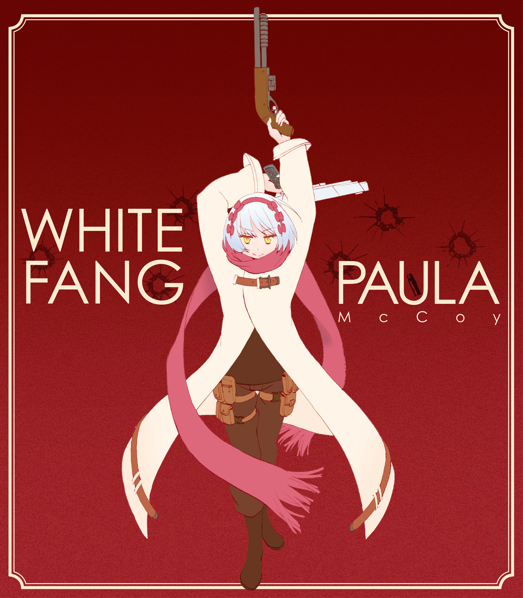
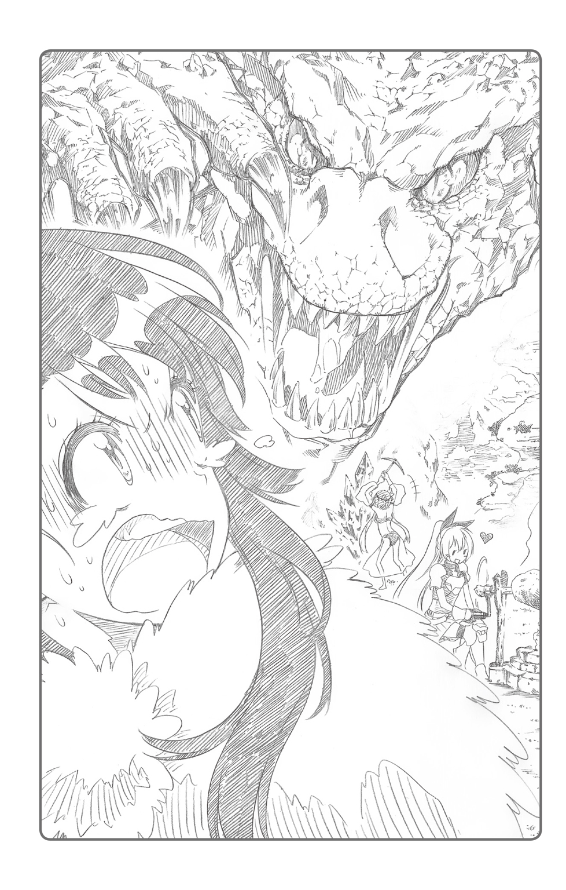

| ニセコイ ウラバナ 3 | |
| 古味直志 & 田中創 | |
この本は縦書きでレイアウトされています。
また、ご覧になる機種により、表示の差が認められることがあります。

閑静な住宅街を眼下に俯瞰し、銀髪の少女は白い吐息を漏らす。
少女が手にした双眼鏡は、十二月の空気と同じくらいに鋭い冷たさを帯びていた。
「......先ほど、標的を確認したわ。ゴロツキが六名、連れだって博士の家に裏口から侵入した。見た感じ、どいつもこいつも大したことはなさそうな相手ね」
『気をつけろよ。いくら相手が雑魚だろうと、人質を取られてはまずい』
通信機を通じて聞こえてくるのは、同僚の冷静な声だ。こちらを心配してくれているのはわかるのだが、どうもそれが自分の実力を過小評価しているようで、少し腹立たしい。
少女は、いつものようについ声を荒らげてしまった。
「わかってるわよ黒虎。要は、博士が連中の手に落ちなければいいんでしょう」
『いや、それだけじゃない。あの家には今、ホーネット博士の娘もいる。彼女を盾にされると厄介だぞ。なにせ彼女はまだ十三歳――お前と同い年なんだからな。ポーラ・マッコイ』
「その名前で呼ぶなって言ってんでしょ」
つっけんどんに答えながら、少女はくるりとその身を翻した。双眼鏡の代わりにコートの懐から取り出したのは、白と黒の二丁の大型拳銃だ。
少女は手際よく弾倉に弾丸をこめ、安全装置を解除する。あとは室内に踏みこむだけ。任務の準備は整った。
「私は白牙。これでも超一流のヒットマンなんだから」
※
「本当の本当に辛い出来事に直面したときには、神様に祈りなさい。神様は、いつでも救いの手を差し伸べてくださいます」
昔通っていた教会の牧師さんが、お説教のたびに言っていたことだ。
しかしわたし――クロエ・ホーネットは、今日この日この瞬間まで、「本当の本当に辛い出来事」というのがどういう場面を指すのか理解できなかった。思えばそれは、実に幸いなことだったのだろう。
だから今、そういう場面に直面して、わたしは初めて気がついたのだ。人間は絶望に叩き落とされたとき、そもそも「祈る」以外の選択肢が取れなくなってしまうものなんだ、と。
「ホーネット先生、俺たちゃ、ビジネスの話をしてるんですよ」
赤シャツの男はソファーに腰を下ろすと、ふう、と紫煙を吐き出した。
ひっくり返された戸棚。乱雑に散らかった陶器の破片。割られた窓ガラス。母の遺影の入った写真立ても、粉々に叩き壊されてしまっている。
いつもきちんと整理整頓を心がけていたリビングは、今や竜巻でも直撃したかのような惨状を呈していた。突如我が家に押し入ってきた闖入者たちは、ものの十数分でわたしの日常を破壊しつくしたのである。
「いやいや、なにも難しい話じゃないんです」
絨毯に灰を落としながら、男は続ける。
「先生が大学の研究室で抽出に成功したという例の化学物質――確か、メチルアノドトキシンとかいう名前でしたっけ？ 先生は、その抽出法を俺たちに教えてくれるだけでいいんです。......ええ、もちろん相応の対価は用意するつもりですよ」
煙草をつまむその指には、悪趣味なほどに大きな金色の指輪が嵌められていた。
派手な赤の開襟シャツ。肩口まで垂れたブロンド。汚らしい無精ひげ。体格のいいゴロツキを何人も従えているあたり、どうみても堅気の人間ではない。
「十万ドルでも二十万ドルでも――先生のお望みの額をおっしゃってくださいよ。俺たちだって、これ以上暴力を振るうのは心が痛む。経済的に解決できれば、それに越したことはありませんから」
どうしてこんな粗暴な男たちが、この家で好き勝手に振る舞っているのだろう。いったいわたしたちが何をしたというのだろう。胸に湧き上がるのは、そんな疑念や怒りばかりだった。
もっとも、凶悪なゴロツキ相手にそれをぶつけることも難しい。
今のわたしは腕を後ろ手に縛られ、床にうつ伏せに押しつけられているのだ。痛くて辛くて悔しくて、じわりと視界が滲んでくる。
わたしの横で、父がうめくように応えた。
「研究を外部に漏らすわけにはいかない。いくら家を荒らされようが、金を積まれようが、私は決してしゃべらない」
殴られた頰のアザが痛々しい。わたしが去年プレゼントしたシャツも、吐血によって赤黒く染まってしまっている。わたしと同様、父も床に押さえつけられているのだが、身体に受けた暴行のあとはわたしの比ではなかった。
無抵抗の人間にこんなことをするなんて、この連中、本当に血の通った人間なのだろうか。
赤シャツはわたしのほうに煙草を向け、にやりと口の端をつり上げた。
「娘さん、まだ十三歳でしたっけ？ 俺もさすがに、こんな小さな女の子にまで手を上げたくはないもんだ。顔に傷でも残ったら一生が台無しですからねえ」
思わず「ひっ」と息を吞む。これがただの脅しでないことは直感的にわかった。この粗暴な男は、たとえ相手がわたしのような小娘だろうと躊躇なく手を上げるだろう。
「やめろ......！ クロエは関係ない！」
「先生、よく考えてみてくださいよ。俺たちにゃ、あなたの研究成果を大金に変えるツテがあるんです。意地張って痛い思いするより、一緒にビジネスで美味しく稼ぎましょうや」
「なにがビジネスだ！ お前たちは、私の研究成果を麻薬作りに利用したいだけだろう!?」
「ええ、まあ、ぶっちゃければそのとおりです。先生の抽出した物質は、画期的な麻薬の材料になるらしいっすからねえ。なんでも、大麻なんて比較にならないくらいトベる、とか」
こめかみの近くでクルクルと指先を回す仕草をしながら、男は続ける。
「先生の作る新薬......俺たちのルートなら、これまでの相場の十倍、いや、二十倍で捌けるでしょう。まさに金の成る木ってヤツですわ。ははっ」
赤シャツがほくそ笑むと、わたしや父の身体を押さえつけているゴロツキたちも、つられるようにして下卑た笑い声をあげた。
こいつらは、他人を食いものにすることしか考えていない連中なのだ。正直、虫唾が走る。
父も同様に感じたのだろう。怒りのあまり顔を真っ赤にして叫んだ。
「ふざけるなっ！ あの研究は、医療に役立てられるべきものだ！ お前たちのような薄汚い密売人どもに渡すわけにはいかない！」
「まったく、頭の固い教授先生だ」
赤シャツが「おい」と合図を送ると、父を押さえつけていたスキンヘッドの男がおもむろに立ち上がった。何をするのかと思えば、男は、父の横腹を思いきり蹴りあげたのだ。
腹部に革靴の先端がめりこみ、父が「ぐうっ」とうめき声をあげる。
またしても目の前で繰り返される暴行に、わたしは全身から血の気が引くのを感じた。悲鳴をあげたくても、あまりの恐ろしさに声が出せない。
「ほらほら先生、お嬢ちゃんも怖がってますよ？ 早く抽出法を教えてくださったほうがいいんじゃないですかねえ」
恐怖に目を見開くわたしの姿が滑稽だったのか、赤シャツの男はサディスティックな笑みを浮かべた。ひとに暴力を振るって笑えるなんて、最低の男だ。
「わ......私は屈しないぞ」口の端から赤い血を垂らしながら、父はうめいた。「たとえ殺されようと、お前たちに協力などしない。私の研究は、ひとを苦しめるためのものではないんだ」
「どこまでも強情な方だ......。まあいいでしょう。先生が自発的に協力してくれないってんなら、今度は娘さんに痛い目に遭ってもらうしかありませんね」
男の冷たい声音に、父がはっと表情をこわばらせる。
「よせ、やめろ！」
「私だって、好きこのんで子どもに暴力を振るいたいわけではないんですよ。悪いのは、あくまで頭の固い先生のほうですからね」
猛禽類を思わせる冷徹な眼差しが向けられた。容赦をする気は微塵も感じられない。
赤シャツは懐から黒光りする拳銃を抜き出し、その銃身を逆手に握る。
「さて、これで少しは先生の口が軽くなるといいんですが」
怖い。あんなので思いきり殴られたら、きっと血がたくさん出てしまう。頭が割れてしまうかもしれない。
男は鷹揚にソファーから立ち上がると、わたしの前にしゃがみこんだ。
「悪いねぇお嬢ちゃん。恨むなら、パパを恨むんだよ」
「やめろ、やめてくれ！」
父の制止の声をあざ笑うかのように、赤シャツは拳銃を思いきり振りあげた。
一瞬のちに訪れるであろう耐え難い激痛を想像し、わたしは瞼をぎゅっと閉じる。
どうしてこんな目に遭わなければならないのか。納得できない。ぜんぜん納得できない。牧師様、神様は本当に救いをくださるの――!?
心の中で叫んだその瞬間。
パァン、という乾いた音が、室内に響きわたった。
――銃声!?
撃たれたのだろうか。わたしは目を見開き、周囲をきょろきょろと確認する。
身体のどこにも銃創はない。近くに横たわっている父にも、撃たれた様子はなかった。とりあえず、ほっと安堵の息を漏らす。
どういうわけか、顔をしかめていたのは赤シャツだった。
「な、なんだてめえ......!?」
先ほどまで拳銃を握っていた手を押さえて、憎々しげに掃き出し窓のほうをにらみつけている。
いったい何が起こったのだろう。男の視線の先――割れた窓ガラスの向こうからこちらを見ていたのは、不思議な存在感を帯びた少女だった。
「無抵抗の子どもに手を上げるなんて、とんだ下種野郎がいたものね」
雪のように真っ白な肌。きらきらと輝くプラチナブロンドの髪。
あどけなくも、その眼差しは凜として鋭く。
裾の長い白のコートが、背中ではためく翼のように翻っている。その神々しい姿はまるで、
「て、天使様......？」
「そんな綺麗なもんじゃないわ。ヒットマンよ」
少女が両手に握るのは、二丁の拳銃だった。小さな手には不釣り合いなほど大きな、白と黒の一対の大型拳銃――わたしの危機を救ってくれたのは、彼女なのだろうか。
白いコートの少女は、窓枠を蹴り、軽やかに床に降り立った。ふたつの銃口を赤シャツの男に向けながら、にこり、と微笑んでみせる。
「誰も動かないで。身体に風穴を開けられたくなかったらね」
少女の言うとおり、誰も微動だにできなかった。わたしや父はもちろんのこと、ゴロツキたちも息を吞んで少女を見つめている。
いったい何者なんだろう。
背はそんなに高くない。もしかしたらわたしよりも年下――小学生くらいかも。あんな仰々しい拳銃さえ握っていなければ、ジュニアモデルとして通用するぐらいに可愛らしいルックスの女の子だ。ゴロツキどもが跋扈する室内には、ぜんぜん似つかわしくなかった。
それでもこの少女には、一瞬にして強面の男たちを黙らせるだけの威圧感があったのだ。武装した男たちのいる部屋に飛びこんでくるなんて、普通の人間にできることではない。
「てめえ、ビーハイブの人間だろ」赤シャツがつぶやいた。「そういや、聞いたことがあるぞ。最近ビーハイブのガキの殺し屋が、敵対組織の縄張りを潰して回っているってな」
「あら、私のことを知っているの？ なら話が早いわね」
少女は、満足げに目を細めた。
男の口ぶりからすると、どうやらこの子もそっちの世界の人間らしい。
こんなに愛らしい見た目の女の子が、まさか殺し屋だなんて――。少女の不敵な微笑みに、わたしは呆気に取られてしまっていた。
「大方、俺たちのビジネスの匂いを嗅ぎつけてここにやってきたんだろう？ ふん、まるでハイエナのような連中だぜ」
「勘違いしないで。うちのボスは麻薬権益になんか興味はないわ。ただ、あなたたちみたいな薄汚いヤクの売人に、これ以上縄張りを広げてほしくないだけ」
「薄汚い、ときたか。お前らだって、綺麗事だけでやってきたわけじゃねえだろうに」
赤シャツの男は、いまいましげに鼻を鳴らした。
「まあどのみち、ビーハイブごときに先生の研究成果を渡すつもりはねえぜ。邪魔はさせねえぞ、黒虎――！」
「ん？ 黒虎？」少女が、眉をぴくりと寄せた。「ちょっと待って。なんでそこであいつの名前が出てくるのよ。今ビーハイブで一番ホットなヒットマンっていったら、白牙のことでしょうが」
「ホワイト......何だって。誰か知ってるか？」
仲間を見渡す赤シャツだったが、ゴロツキたちは皆一様に首をかしげるばかりだった。
「何それ」「ぜんぜん聞いたことねえ」「ガキの殺し屋っつったら黒虎だろ」「つーかなんだよ白牙って」「だせえ」「パクリじゃねーの？」
「パクリじゃない！ ビーハイブの若手ナンバーワンは、黒虎じゃなくて、白牙なの！」
馬鹿にされたと思ったのか、少女は頰を朱色に染め、声を張り上げた。
「だいたいほら、トレードマークのコートだってばっちり白でしょーが！ わかったらしっかりその目に焼きつけて――」
と、少女が自分のコートの裾を指し示そうとしたそのとき。
一瞬の隙を逃さず、赤シャツが自分の懐に手を伸ばした。
「誰だか知らねえが......殺し屋なんぞまともに相手にしてられるか」
赤シャツの手には、細長いスプレー缶のような代物が握られていた。彼はすかさず先端のピンを引き抜くと、その缶を床に叩きつけたのだ。
「閃光手榴弾!? しまっ......!?」
少女が叫んだときには、何もかもが遅かった。スプレー缶が弾け飛び、轟音とともに強烈な光が放たれたのだ。
目の前が真っ白で何も見えない。鼓膜もキィンとなって、役に立ちそうになかった。
いったい何が起こっているのだろう。
――あの子は？ パパは無事なの？
数十秒してようやく耳鳴りが収まり、うっすらと視界も回復してくる。わたしの目にぼんやりと映ったのは、悔しそうな表情で歯嚙みする白いコートの少女だった。
「ちっ、してやられた」
室内には、彼女の他に人影はない。
あの赤シャツやゴロツキ連中も、それから縛られていた父も、いつの間にか姿を消してしまっていた。先ほどの強い光に乗じて、どこかに逃げ去ってしまったのだろうか。
少女は拳銃を懐にしまうと、わたしの眼前で腰を下ろした。少し不機嫌そうな仏頂面で、じっとこちらを見つめてくる。
綺麗な色の瞳だな、と思ってしまった。
「あなた、クロエ・ホーネットね。ダニエル・ホーネット博士のひとり娘の」
「そ、そうだけど」少女の整った顔を見上げながら、わたしは尋ねる。「ねえ。パパは？ パパはどこ行っちゃったの？」
「ホーネット博士は、やつらに連れていかれたみたいね」
わたしの両手の縄を解きながら、少女が淡々とつぶやいた。
「きっと邪魔が入らないようアジトに連れこんで、無理やり麻薬作りの方法を聞き出すつもりじゃないかしら」
「そんな......！」
ごくり、と息を吞む。
やつらは躊躇なく他人に暴行をはたらくような連中なのだ。そんなやつらのアジトに連れていかれて、無事で済むはずがない。きっとやつらは父に激しい拷問を加え、何が何でも化学物質の抽出方法を聞き出そうとするに違いない。
「パパが死んじゃう......！」
わたしにとって、父は唯一の肉親だった。
大学の研究で忙しいかたわら、父は男手ひとつでわたしをここまで育ててくれたのだ。頑固で厳しいところもあるけれど、どれだけわたしを愛してくれているかは言うまでもない。
そんな父が、あんな恐ろしい連中に捕まって殺されようとしている――。そう思うと、心臓がぎゅっと鷲づかみにされたような感覚に襲われた。
「どうしよう、なんとかしなきゃ！」
もはや、いても立ってもいられなかった。連中の手から、一刻も早く父を取り戻さなければならない。そう思って、わたしは急いで戸口に向かおうとしたのだが、
「待ちなさい。あなた、どこ行くつもりよ」
振り返ると、白いコートの少女が冷ややかな目をこちらに向けていた。
「どこって......パパを助けに」
「パパを助ける？」ふっと少女が口元を歪め、肩をすくめる。「相手は武装した売人集団よ。アジトの場所だってわからない。あなたのような小娘に何ができるの」
小娘というなら、そっちだって同じでしょうに――。喉まで出かかったその言葉を吞みこみ、わたしは少女をにらみつけた。
「それは......その、警察に頼むとか」
「警察？ はん、なに吞気なこと言ってんの。この街の無能な警察じゃ、何もできやしないわよ。だいたい、あんな連中をのさばらせておくくらいだもの、力量もたかが知れてるわ」
鼻で笑う少女の言葉に、わたしは肩を落とした。
それは確かに、彼女の言うとおりなのかもしれないけれど。
「でも、誰かが助けなきゃ、パパが――」
青ざめるわたしに、少女は「心配いらないわ」と告げる。
「博士の知識は連中にとって貴重なものなのよ。いきなり殺しはしないわ。......たとえ博士が情報を吐かされたとしても、少なくとも麻薬の製造ラインが整い、安定するまでは生かされているでしょうよ」
新しいクスリを作るには、それなりの手間がかかるものよ――と、少女は涼しい顔で言う。
わたしと歳もほとんど変わらない女の子のはずなのに、「殺す」とか「クスリ」とか、ずいぶん物騒なことを言うものだ。見た目とのギャップがものすごい。
「それって、どのくらい時間の余裕があるの？」
「そうね。あくまで予想だけど――一か月くらいは余裕があると思うわ」
一か月。逆に言えば、もしその期限を越えたら、父は始末されてしまうかもしれない、ということだ。どこに潜伏しているのかもわからない連中を捜し出すのに、一か月という期間は決して長いものではないだろう。
「ま、あなたは気長に待っていればいいのよ」少女は薄い笑みを浮かべた。「どのみちアジトが判明し次第、あの連中は私が叩き潰すことになるだろうから。......まあ、それがあなたのパパの奪還作戦になるか、仇討ちになるかは状況によるけどね」
「仇討ちって、それじゃ遅すぎるよ......」
少なくとも彼女には、積極的に父を助けてくれるつもりはないようだった。
もっとも会ったばかりの人間なのだ。それが当然の反応なのかもしれないけれど。
「ともかくあなたにできることは何もない。とっととこの街を離れて、施設にでも保護してもらえばいいわ」
じゃあね、と手を振りつつ、少女は部屋を出ていこうとする。
ダメだ。このまま見送るわけにはいかない。何の力もないわたしにとって、父を救い出す唯一の希望は、今のところこの子だけなのだから。
わたしは慌てて、「待って！」と彼女のコートの袖口を握った。
「なによ」
「お願い、パパを助けて！ 警察が頼りにならないなら、あなたに頼るしかないの！」
「はあ？ なんで私が」
「あなた、すごいヒットマンなんでしょう？ 若手ナンバーワンの殺し屋だって、さっき自分で言ってたじゃない！」
「若手ナンバーワンの殺し屋......それはまあ、うん。そのとおりね。ぶっちゃけ超一流よ」
少し得意げに、彼女は口元をゆるめた。
「でも、あくまで私の任務は、あの連中が新しいクスリをばら撒くのを止めることなの。あなたのパパを助ける義理はないわ」
すげなく断られてしまい、わたしは一瞬言葉に詰まってしまう。
しかし、あきらめたら終わりなのだ。なんとしてでも彼女には手を貸してもらわねばならない。
「だったら『助けて』とは言わない。せめて、わたしにパパを助ける方法を教えて」
「助ける方法？」
「銃の使い方とか、敵のアジトに潜入する方法とか。......あなたみたいに、悪いやつと戦える力が欲しい。それ以上のことは要求しないから」
そんなわたしの言葉を、少女は「はっ」と鼻で笑う。
「あのねえ......一朝一夕で教えられることじゃないわよ」
「それでも、付け焼き刃でもいいから教えてよ！ 誰も助けてくれないなら、もうわたしがパパを助けるしかないの。ねえ、お願い。もしお金が必要なら、わたしの教育費の貯金を崩してでも――」
必死の懇願に、白コートの少女は顔をしかめた。
うざったいと思われても構わない。彼女に頼るしか、わたしにできることはないのだ。
「まったく、面倒くさい子ども......」
少女がつぶやいたそのとき、彼女のお腹が、ぐう、と鳴った。
「え」
少女の視線は、隣のキッチンへ向けられていた。
そちらから漂ってくるのは、こんがり焼けた芳醇なバターの香り――ゴロツキどもが押し入る直前までわたしが焼いていた、オーブンのクッキーの匂いだ。
「なんか、すっごくいい匂いがするわね」
少女の喉がごくりと鳴るのを、わたしは見逃さなかった。
※
このあたりを縄張りとする最大規模のギャング組織の名を、ビーハイブというらしい。
この少女――白牙さんは、そのビーハイブの中でも知る人ぞ知るヒットマンだという。ちなみに本名は秘密。暗殺者たるもの、みだりに名を明かすことはしないそうだ。
「んぐもぐ......だいたいね、あなたみたいな子どもが裏社会の人間を相手にするなんて......むしゃむしゃ......冗談言うなって話よ。もぐもぐ......私たちみたいに、ホントに小さいころから訓練受けてきたんならともかく。......ごくん」
そんな最強のヒットマンは今、ホーネット家のキッチンテーブルの前で、思うさまクッキーを食い散らかしている。キッチンもリビングも荒らされたままだったが、空腹の彼女にはそんなことは関係ないようだった。
「はぐはぐ......ああこれ、やみつきになる味だなあ......」
よほど美味しかったのか、彼女は出されたクッキーを怒濤の勢いで平らげてしまった。
ゆうにふたり分はあるはずだったのに、皿の上にはもう欠片ひとつ残されていない。ものすごい食い意地である。
どっちが子どもなんだろう――。わたしは肩をすくめた。
「げっぷ......。美味しかった。あなたがこのクッキー作ったの？ 上手いもんね」
「昔亡くなったママのレシピ帳で覚えたの。パパと一緒に、小さいころから練習したから」
わたしの言葉に、白牙さんは「ふうん」とうなずいた。
彼女は口元についたクッキーのかすを袖口で拭いながら、
「で、さっきの話だけど、......アレ、つき合ってやってもいいわよ」
「え？」
「だから、ヒットマンの技術を学びたいって話。この白牙が直々に、あなたを指導してやってもいいって言ってるの」
「本当!? いいの!?」
突然のうれしい申し出に、思わず席を立ってしまった。
さっきまで渋っていたのに、いったいどういう風の吹き回しなのだろう。
「だって、あなたこのままほっといたら、パパを助けるために自棄になってバカなことしそうじゃない。せめて最低限身を守れる方法くらいは教えてあげないと、こっちの寝覚めが悪くなりそうだから」
反論はできなかった。事実、彼女の協力が得られなかった場合、街中のクスリの売人に声をかけてでも連中を捜すくらいのことは考えていたのだ。十三歳の小娘にとってそれがどれだけ危険なことかは、わたしだって十分にわかっている。
「逃げた連中を見つけ出すのは、どのみちもう少し時間がかかりそうだし......。どうせならあなたを保護しがてら、このクッキーをもっと食べてみたいしね」
白牙さんが空っぽの皿を指差して言った。
「私があなたを、一か月で超一流のヒットマンに仕立て上げる。んで、その代わりあなたは私のために、毎日お菓子を作る。......そういうギブアンドテイクでどう？」
「う、うん！ 是非！」
少女の提案に、わたしは一も二もなくうなずいた。お菓子作りなんて、父を助けるための対価にしては安いものだ。クッキーくらい何枚焼いたって苦ではない。
「取引は成立ね。......じゃあ行くわよ」
少女はマフラーを巻き直し、おもむろに立ち上がった。
「え？ 行くってどこに」
「近くのセーフハウス。連中、もしかしたらまたこの家を捜索に来るかもしれないでしょ。そんなことになったらいろいろ厄介だから」
なるほど確かに。また連中が、父の研究資料を探しにここを訪れる可能性もなくはないのだ。このままここにいたら、またあの連中に襲われるかもしれない。
「そのセーフハウスって、どこにあるの？」
「ふたつ通りを挟んだ安ホテルの一室よ。武器も資材も食料も、いろいろ備えてあるから大丈夫......ああ、だけどその前にスーパーに寄っていく必要はあるわね」
「なんでスーパー？」
首をかしげるわたしに、白牙さんが笑みを返す。
「だって、何はなくとも、まずはクッキーの材料を揃えなくちゃならないじゃない？ 長丁場になるかもしれないし、大量に買っておかなきゃ」
きらきらと目を輝かせるその様子は、どう見たって同年代の普通の女の子――超一流のヒットマンとは、とても思えなかった。
わたしは「あはは」と苦笑いを浮かべるしかなかった。
「ふっふっふ、クッキー食べ放題の毎日......。わくわくするわ！」
この子に教えを乞うことにして、本当に良かったのだろうか。一抹の不安がよぎったものの、わたしは心の中でそれを否定する。
今はとにかく、この超一流のヒットマン（自称）を信じるしかないのだ。
※
ホテルに着いた翌日の早朝。
白牙さんに屋上に呼び出されたわたしは、寒空の下で寝ぼけ眼を擦っていた。
「本当なら今頃、学校に向かってる時間かな」
手すりに身を預けながら、ぼんやりとつぶやく。
眼下に見えるのは、車や通行人がひっきりなしに行きかう大通りだ。
相変わらず、この街の空気は濁っている。いつだって空が白いのも、どことなく息苦しいのも、人間が多すぎるせいだろう。
この中のどのくらいのひとが、神様にすがりたいくらいの絶望を経験したのだろう。
これだけ多くの人間がいるのだ。つらい目に遭っているのは自分だけではあるまい。
だからってヒットマンになろうだなんて考える人間は、わたしの他にはいないかもしれないけれど。
「......ふう」
肺に冷たい息を送りこみ、努めて意識を切り替える。
ともあれ今は集中しよう。白牙さんによるヒットマン養成講座は、早速始まっているのだから。
「むぐむぐ......標的を始末するために、もっとも安全かつ確実な方法は何か。ごくん......あなた、それがわかる？」
隣の白コートの少女が、クッキーをぼりぼりと齧りながら問いかけてきた。
「標的を始末......」
「そう。仕事を依頼されたヒットマンが......もぐもぐ......まず最初に考えてみるべきやり方、って言いかえてもいいわね」
しゃべりながら食べているため、食べかすがぼろぼろと彼女の足元に散らばっていく。
朝食代わりにお菓子はどうなのか。せめて野菜サラダでも食べたほうがいいんじゃないのか。そう忠告したのだが、彼女は非常に偏食が激しいらしく、聞く耳を持たなかった。
言いたいことはいろいろあったが、今は彼女の問いに答えるべきだろう。
「えーと、なんだろ？ 後ろからナイフでひと突き、とか？ ......ああでも、こっそり料理に毒を盛ったりしたほうが安全ではあるのかな」
朝っぱらから物騒な話だなあ、とは思う。
しかしこれも訓練の一環。父を助けるためなのだから、文句を言ってはいられない。
「ブー、ハズレ」
白牙さんは意地悪っぽく笑うと、脇に置いたスポーツバッグをごそごそやり始めた。
彼女が中から取り出したのは、金属製の筒が数本、それから台座のような木製の板に、いくつかのネジや金具の類。彼女がそれらいくつかの部品をカチャカチャ組み合わせていくうちに、だんだんとわたしにもわかる形になってきた。
「それ、ライフル？」
二脚とスコープの付いた、長い銃身の狙撃銃である。
「そうそう。正解はこれ、狙撃ね。標的に近づくことなく仕事を終えられるんだから、これ以上の手段はないわ。プロなら、まずはどうやって標的を狙撃するかを考えるのが当然ってくらい」
組み立てたライフルを屋上の床に置き、彼女は目を細める。
「逆に言えば、標的に近づかなきゃいけないって状況に追いこまれた時点で、ヒットマンとしては半分負けてるのも同然なのよ」
「へえ......なるほど」
「というわけで、まずは狙撃術の訓練からよ」
白牙さんがコンクリートの床にうつ伏せに身を横たえた。
彼女に促され、わたしもその横に腹這いになる。
「んじゃほら、このグリップ握って。スコープ覗いて」
「えっ、いきなり？ これでなにか撃ったりするの？」
銃なんて撃ったこともない。触ったことがあるのもせいぜい、おもちゃの水鉄砲くらいのものである。わたしが戸惑っていると、少女が鼻で笑った。
「さすがに素人に最初から撃たせたりしないわよ。ていうか、弾だって入ってないし」
「だ、だよね」
内心ほっとする。父親を救いたいとは思っていても、いきなり実弾を扱うことにはやはり抵抗があったのだ。こんなわたしは、もしかして決意が甘いのだろうか。
「今日教えてあげるのは、その前段階。基本中の基本だけど、狙撃術では一番大事なことよ」
「何をすればいいの」
「簡単よ。〝何もしない〟の」
どういう意味なのだろう。
顔にかかる銀の髪を払いながら、少女は意味深な笑みを浮かべた。
「つまりは〝待つ〟ってことね。狙撃手にとって一番大事なことは、実は索敵技術でも風向計算でもない。標的を確実に始末できる瞬間までいっさい微動だにせず、機を窺うことなのよ」
生身の人間が標的である以上、相手が予想どおりのポイントに確実に来るとは限らない。かといって狙撃手がうろうろしていたら、容易に相手に発見されてしまう。
だからこそ、〝待つ〟こと――集中力を決して切らさず、標的がポイントに入るその瞬間を待つことが、狙撃術においてもっとも重要なことらしい。
「なんだか難しそうだなあ。根気がいりそう」
「だから今日はまず、その根気から鍛えるってわけ」
彼女は、ライフルのスコープを少しだけ右に傾けた。
「公園の入口脇にある、あの赤い屋根の雑貨屋が見えるわね」
彼女の言うとおり、スコープの十字線の向こうに赤い屋根の小さなお店が見えた。
ここから一キロほど離れているだろうか。あそこには、わたしも何度か足を運んだことがある。禿げ頭の中年店主が切り盛りする、日用雑貨店だった。
「今からあなたはそのスコープから目を離さず、ずっとあの店の入口を見張るの。んで、店に入った人数を漏らすことなくカウントする」
言いつつ、彼女もコートの懐から双眼鏡を取り出した。一緒に監視するつもりらしい。
「見張ってるあいだは、絶対に動いちゃだめ。おしゃべりもトイレも禁止。今からきっかり二時間よ。いいわね」
「に、二時間も？」
百二十分。秒で言えば七千二百秒。
大嫌いな歴史の授業に換算すれば、それをおよそ二回分である。こんな果てしない時間をずっと集中して過ごせだなんて、いきなりスパルタが過ぎるではないか。
だが、白牙さんの表情は厳しかった。
「実際の狙撃任務じゃ、二時間くらい短いほうよ。何十時間も、下手すれば何日も待機しなきゃならないことだってあるんだから。ヒットマンを目指すなら、このぐらい余裕でできるようになりなさい」
「そうは言っても......」
「なに、弱音を吐く気？ パパを助けたいんじゃなかったの」
少し意地悪そうに、彼女は口の端をつり上げる。
そんなことを言われてしまったら、わたしだって引き下がれない。
「う......わかりました、やります」
気合いを入れて、銃のグリップをしっかり握る。
「そうそう、その意気よ。......もしゃもしゃ」
クッキーの咀嚼音まじりの激励は何とも気が抜けるものだったが、気にしたら負けだ。
雑音を頭からシャットアウトしつつ、わたしはスコープに向かうことにした。
とはいえ寒空の下でただ何もしない二時間というのは、想像を絶する苦行であった。
空気は肌を刺すように冷たいし、アイスリンクのように冷えきったコンクリートは身体からどんどん熱と体力を奪っていく。
三十分くらい前から、銃を支える腕は引きつりっぱなしだった。指先はすでに感覚がなく、なんだか目もしばしばし始めている。全身を疲労と倦怠感が支配していた。
こんな状態でなんの変哲もない店先を淡々と見張り続けるなんて、まともな神経でできることではない。やはり白牙さんの言うとおり、ヒットマンへの道は楽なものではなかったのだ。
――二十三......、あ、二十四人目。
それでもわたしはなんとか課題をこなすべく、必死にスコープに齧りついていた。
これも父を救うため。切れかけた集中力をつなぎとめるのはその一念のみだった。
――三十七......三十八。
弱音と疲労を押し殺し、頭の中で淡々と客数をカウントし続ける。
そうやってしばらく数え続けているうちに、いつの間にか太陽の位置も高くなったようだ。気温も少し上がってきて、身体の震えも収まってきたような気がする。
そろそろ二時間たったころかな、と思っていると、
「んにゃ......」
なんだろう。すぐ隣から、変な呟きが聞こえてきた。
スコープから顔を離して、ふと脇の白牙さんの様子を見てみると、
「わはは、ざまーみろ黒虎......むにゃ......」
そこには、大口を開けて居眠りする超一流ヒットマンの姿があった。
あろうことか、自分の片腕を枕にして気持ちよさそうに寝息を立てている。
クッキーの欠片が地面に散乱しているあたり、お腹がいっぱいになって眠くなってしまった......といった感じである。口元から涎まで垂らしているのが、なんというかものすごくアホっぽい。ひとに偉そうに指示しておいて、なんなのこの子。
「ねえ、ちょっと」
肩を揺すると、彼女は「はえ？」と不思議そうな表情で目を開けた。顔を上げて、潤んだ瞳で左右を見回したあと、彼女はようやく自分がどういう状況にいるのか思い出したらしい。
「......ね、寝てないわよ。ばっちり起きてたわよ」
「いや、思いっきり寝言を言ってたけど」
「ち、違うっての！ これはえーと......そう、瞑想よ」
引きつった笑みを顔に張りつけ、白牙さんは続けた。
「私くらいの手練れになると、集中力が高まりすぎて瞑想状態に移行してしまうのよ。......アレね、つまり、瞑想しながら頭の中で狙撃シミュレーションを組み立てていたわけ」
「はあ、シミュレーション」
「そ、そうよ。素人のあなたにはわからない境地かもしれないけどね」
彼女は、涎で濡れた口元を拭いながら立ち上がった。
「と、とにかく、今日の訓練はこんなところかしらね」
「え、もう終わり？」
「そう。ひと眠り......じゃない、集中してたらお腹が減っちゃったんだもん」
白牙さんの胃袋のあまりのフリーダムぶりに、わたしは絶句してしまった。
「ねえ、またクッキー焼いてよ。そろそろ十時のおやつの時間だし」
にっこり微笑む白牙さん。
クッキーのことで頭がいっぱいになっているからなのか、こっちが頑張ってカウントした客の人数すら、もはやどうでもよさげな雰囲気である。
「しょうがないなあ......」
そんなにいい笑顔で催促されてしまったら、もはや断ることなどできないではないか。
※
それから数日間、ホテルの屋上で毎日この狙撃訓練――の前座の待機訓練が繰り返されることとなった。
もっとも辛いのはわたしだけで、白牙さんにとっては、ただのおやつ＆お昼寝タイムである。最初のうちこそ、その態度はさすがにどうかと思ったりもしたのだが、三日も経つとツッコむ気も失せてしまった。
それにしても、毎日こうしてスコープを覗いているだけで、本当にヒットマンの技術を習得できているのだろうか。白牙さんの傍若無人ぶりに堪えるという意味では、確かにある種の根気は養われている気はする。だが、戦える力がついたかどうかといえば甚だ疑問だった。そもそもわたしは、銃の引き金ひとつ引けないままなのだ。
日が経つにつれ、心の中の不安はいっそう強くなっていった。一向に居所のわからない父親の安否が気がかりで、なかなか集中できないのだ。このまま人数数えなどしている場合ではないような気がする。こうしている間にも、父は拷問を受けているかもしれないのだ。
こうしてわたしがやきもきし始めていたころ、白牙さんはようやく次の訓練の開始を告げた。
「さて、今日は白牙式変装術を伝授するわ」
そう言う彼女に連れられてやってきたのは、ホテルからほど近い、街の中央公園である。
十二月も半ばを過ぎており、街路樹の葉はすっかり落ちてしまっていた。ベンチや芝生には真っ白な霜が降り、中央の噴水も凍りついていて動かない。すれ違うひとたちも皆コートの襟を立てて、足早に公園を通り過ぎようとしている。
そんなどこか物寂しい雰囲気の公園において、この銀髪の少女の出で立ちは確かに異彩を放っていた。
「変装術って......それ、変装のつもりだったの？」
少女が身にまとっているのは、胸元に大きな薔薇の飾りがあしらわれた深紅のドレスだ。
丈は膝上十センチ、輝くスパンコールの散りばめられた、派手でセクシーな代物であった。髪を無理やりアップにまとめ、襟回りをフェイクファーで覆ったそのスタイルは、ビバリーヒルズのセレブ気取りといったところだろうか。
アイシャドウを塗りたくった目を細め、少女は勝ち誇ったような笑みを浮かべた。
「ふふ......どうやら私の変装術の完成度に、ぐうの音も出ないようね」
「あ、ある意味言葉もないよ......」
その厚化粧。けばけばしい服装。どう見ても冬場の公園に相応しい格好ではなかった。変装術というには目立ちすぎである。素人目にも明らかに怪しい人物であった。
なにより一番おかしい部分は、その不自然に隆起した胸元である。
「ていうかその胸、何入れてるの」
もう数日間一緒に過ごしているのだ。この子が深刻な貧にゅ――もとい、華奢な体型であることはよく知っている。それがいきなりメロン大×２のサイズにまで膨らんでいるのだから、気になって当然であろう。
「ああ、これね」
怪しいふたつの膨らみを両手で抱えながら、少女がにやりと口元を歪めた。
「風船を入れてるの。見た目は間違いなく黒虎以上......それどころか、ジェシカ姉さんにも匹敵するレベルだわ。どっからどう見てもセレブで巨乳なセクシーギャルよね」
「セレブで巨乳なセクシーギャル......」
ツッコミどころだらけである。なんでこの子、こんなに自信たっぷりなんだろう。
「ふふん。ご覧なさい。周りの男どもが私に魅せられているのが、手に取るようにわかるじゃない」
艶めかしく腰をくねらせる白牙さんだったが、通行人たちは怪訝な表情をして通り過ぎていくだけだった。まあ、それが普通の反応だろう。わたしだって、ハロウィンでもなければ、こんなおかしな格好をした子と目を合わせたくはない。
「で、そのコスプレで、いったい何をするつもりなの」
「そりゃもちろん、色香で対象を惑わせる訓練よ」
「い、色香......？」
聞き違いではなさそうだった。驚くべきことに、この子の顔はいたって大真面目。自分に色香があると信じて疑っていないのである。
「そう。潜入任務じゃ、色仕掛けが必要になる場面もあるんだから」
「色仕掛けって、わたしたちみたいな子どもが？」
「つべこべ言わずにやるの。ほら、あれを見て」
白牙さんは、指先を噴水の隣に向けた。
そこには、ポップコーン売りのカートが一台止まっている。
カートの前にしゃがみこんで機器を掃除しているのは、エプロンを着けた瘦せた外見の青年だった。アルバイトの学生さんだろうか。
「あの店員を誘惑して、ポップコーンを奢ってもらうのよ。......まあ、私の美貌をもってすれば、イチコロでしょうけど」
「本当かなあ」
わたしが訝しげな目を向けたのが気に入らなかったのか、白牙さんはぷくっと頰を膨らませる。
「なによ。私の変装術と色仕掛けのテクを疑ってるの」
「えっ、むしろ信じられる根拠が皆無だけど」
「いいわ。だったらそこで見てなさい。あの店員が、私の美貌に骨抜きにされる様をね」
言うなり彼女は腰に手を当て、ポップコーンのカートへと歩き出した。
背筋を伸ばし、肩で風を切るように歩を進める。自信だけならパリコレモデルにも負けないような歩き方だった。
「はぁい、可愛い店員さん」
「いらっしゃ......え？」
店員のお兄さんは、白牙さんのおかしな服装を見るなり顔をしかめた。
が、そこは彼も商売人なのだろう。咳払いのあと、「ご注文は」と冷静に告げた。
風船おっぱいの少女は妙なしなを作りながら、
「キャラメル味、プリーズ」
うふーん、と、おもむろにファーを外し、肩口を露出させた。
開いた口が塞がらない、というのはこのことである。
まさか、あれが色仕掛けだとでも言うのだろうか。いや、いくらなんでもあれはない。色気の欠片も感じられない。いまどき小学生のお遊戯会だって、もっと魅力的な演技をする。
お兄さんも困惑した様子で、表情を引きつらせていた。
「......四ドル五十だよ」
「あらやだわ店員さん。私がこんなにサービスしてるのに、お代が必要なの？」
くねくねと身体を動かしながら、白牙さんが上目遣いに見上げる。その様子はもう、痛々しくて見ていられるものではなかった。
「タ・ダ・に・し・て♡」
「金がないなら帰ってくれ」
店員にそうそっけなく言われても、彼女はまったく店の前を動こうとしなかった。それどころかよりいっそうカートに肉薄し、
「ね、ねえ。そんなに強がらなくていいのよ。本当は私の魅力にメロメロなんでしょ？ さあ、遠慮せずにそこのキャラメル味をひと箱ちょうだい」
「いいから帰って」
「くっ、私の色仕掛けに屈しないだと......！ ふ、ふん。生意気な店員ね。わかったわ。そんなに言うなら必殺のセクシーポーズを――」
白牙さんが謎の前傾姿勢を取ろうとしたそのときだった。
「お嬢ちゃん、何してるの」
彼女の肩口を、ごつごつした男の手がつかんだ。
紺色の帽子と制服を身に着けた、筋骨隆々の大男である。腰のベルトに警棒を差したその人物は街の正義の番人、ポリスマンである。
「売店でお金払わないのは犯罪だよ。これ、社会の常識」
「あ、えーと、その」
「というか君、その格好なんなの。なんでそんな風船入れてるの」
「こ、これはセクシーギャルなので――」
「君、学校は？ どこに住んでるの？ 親は何してる？」
警官が懐から手帳を取り出したのを見て、少女は舌打ちまじりに踵を返した。
「お、おほほほほ！ 御免あそばせ！」
そのままこちらに向かって全力ダッシュ。
わたしの手を取り、公園出口へ向かって一目散に走り出したのだ。
「え？ に、逃げるの!?」
「だって、ギャングのヒットマンが警官に補導されたなんて恥ずかしいでしょ！」
背後からは「待て！ お前ら！」と野太い声が聞こえてくる。どうやらあの警官の目には、わたしもお仲間の不良少女に映っているらしい。
風船入りの胸をゆさゆさと揺らしながら、白牙さんが顔をしかめる。
「ああもう、走りにくいな、この格好！」
「だったら風船だけでもどっか捨てればいいのに！」
結局このあと、警官との追いかけっこはおよそ一時間あまりにも及んだ。
回り道に回り道を重ね、警官を撒いてようやくホテルにたどり着いたころには、もう心臓はばくばく、冬だというのに全身が汗まみれになってしまったほどだった。
しかしその元凶は、いっさい悪びれた様子を見せないのである。
「あの警官に顔を覚えられたかもしれないし......明日からはあなたも、道を歩くときには変装が必要かもしれないわね」
死んでもごめんだ、と思った。
※
あの白牙さんという女の子は、本当に手練れのヒットマンなのだろうか。実は担がれているだけなのではないだろうか――。彼女と一緒に訓練生活を送っているうちに、わたしの中でその疑念はますます強まっていった。
たとえば尾行術の訓練のときだ。
「あそこにお婆さんがいるでしょう？ 彼女のあとを、見つからないようにストーキングする。それが今日の課題よ」
相手は杖をついてのんびり歩く老婆なのだ。不用意に近づきさえしなければ、まず見つかることはない。ずいぶん簡単な課題だなあ――わたしはそんなふうに思っていたのだが、その予想は開始五分で覆されることとなった。
原因は、白牙さんの「ぶふうえくしょん！」という変なくしゃみである。これによって老婆に尾行を気づかれてしまい、訓練はあえなく終了となってしまったのである。
しかも情けないことに白牙さんときたら、尾行対象に「あらあらお嬢ちゃん、風邪かしら」などと気遣われた挙句、アメ玉までもらって喜んでいたのだ。そんな超一流ヒットマン（自称）の姿には、わたしも脱力せざるを得なかった。
爆弾製造の訓練はもっとひどかった。
「いきなり素人が手を出すのは危険よ。まずはプロの技術を見て学ぶことね」
場所はホテルの部屋に備え付けのキッチン。彼女は意気揚々と鍋の中に液体やら粉やらを次々と投入していったのだが――その時点で、わたしには嫌な予感しかしていなかった。
結果はそう、大爆発。
鍋の中身が炎をあげながら周囲に飛び散り、大惨事をもたらしたのである。
慌てて消火剤を撒いたので、幸いにもふたりとも無傷ではあったのだが、キッチンはすっかり黒焦げになってしまった。ここが火災報知機もろくに作動しない安ホテルだから何とか誤魔化せたものの、普通ならすぐに追い出されていたことだろう。
「い、今のは悪い例！ 火薬の量を間違えるのは、プロでもよくあることなの！」
取り繕うような笑みを浮かべた白牙さん。
わたしはもう呆れ果てて、彼女と目を合わせる気にすらならなかった。
そんなこんなで訓練の日々はグダグダと過ぎていき、今日ももう夕方である。
焦げついたキッチンを横目に見つつ、わたしは疲れはてた身体をベッドに横たえていた。
「もしかして、人選を間違えたのかな......」
一刻も早くヒットマンの技術を習得して、父の救出に向かわねばならないというのに。
しかしあの子ときたら、まるで役に立たないのである。暗殺術を教授してくれるどころか、無用のトラブルを引き起こすだけだ。
あの子は、見た目どおりのただの子どもなのではないだろうか。
だいたい間の抜けた顔でクッキーを頰張るその様子は、年相応の子どもにしか見えない。今だって、訓練そっちのけでお菓子の材料を補充しに行っているくらいだし。
父がさらわれてから、もう二週間以上が経過している。こんな調子で、本当にわたしは父を救出できるのだろうか。
――どうしよう、不安しかない......。
夕焼けに色づいていく窓の外を見ながら、やるせない気分で寝返りを打っていると、
「失礼する」
がちゃり、と部屋のドアが開かれた。
勝手知ったる様子で部屋に入ってきたのは、黒髪の東洋人だった。
歳はたぶん、わたしと同じくらい。長い睫毛、すらりとしたしなやかな体軀。精悍で凜々しい顔つき。ルックスだけなら、ものすごく美形な男の子――いや、女の子だろうか。身にまとっている無骨な軍用コートの上からでは、その性別までは判断できなかったけれど。
ホテルの従業員には見えない。もっとこう、鋭い雰囲気を持った人物だった。
少し身をこわばらせつつ、ベッドから起き上がる。
「あなたは？」
「ああ、怪しい者じゃない。私はビーハイブの人間だ。鶫誠士郎という」
セイシロウと名乗ったその人物は、にこりと頰をゆるめてみせた。
ビーハイブの人間といえば、白牙さんの同僚。つまりは味方だと考えていいのだろう。その爽やかな笑みに敵意がないことを感じ、わたしはほっと胸をなで下ろした。
「君はクロエ・ホーネットだな。連絡は受けている。......ところで、ポーラはいないのか？」
「え、ポーラって？」
わたしが首をかしげると、セイシロウさんは不思議そうに眉をひそめた。
「ポーラ・マッコイだよ。ほら、君を保護してるうちのエージェントだ」
言われてようやく、ああ、と思い至った。
どうやらそのポーラ・マッコイというのは、白牙さんの本名らしい。
「えっと、ポーラさん......なら今、お菓子の買い出しに行ってます」
ポーラ・マッコイ。暗殺者らしからぬ、ずいぶん可愛らしい名前ではないか。白牙なんて物騒な名前より、あの子には本名のほうがぴったりくるような気がする。
「お菓子の買い出しだと？ まったくポーラのやつ、保護対象をほったらかしにしてお菓子とは、実に吞気なものだな」
セイシロウさんは苦笑いを浮かべながら、キッチン脇のスツールに腰を下ろした。
このひとが白牙さんの同僚なら、いい機会かもしれない。わたしはセイシロウさんに、気になっていた疑問をぶつけてみることにした。
「あの、えーと、そのポーラさんのことなんですけど」
「なんだ？」
「あの子って、本当に一流のヒットマンなんでしょうか」
わたしの言葉に、セイシロウさんは一瞬きょとん、とした表情を浮かべる。
「だって、ドジでわがままで、すごく頼りないし。あれで超一流って本当かなあ、って」
「ああ、そういうことか」ふっと口元をゆるめ、セイシロウさんは続けた。「まあ、君の懸念も理解できる。現時点でポーラがヒットマンとして一流かと問われれば、それは否だと答えざるを得んな」
「やっぱり......そう、ですよね」
薄々感づいてはいたが、どうやら当たりだったらしい。他人の口から語られると、それはそれで結構なショックではある。
「それはそうだ。一流というのは皆、気の遠くなるような年月、自己鍛錬を重ねた上に、数々の修羅場を生き抜いてきた者たちばかりだからな。......私やポーラのようなひよっこじゃ、まだまだ一流を名乗るのはおこがましいよ」
白牙さんは、自分で「超一流」だと名乗っていたけれど――。あれはさすがに眉唾だったというわけか。
まあ、言われてみれば納得がいく。狙撃訓練中に居眠りしたり、意味不明なコスプレを変装術と言い張ったりする女の子が、超一流であるはずがないのだ。あれが裏社会で最強だというなら、この国に警察はいらなくなるだろう。
――ひよっこなら、あのダメ教官ぶりも当然かもしれないなあ......。
結局は、わたしの見こみ違いだったのかもしれない。ちょっとギャングの息がかかっているというだけで、基本的に彼女は見た目どおりのドジな女の子なのだろう。
最初に会ったときに密売人のゴロツキどもを追い払ったのも、彼女の実力というよりは、きっと組織の看板の力だったのだ。むしろそう考えるのが自然な気がする。
「努力の積み重ねなら、誰にも負けないやつだとは言えるがな」
と、セイシロウさんのフォローが入る。
もっとも、いくら努力をしたところで、その結果がアレじゃあ目も当てられない。大方あの子は、努力が空回りしてしまう子なのだろう。学校にひとりはいる、残念なタイプだ。
「時間の無駄だったかな......」
わたしがため息をついていると、セイシロウさんが不思議そうに首をかしげていた。
ため息だってつきたくもなる。白牙さんにつき合って、二週間も費やしてしまったのだ。これなら、自分で射撃練習場にでも通ったほうがまだマシだったかもしれない。こうしている間にも、父の命は危険にさらされているというのに――。
わたしが眉間に皺を寄せていると、セイシロウさんが「ところで」と口を開いた。
「本題に入りたい。君に頼みがあるのだが、よいだろうか」
「頼み？」
「ああ。すまないが、ポーラが戻ってきたらこれを渡してやってくれないか」
そう言ってコートのポケットから取り出したのは、手のひらサイズの黒革の手帳だった。
「なんですか、これ」
「なに、あいつに調べておいてほしいと頼まれていたものだ。......少々秘匿性の高い情報だったからな。こうしてアナログな方法で手渡さざるを得なかった」
秘匿性の高い情報......いったいなんだろう。
わたしが首をかしげていると、セイシロウさんが席を立った。
「それでは、私はこれで失礼する。任務に戻らねばならないからな」
「あ、はあ」
「ポーラも残念な部分は目立つかもしれないが、あれで悪いやつではないんだ。仲良くしてやってくれ」
手を振って部屋を出て行くセイシロウさんに、わたしは言葉を返すことができなかった。
もちろん、白牙さんが悪い子じゃないのはわかる。偉そうにお菓子を貪るさまも、どうしようもなくドジなところも、それはそれで可愛らしい。友達としてなら楽しい子だろう。
でも今のわたしに必要なのは、仲良く友達づき合いをする相手じゃない。一刻も早く父を助け出すために、力になってくれる人材だった。
「これからどうしよう......」
再びベッドに横になりながら、わたしは何の気なしにセイシロウさんから受け取った手帳をパラパラとめくっていた。
真新しい手帳の最後のページには、何やら手書きの地図のようなものが描きこまれている。どこかの建物までの道のりと、その建物内部の見取り図......だろうか。
「なんだろ。地図はこの近くの番地みたいだけど」
余白にはいろいろと文字が書きこまれているようだったが、ほとんど外国語だったのでよくわからない。かろうじて判別できたのは、たったひとつの単語だけだ。
「ダニエル・ホーネット――」
わたしは、その文字列に目を奪われた。綴りこそ外国語だったが、それは間違いなく父の名前だったのだ。
以前父の部屋で、外国の大学から贈られたトロフィーを見たことがある。この手帳に書かれた単語の文字列は、あのトロフィーに刻まれた父の名と同じである。わたしはそれを覚えていたのだ。
あれは確か、日本の大学から贈られたものだと聞いた覚えがある。
どうしてこの手帳に父の名前が記されているのだろう。わたしは気になって、この手帳をもっとよく調べてみることにした。
ホテルの受付から、運よく辞書を借りることができたのでそれを引きながら、手帳の単語を解読する。小一時間ほど悪戦苦闘した結果、「密造」「麻薬」という単語を発見できた。ここまでくれば、この手帳が何を示しているのか、わたしにもわかる。
「もしかしてここに書いてある地図って、あの連中のアジト......!?」
なるほど、確かに麻薬密造工場の情報なら秘匿性が高いのもうなずける。ついにビーハイブは、敵のアジトを嗅ぎつけたわけだ。白牙さんにこの手帳が手渡されるということは、彼女に何らかの対処を命じるつもりだったに違いない。
「でも、あの子に任せて本当に大丈夫なのかな」
確かに彼女は、態度だけは一流の暗殺者である。
しかし同僚にすら残念だとか言われてしまうひよっこエージェントを、手放しで信頼するのは危険すぎる。おまけに以前、父の生死に関してどうでもよさげな発言をしていたし......不安要素は無限大だった。
あんな子に任せていたのでは、父を無事に救出できないのではなかろうか。
ちらり、とベッドサイドのテーブルに目を向ける。薄汚れた天板の上に無造作に置かれていたのは、二丁の大型拳銃――白牙さんの愛用する、白と黒の拳銃だった。
「武器さえあれば、わたしだって......」
※
市街地から三キロほど離れた寂れた荒れ地に、その廃工場はひっそりと佇んでいた。
ここが清涼飲料水の製造工場だったのは、わたしが生まれるずっと前のことだろう。建物上部に据え付けられた有名企業のロゴマークは、すっかり錆びて赤茶けてしまっていた。
「こんな不気味なところを密売人が隠れ家にしてるなんて、誰も気づかないよね......」
窓ガラスはほとんどすべて割られており、天井や壁板もひしゃげて変色している。どう見ても、人気のない廃墟そのものだった。人間が何人も隠れ潜むような場所だとは思えない。
こわごわ門扉を押し開け、建物の中へ。月も見えない夜にこんな場所に忍びこまなければならないというのは、なかなかに勇気がいることだった。
「我慢しなきゃ。これも、パパを助けるためだもん......」
割れた窓から差しこむ冷たい風が、ひゅうっとわたしの身体を撫でた。それでも緊張と恐怖が勝っているからか、あまり寒さは感じない。
拝借した大型拳銃を一丁、お守りのように胸に抱きながら、わたしは足音を立てないよう気をつけて通路を歩く。黙って借りてくるのは多少気が引けたが、これも父を助けるためなのだ。
もう彼女は、買い出しから帰ったころだろうか。今頃驚いているかもしれないが、あとできちんと謝ろう。
「無事に帰れたら、の話だけど」
通路には、鼻をつくような薬品の臭いが充満していた。十数年も前に引き払われた工場で、こんな生々しい臭いがするのは普通じゃない。今現在、この建物のどこかで麻薬密造が行われているのは間違いないだろう。ビーハイブの調査は正しかったというわけだ。
すでに薬物が作られ始めているということは、やはり父はすでに化学物質の抽出方法を吐かされてしまったのかもしれない。
――手遅れになってたりはしないよね......。
最悪の想像を振り払いつつ、わたしはポケットから例の黒革手帳を取り出した。
手帳にはこの建物の場所だけではなく、工場内部の見取り図も添付されている。
おそらく、かつてここが清涼飲料水工場だったときの資料を基にしているのだろう。通路の幅や製造エリアの広さなど、細かく記載されている。しかもありがたいことに、父が監禁されているであろう場所を予想して、メモ書きまでしてあるようなのだ。
これもあのセイシロウさんというエージェントの仕事なのだろうか。実に見事な働きだ。
「どこかの誰かさんも、そのくらいデキる子なら良かったのに」
手帳の図面を片手に、わたしは目的地を目指す。
幸いなことに、見張りが巡回しているような気配はなかった。これなら、よほどヘマをしない限り、わたしのような素人でも工場内部を探索することができるだろう。
足音に気をつけながら、ゆっくり歩を進めること二十分少々。ようやくわたしは北側通路の奥で、「仮眠室」と書かれた扉を発見する。
「もしかして、この中に......」
メモによれば、監禁場所の可能性大なのはこの仮眠室だった。なるほど、寝床が備えられた部屋なら、人間ひとりを監禁する場所としてはもってこいだろう。
わたしは意を決し、ドアノブを握った。どうやら鍵はかかっていないようだ。大きな音を立てないよう注意しながら、ゆっくりとドアを押し開ける。
「連中がいませんように......」
仮眠室の中は、十五メートル四方の広い空間になっていた。朽ちかけた室内とは対照的に、真新しい麻袋がいくつも壁に沿って積み重ねられている。おそらく麻袋の中身は、この工場で生産された薬物だろう。倉庫として使われているのかもしれない。
キョロキョロ周囲を見回してみると――ビンゴ。部屋の隅に、父がいた。
麻袋の山に背中を預けるようにして座り、両手両足を縛られている。顔色はすこぶる悪く、意識はないようだったが......幸いなことに、肩が小さく上下しているようだ。一応、まだ息はあるらしい。良かった。間に合ったんだ――。
「パパ！」
急いで父のもとに駆け寄り、拘束を解こうと身を屈める。
しかし、父の身体に手を伸ばそうとしたその刹那、
「はーい、残念でした、と」
突如わたしの後頭部に、ごりっと金属製の何かが押し当てられたのである。
「え？」
振り向かなくてもわかる。背筋が凍るような冷たさ――これは銃口だ。誰かが背後から、わたしに拳銃を突きつけているのだ。
「なんだい、お嬢ちゃん。パパを助けに来たの？ あーあ、いけない子だなあ。銃を持って他人ん家に忍びこむなんて立派な犯罪だよ？」
ははは、と背後の人物が笑う。
聞き覚えのある不快な笑い方だった。間違いない。あの日わたしの家に押し入った、赤シャツの男だ。
「な、なんで......？」
いつの間に背後を取られてしまったのか。そもそも、どうしてわたしが侵入したことがバレてしまったのか。見張りなんて、どこにもいなかったのに。
赤シャツが「ははっ」と笑みをこぼす。
「一応ここ、秘密基地だから。ボロっちく見えるけど、結構そこらじゅうに監視カメラ仕掛けてあんの。お嬢ちゃんがこそこそ入ってきたときから、実はバッチリわかってたんだわ」
「カメラ......!?」
「見つかってないと思ってた？ 残念、残念。素人さんじゃあやっぱ隠しカメラは見つけられねえよなあ」
どうして監視カメラの存在を考慮しなかったのだろう。
相手は麻薬を密造するゴロツキなのである。警察や敵組織に踏みこまれた際の備えとして、監視体制を整えておくことくらいするだろう。
にもかかわらず、のこのこ正面から入って監視カメラに引っかかるなんて、間抜けもいいところではないか。白牙さんどころのドジではない。
――なにやってんだろ、わたし......。
冷たい声音で、男が告げた。
「んじゃ、残念ついでにお嬢ちゃん。悪いんだけどさ、さっそく死んでもらうわ」
「え......？」
「何驚いてんの。アジトを知られた以上は生きて帰さねえっつーか？ まあお約束だわな」
頭の後ろで、がちゃりと撃鉄が起こされる音がした。
その死刑宣告のような冷たい音に、目の前が真っ暗になる。
「実際、お嬢ちゃんがアジトに入ってきた時点でぶっ殺しちゃっても良かったわけよ。でもほら、俺ってこう見えて結構優しいじゃん？ せっかくだから、最後にパパとひと目会わせてやろうと思って、ここまでわざわざ泳がせてやったってわけよ」
「そ、そんな......」
つまり建物に入った時点で、わたしの負けは決まっていた。こいつらの掌の上で弄ばれていただけだったのだ。
「言っとくけど、感動の親娘の再会だからって手加減してやるつもりはねえよ。命乞いとかしても無駄だからな」
目前に迫る死の恐怖に、思わず身体ががたがたと震える。
後頭部にこうして銃を突きつけられている以上、もはや逃れる術はないのだ。白牙さんから勝手に借りた拳銃も、こうなってはもう何の役にも立たない。
しょせん素人が粋がったところで、プロ相手に勝ち目はないということなのか。わたしの力では、どう頑張っても父は救えないということなのか。
ああ。なんて理不尽なんだろう。
神様は無慈悲だった。いくら祈っても、結局救いの手なんか差し伸べちゃくれない。
――ごめん、パパ......。
悔しいほどの無力感に、目の前がじんわりと歪んでいく。わたしに唯一できることといえば、心の中で父に詫びることくらいのものだった。
「はははっ！ 大好きなパパの目の前で死ねるんだから、幸せだよなあ！」
男が高笑いを上げる。その指先は、すでに引き金にかかっているだろう。
一瞬のち、わたしの頭は柘榴のように吹き飛んでしまっているに違いない。どうすることもできず、虫けらのようにあっけなく殺されてしまうのだ。
それは想像するだけで辛い光景だった。そんな姿、父には絶対に見せたくない――。恐ろしさのあまり、わたしは無意識のうちに胸に抱いた拳銃をぎゅっと抱えこんでいた。
「じゃあな、お嬢ちゃん」
男が告げた、その瞬間のことだった。
突如、ズゥゥン、という激しい揺れが発生し、思わず前につんのめってしまったのである。
「え、な、何――!?」
背後の拳銃が発砲されたわけではない。もっと大きな――地鳴りのように響く爆発音が、建物全体を揺るがしているのだった。
背後で赤シャツが叫んだ。
「なあっ......!? なんだこりゃあ!?」
振り向いてみれば、仮眠室のドアの向こう――廊下の奥のほうで、火の手が上がっているのが見えた。あのあたりは確か、燃料タンクが置かれている場所だったはずだ。
「火事？ 急にどうして」
何かが破裂するような爆音が、さらに二度、三度と連続して起こる。火炎の勢いはいっそう強まり、南側廊下を吞みこむような気配を見せていた。この仮眠室付近も、うかうかしていたら延焼の危険があるかもしれない。
「くそっ、なんだよ！ どうしたってんだよ！ なんで工場が燃えてるんだよ！」
慌てふためいているのは、この男だけではなかった。
あちこちから「逃げろ！」「ひいい！」という悲鳴が聞こえてくる。突然の大爆発に、密造者たちが我先にと逃げ出し始めたのだ。
「い、いったい何なの、これ......？」
死を覚悟していた矢先に起こった、予想外の事態。
背後の男はこちらに銃を突きつけることも忘れ、ただ呆然と身を震わせている。
「ああ、俺の工場が......金が......クスリが――」
どうやらわたしの命は、この爆発に助けられたらしい。
――でも、いったい誰が？ どうして？
首をかしげるわたしに答えをくれたのは、不意に天井から聞こえてきた声だった。
「まーた火薬の量ミスっちゃったかしら」
声につられるようにして頭上を見上げると、ヤモリよろしく天井の桟に張りついている人影があった。カチューシャで留めた銀色のボブに、温かそうな白コート。首元から長いマフラーが、だらんと垂れ下がっている。
あの特徴的な衣装は間違いなく。
「白牙さん!?」
「感謝しなさい。助けに来てあげたわよ」
なんという神出鬼没。まさか屋根裏から現れるとは思わなかった。
少女は桟から手を放すと、まるで舞い落ちる白い羽のごとく、音もなく床に着地した。
普段の彼女らしからぬ華麗な所作に、わたしは舌を巻く。
白牙さんはわたしを思いきりにらみつけると、
「まったく、なに素人がひとりで勝手に敵のアジトに突っこんでんのよ。あなたバカなの？ 大バカなの？」
「あう......ごめん」
この子にバカバカと連呼されるのは甚だ心外だったが、わたしが浅慮極まる行動を取って迷惑をかけてしまったのは事実である。返す言葉もない。
「ていうか白牙さん、どうやってここに」
この廃工場の場所が記された手帳は、わたしが持っているのだ。ここに来ることはできないはずなのに。
わたしが不思議に思っていると、彼女はおもむろに右手の人差し指をこちらに突きつけた。細い指先が、まっすぐわたしの胸元を指している。
「あなたのシャツの第二ボタン。こんなこともあろうかと、小型発信器に替えておいたの」
「ええっ!? いつの間に......！」
「他のボタンと見分けがつかないでしょ？ ビーハイブ開発部の特注品なんだから」
えへん、と薄い胸を反らす白牙さん。
全然気がつかなかった。この子に、そんな抜け目ない一面があっただなんて。
「勝手に銃まで持ち出しちゃったし......怒ってる、よね？」
「まあ、独断専行の罪は重いわね。ビーハイブなら懲罰房行きを覚悟するレベル」
しかしそんな言葉とは裏腹に、白牙さんの表情には棘がなかった。
「とはいえ、あなたがうろうろ動き回ってくれたから、工場の連中の目はそっちに向いてくれたしね。おかげで私は、さほど見つからないよう気を遣わずとも破壊工作に集中できたわけだし......結果オーライよ」
「破壊工作？ もしかして、この爆発のこと？」
わたしの問いに、少女はにっこりと口の端をつり上げてうなずいた。
「私の任務はもともと、連中の薬物密造の阻止だったからね。せっかくアジトを見つけたんだもん。全部爆弾でブッ飛ばしちゃうのが早いと思って」
「うわあ......躊躇ない」
「ちまちま台所で練習用の爆弾作るより、こういう派手な火遊びのほうが私には向いてるわけ。多少火薬の量が多かろうと、全部ぶっ壊すことには変わりないし」
いたずらっぽく口元を歪める白牙さんに、わたしは妙に感心してしまった。
短時間でわたしを追跡、捕捉したテクニック。
監視カメラをかいくぐりながら工場に爆弾を仕掛け、鮮やかに爆破したその手際。
訓練のときはダメ人間そのものにしか思えなかったけれど――実は、ヒットマンとしての実力は本当にプロフェッショナルだったのかもしれない。
彼女は気を失っているわたしの父に目を向け、
「ほら、パパを運びなさい。さっさとずらかるわよ」
踵を返そうとした白牙さんだったが、その背中を「おい」と引き止める声があった。
「てめえ、この間のビーハイブのガキだな」
赤シャツの男だ。アジトを破壊され、怒り心頭という様子である。血走った目をしながら、拳銃を持つ手をカタカタと震わせていた。
「くそっ！ せっかくの新商品も、俺たちの組織も、てめえのおかげで何もかもパアだ！ まともな死に方できると思うんじゃねえぞ！」
ドスの利いた男の罵声に、わたしは「ひっ」と身を縮こまらせる。
もっともそれを言われた当人は、いたって涼しい表情のままだったのだが。
「はん。粋がるんじゃないわよ。三下が」
「三下だぁ!? てめえ、この状況が見てわかんねえのか!?」
赤シャツの男が、わたしに再び銃を突きつけていた。
一歩でも動けば命はない――男の鋭い視線が、雄弁にそれを語っている。
つまりわたしは、あえなく人質にされてしまったというわけだ。
「このお嬢ちゃんを殺されたくなかったら、持ってる武器を全部捨てろ。今すぐだ」
「ふん」
白牙さんはさして表情を変えることなく、コートの内側から武器を取り出し始めた。
拳銃に手榴弾、トンファーにコンバットナイフ。サブマシンガンに火炎放射器。それからロケットランチャーの信管まで。がしゃん、がしゃんと音を立てながら、彼女の足元には武器の山が積み重なっていく。
どうやらあの可愛らしいコートの下には、凶悪な武器弾薬の類がこれでもかとばかりに収納されていたようだ。
「どんだけ武装してやがったんだ、このガキ......」
赤シャツが、呆れたような表情で白牙さんをにらみつけている。
対して白いコートの少女のほうは、武器ひとつ構えないまま平然と男に向き合っていた。
絶体絶命の状況なのに、どうして彼女はそんなに平然としていられるのだろう。このままではわたしも彼女も、あの男に殺されてしまうというのに。
「ホ、白牙さん......！」
「しょせんは売人くずれ。武器なんかなくても、超一流の私が後れを取るわけがないわ」
少女が余裕たっぷりにつぶやいたのを見て、虚仮にされたと思ったのだろう。赤シャツの男は目を剝いて激昂する。
「なめやがって、このガキがああっ！」
男の銃口が、わたしから白牙さんへと向けられたその瞬間、
「――っ!?」
彼女は突然、その場から姿を消した。
いや、正確に言えば、消えたように見えたのだ。おそらく彼女の素早い身のこなしが、わたしの動体視力で捉えきれる限界を超えていたのだと思う。
気づいたときには、少女は一足飛びに男の懐へと潜りこみ、鳩尾へと鋭い手刀を叩きこんでいたのである。
電光石火の一撃は、まさに白い牙。
「か......は......？」
何が起きたかわからない――。そんな表情で、男はその場にうつ伏せに倒れた。
無理もないだろう。年端もいかない少女が、こんな常識はずれの身体能力を持っているなどと、誰が思うだろうか。
先ほど彼女の同僚は、この少女を「努力の積み重ねなら誰にも負けない」と評した。
事実そのとおりなのだろう。あのゴロツキですら反応できない体捌きだったのだ。こんな人間離れした動き、鍛錬に鍛錬を積み重ねた末に、ようやくたどり着けるかどうかというものに違いない。
「ね、余裕だったでしょう」
息ひとつ乱すことなく、少女はニコリと笑みを浮かべた。これでひよっこだと言うのだから、あのセイシロウさんという人物も謙遜が過ぎるではないか。
「じ、実はすごいんだね。白牙さんって」
「だから何度も言ってるでしょ。超一流だって」
その言葉も、ただの強がりではなかったというわけだ。なんなく悪党を倒し、わたしを救ったその手際は、まるでアクション映画の女優さながらである。こんな光景を見せつけられてしまった以上、ドジで残念な女の子という評価は覆さざるを得ないだろう。
まったく、白牙さんには驚かされてばっかりだ。
※
燃え落ちる廃工場から脱出し、近くの路地に身を隠す。
工場から激しく火の手が上がったのを見て、野次馬が集まってきてしまったのだ。レスキューや警察、消防隊も到着しているようで、ちょっとしたパニックになってしまっている。
せっかく父を無事に奪還できたのに、警察にしょっぴかれたのではまずい――。というわけで、状況が落ち着くまでこの路地裏で様子を見ることになったのだ。
「ま、無事に済んでなによりね」
置かれていた木箱に腰を下ろしつつ、白牙さんが安堵の息をついた。
「あの赤シャツ野郎は上に引き渡したし、あなたも望みどおりパパを助け出せた。万々歳の成果じゃない」
衰弱していた父は、すぐに病院に搬送されることになった。ビーハイブの連絡員が、組織の息のかかった病院に入院の手はずを整えてくれたのだ。幸い命に別状はないらしく、数日もすれば普段どおりの生活が送れるようになるとのことだ。
それだけ見れば確かにまあ、喜ばしい結末ではあるのだけれど。
今日の事件の発端はそもそも、わたしが白牙さんに見切りをつけ、勝手に暴走してピンチに陥ったことなのだ。その挙句に、当の彼女本人に救い出してもらうなんて、情けないことこの上ないではないか。
わたしは懐から白牙さんの拳銃を取り出し、彼女にお返しした。
「重ね重ね、本当にごめん」
「それは別にいいって言ったでしょ。工場を潰せたのも、半分はあなたの手柄なんだし」
「いえ、そうじゃなくて。わたし、白牙さんのこと誤解してたみたいで」
「誤解？」
彼女がきょとん、と首をかしげる。
「なんていうかわたし、白牙さんのこと、ダメな子っていうか、お間抜けっていうか、超一流なんて口だけの、どうしようもないおバカな子だと思ってて」
「へえ......なかなか言ってくれるわね」
白牙さんはぷるぷると肩を震わせ、表情を引きつらせていた。
おっと、言葉が過ぎてしまったようだ。
「あ、でも。さっき助けてくれたときに、そうじゃないんだなって思ったの。わたしのピンチに颯爽と駆けつけてくれるし、悪いやつをあんなに簡単に倒しちゃうし」
「そりゃ、超一流のヒットマンだしね」
少女が不機嫌そうに頰を膨らませた。
まったく、同僚とは対照的な自信過剰ぶりである。まあ、それに見合う実力が判明した以上、否定する気はないけれど。
「でも、それならどうして訓練のときはあんなにへっぽこだったの？」
「へっぽこ言うな」
「だってさ。超一流のヒットマンが、狙撃の待機訓練で居眠りしたり、変装術でふざけた仮装をしたりはしないと思うんだけど」
「ああ、あれはまあ」少しばつが悪そうに、白牙さんは頰をかいた。「ぶっちゃけ、遊び半分でやってたことだったしね」
「遊び半分？」
どういう意味だろう。こっちは父を助けるために、本気で教えを乞うていたというのに。
「一応技術を教えるとは言ったけど、さすがに素人の子ども相手に本気で暗殺術を教えるわけにはいかないでしょ。なるべくなら、あなたを危険な目に遭わせたくはなかったし」
珍しく真剣な表情で、彼女はわたしの目を見つめた。
「たとえ少しでも実戦で使える技術を覚えちゃったら、すぐにでもあなた、パパを助けに行く気だったでしょう」
「そりゃあ、まあ......」
「でもね。兵隊ってのは、ちょっと戦い方に慣れたあたりが一番危険なのよ。自分の技術に自惚れて、すぐ調子に乗って自滅する。私は、そうやって命を無駄にする連中を何人も見てきたわ」
少し陰のある表情で、少女がつぶやいた。
「だから、あなたにまともな技術はいっさい教えないことにしたの。少なくとも何か教えてやってる間なら、バカな気は起こさないはず......ってね」
なるほど、と納得してしまう。道理で役に立たない訓練ばかりだったわけだ。
「そうやって遊び半分の授業でお茶を濁している間に、さっさと博士を奪還してくるつもりだったのよ」
ま、結局はそれが裏目に出ちゃったみたいだけど――と白牙さん。
「じゃあ最初から、わたしをヒットマンにする訓練をつけるつもりはなかったってこと......？」
「当たり前でしょう。あなたには、あの優しいパパと暮らす世界がある。そんな幸せな人間を、わざわざ裏の世界に引きこむような真似はしないわ」
そっけなく告げる白牙さんだったが、不思議と突き放されたような感じはしなかった。
むしろ彼女なりの思いやりというか――わたしのことを心配しているがゆえに、こういう言い方になったんだろうと思う。
「白牙さんって、実はすごく優しい子なんだね」
「ばっ――」
照れくさかったのか、彼女の白い頰にさっと赤みが差した。
「バカ言ってんじゃないわよ。それはあくまでギャングとしての義務っていうか責任っていうか......東洋ギャングの言う〝ジンギ〟ってやつよ。他意はないわ」
少女が、慌てふためくような様子でまくし立てる。超一流のヒットマンとしての体面を保つのに必死な様子である。こういうところは、素直に可愛いと思うのだけれど。
含羞の色を浮かべながら、白牙さんが木箱から立ち上がる。
「さて、あなたとは、そろそろお別れね」
「えっ、もう？」
いきなり別れを告げられ、わたしは面食らってしまった。一緒に寝起きをして二週間ちょっと、それなりに愛着らしきものが湧き始めてきたところなのに。
「助けてくれたのにちゃんとお礼もしてないし......。いきなりすぎるよ」
「こうしてミッションが終了したのなら、これ以上一緒にいる意味はないわ。あなたは日常に帰る。私は組織に戻る。それだけの話よ」
ぶっきらぼうにそう告げ、少女はわたしに背を向ける。
ふわり、と翻ったマフラーからは、どこか鼻を刺すような火薬の臭いがした。それがなぜか、わたしの日常からは遠くかけ離れた世界のもののように感じられる。
それでもわたしは、正直に言えば、名残惜しいのだ。
「また会えるよね？ 今度はもっと普通に、友達としてとかさ」
「さっきも言ったでしょう。薬学博士のお嬢様が、これ以上裏の世界に関わるべきじゃない。ヒットマンなんか、不幸の象徴でしかないんだから」
振り向きもせずに、彼女は歩き始める。
「私も、こっちの世界でどうしても倒さなきゃならないライバルがいる。そいつを倒すために、もっと修業を続けなきゃならないの」
そう告げる白牙さんの言葉には、プロとしての覚悟のようなものが滲み出ていた。やはり彼女は見た目以上に、超一流のヒットマンだったのだ。
「だからあなたも、パパと一緒にそっちの世界で頑張りなさい。......大丈夫よ、拳銃パクって敵のアジトに乗りこむような根性があるんなら、なんだってできるわ」
冗談めかして言う彼女の言葉に、わたしは「あはは」と苦笑いを浮かべる。
こちら側のわたしと、向こう側の彼女。この先、もう道が交わることはないのだろう。きっと彼女がたどる道程は、わたしが想像するよりもずっと困難な修羅の道に違いない。
もう会えないと彼女が告げたのも、わたしの身を慮ってくれたのだとしたら。
それならせめて――その背を笑顔で見送らないと。
「まあ、本音を言うと」少女がふと足を止め、つぶやいた。「あなたのクッキーにだけは、未練がなくもないけどね」
無慈悲なこの世界に、救いの手をくださる神様なんていなかった。
でも、お菓子が大好きで、不器用な天使様ならいるのかもしれない――なんて、わたしは、ふと思ってしまったのである。
「どうもありがとう、白牙さん」
※
それから何度も季節は巡ったが、クロエ・ホーネットが白牙に再び出会うことはなかった。白牙は、遠く離れた極東の地で、困難極まるミッションに従事していたのである。
「ああ、なんなんだよもう、三角関数って！」
握ったペンを放り投げ、ポーラはどさりと机の上のノートに顔を埋めた。
「ピタゴラスとか何様よコイツ。どこの馬の骨かわからんオッサンが発見した定理だかのせいで、なんで私が苦労しなきゃならないの!? 死ねばいいのに！」
「愚痴に口を挟むようで申し訳ないが、そのひとは何千年も前に亡くなってるからな」
ここはポーラ・マッコイが転がりこんでいる、とあるマンションの一室である。定期試験を迎えるたびに彼女の泣き言が始まるのは、今や恒例の光景となっているのだった。
うーうー唸る同居人の姿を見て、部屋の主、鶫誠士郎はため息をつく。
「おいポーラ、休憩を取るのが早すぎるぞ。まだ五分も机に向かっていないだろう」
「えぇー......。だって疲れたんだもん。もう今日はエンピツ持ちたくない」
「そんなことでどうする。だいたい、勉強を教えてくれと泣きついてきたのは貴様のほうではないか」
「な、泣きついてなんかないわよ。これはええと......そう。あなたが高校一年の数学をきちんと理解してるか、私がテストをしてやっているだけ」
生意気なポーラの態度に、誠士郎はつい頭を抱えたくなってしまった。
昔からプライドだけは無駄に高いのだ、この女は。
「まったく......このままだと留年もしかねんぞ。貴様、それでいいのか」
「ふん。ヒットマンに三角関数も学歴も関係ないわ。大体、私が学校に通ってるのも、気まぐれみたいなものだし」
ポーラの負け惜しみに、誠士郎はやるせなく首を振る。
ビーハイブの技術教練ならば誰よりもやる気を見せていたこの少女が、なぜ学校の勉強となるとここまで堕落しきれるのだろう。永遠の謎だった。
「やれやれ、向上心のないことだ。世の中には我々と同世代で、世界的に栄誉ある賞を受賞する人間もいるというのに」
「はあ？ どこのどなた様よ、そいつ」
だらしなく机に突っ伏しているポーラの目の前に、誠士郎は新聞の一面を広げてみせた。
「詳しくは私も目を通していないが――なんでも十五歳の少女が、焼き菓子の世界大会で並み居るパティシエを抑え最優秀賞を受賞したらしい」
記事とともに掲載された少女の写真を見て、ポーラは眉をひそめた。
「あれ？ こいつどっかで......？」
「この年齢で最優秀賞を受賞するなど、並大抵のことではない。もちろん本人に素養もあったのだろうが、よほど努力を重ねたのだろうな」
記事の末尾には、ひと言だけ少女のインタビューが載せられていた。
――まず、支えてくれた父に感謝を。それから、昔わたしを救ってくれた友達に心からお礼を言いたい。彼女がいなければ、今のわたしはここにいなかっただろう。今もどこかで、たゆまぬ努力を続けているだろう彼女にエールを――。
「ふむ。よき家族、よき友人に恵まれたということか。だいたいポーラ、貴様も私やクロード様がいるのだからな――」
誠士郎が言いかけた矢先、ポーラは机を離れ、玄関に向かっていた。
「おい、どこに行く」
「別に逃げやしないわよ。ちょっとクッキーが食べたくなったから、コンビニ行くだけ」
靴を履きながら、つっけんどんに答えた。
「戻ったらちゃんと勉強の続きをやるわ。もう黒虎にダメな子呼ばわりされたくないし」
「む。それならいいが......」
急に殊勝な態度を見せるポーラに、思わず拍子抜けしてしまう。
さっきまであれだけグダグダしていた彼女が、いったいどういう風の吹き回しなのか。誠士郎は、ぽかん、と呆気に取られながら、ドアを開いて出て行くポーラを見送っていた。
普段と違って、彼女の表情は試験中とは思えないくらいに爽やかなものだったのだ。
甘味、酸味、塩味、苦味、そして旨味。
生理学上、人間が料理に対して感じる味覚というのは、基本的にはこのたったの五種類しかないらしい。料理が舌に触れた瞬間、この五種類の味覚がそれぞれ大なり小なり作用することで、脳みそはその料理に対して総合的に、「美味しい」とか「不味い」とかそういう判断を下しているのだそうだ。
実にセンシティブな話だと思う。
たとえば、だし巻き卵のふわふわの甘さとか、肉汁したたるハンバーグのジューシーさ。ぴりりと辛いきんぴらごぼうの食感。口中ではじけるミニトマトの甘酸っぱさ。
普段の弁当の中身を考えただけでも、これだけバリエーション豊かな味わいがあるのだ。なのに、その元の要素がたった五種類しかないというのは、考えてみればなかなか驚くべきことではないだろうか。料理の世界というのは奥が深い。
ともあれ、すべての料理は五つの味からできている。
それはこのときこの瞬間まで、一条楽が頑なに信じていた世界の真理であった。
「これは......いや、しかし」
一条家、台所のテーブルにて。
小皿の上の物体をにらみつけながら、楽は首をひねっていた。
ぱっと見は、ごく普通のケーキに見える。デコレーションはホワイトチョコ。カットした苺がふんだんに添えられた、見目麗しいショートケーキだった。このまま洋菓子屋のディスプレイに並んでいてもおかしくないくらいの出来の品だろう。
しかしこのケーキは、ただのケーキではない。これこそ、楽の味覚に対する常識を根本から揺さぶった代物なのである。大仰に言うなら、コペルニクス的ケーキだ。そのひと欠片をフォークで口に運んだ瞬間の衝撃を、楽は生涯忘れることができないだろう。
なにせ、
――まったく味がしねえ......。
のである。
見た目はショートケーキのくせに、なぜか完全なる無味無臭。ホワイトチョコの甘さも、苺の酸味も、スポンジのまろやかさも、すべてが消失している。口の中に残っているのは「なんとなく柔らかいものを口に含んだ感触」のみ。美味い不味いを判断するものが皆無なのだ。これに比べればただの水道水だって、まだ芳醇な味わいだと言えよう。
世の中の料理の味わいは、例の五つの味覚から成り立っているはずではないのか。それとも、その五つの味覚が偶然の作用によりすべて打ち消し合った結果、この謎の無味無臭ケーキが誕生したというのか。いずれにしてもまさにミラクルとしか言いようがない。
そしてそのミラクルを生み出した張本人は今、テーブルの対面から、楽を上目遣いに見ていた。
「ねえ楽ちゃん。どうかな？」
神妙な表情を浮かべる、年上の幼なじみ。
艶やかな黒髪は二本の三つ編みを背中に流し、ぱっちりとした大きな瞳でこちらの様子を捉えている。潤い豊かな唇は桜色。身内の贔屓目を抜きにしても、間違いなく美人の部類に入るだろう。
そしてその肢体を包むのは、フリルのついた花柄エプロンだ。どことなく新婚さん的デザインなのが、とてもいじらしい。学校での彼女を知る男子学生ならば、興奮を覚えない者はいないはずである。
特に、襟元から覗くミルク色の鎖骨が刺激的だった。健康的なチラリズムと言うべきか。普段から彼女のあられもない姿を見慣れている楽でさえ、これには赤面せざるを得なかった。
総評。羽姉のエプロン姿、似合いすぎ。
――それにしても、だ。
格好だけなら「愛する旦那に手料理を振る舞う若奥様」風なのに、肝心の手料理のほうはどうしてこうなったのだろう。楽は内心、複雑な思いでいっぱいだった。
「もしかして、あんまり美味しくなかった？ ケーキなんて作ったの初めてだったから」
「いや、不味いわけじゃねえ。決して不味いわけじゃねえんだが――」
美味いとか不味いとか、すでにそういう次元を超越しているのである。
この無味無臭ケーキの味をどう表現したものか。これはある意味、羽先生の英語の課題より、はるかに難題である。
例えば千棘や小野寺の料理だったら、素直に不味い、と評価できる（もちろん本人に面と向かって言えるかどうかは別として、だが）。
彼女たちの料理は、妙に酸っぱかったり辛かったり、やたら甘かったり、そういうわかりやすい不味さだからだ。おかしい部分が明確だからこそ、「ちょっと塩効かせすぎ」とか「中まで火が通ってない」とか、「変な隠し味入れるんじゃねえ」とか、具体的なアドバイスができるのである。
しかし。
羽姉の作ったこのケーキに対しては、何のアドバイスもできる気がしなかった。どういう原理で味が消失しているのか、さっぱりわからないのだ。
これ本当に地球上の食べ物なのか――とは聞けるはずもない。
ここでふと、楽の胸中に疑問が生まれる。もしかして、変なのは自分の舌のほうなのではないだろうか。
心当たりはある。高校入学以降、やたらと刺激的な料理を口にする機会が多い毎日なのだ。味覚神経が麻痺してしまい、繊細な味を感じ取れなくなってしまっているのかもしれない。
これはまずい。一家の台所を預かる身として、味オンチは困る――。
楽が不安にかられ、眉間に皺を寄せていると、羽姉が口を開いた。
「その反応じゃ、やっぱり味ナシだったかあ」
「やっぱりって？」
「いやぁ、どういうわけか私が料理を作ると、なぜかいつも味が消えちゃうのよね」
てへ、と笑い顔。
「は？ いつもって......」
「目玉焼き作ろうがお味噌汁作ろうが、なに作ろうが餃子以外は味がしなくなっちゃうの。......やっぱりケーキもダメだったかぁ」
日本の食材使えばなんとかなると思ったんだけど――と羽姉。
「普通ありうるのか、んなこと」
「さあ......なんでなんだろうねえ？」
彼女はいつものように吞気に笑っているが、味が消えるというのは逆にスゴイ気がする。ある意味、変な方向に才能を発揮しているというかなんというか。
餃子以外作れないとは前に聞いていたが、そんな理由があったとは知らなかった。
「ともかく、明日までにケーキ準備するって言っちゃったんだろ、親父たちに」
「そう。それが問題だよね」
羽姉が困ったように眉尻を下げる。
明日の日曜は、何を隠そう親父の誕生日。組長の生誕祭を大々的に祝うため、集英組でも大がかりな宴会が予定されていたりする。
それを知った羽姉は「居候としてお世話になっているお礼」ということで、手ずからバースデーケーキを準備すると宣言したらしいのだが。
「さすがに、味がしねえケーキは出せねえよな」
「うん。楽ちゃんに味見してもらってよかった。おかげで、明日の宴会で恥をかくってことはなさそうだよ」
窓の外はもう真っ暗。
壁にかかっている時計を見れば、短針はすでに九時を指している。これからお店でケーキを予約注文するには、なかなかに厳しい時間だった。
「どうすんだ羽姉。ケーキは都合つかなかったって、オレのほうから親父たちに謝っとくか？」
「それはダメだよ。引き受けた以上はちゃんと作らなきゃ」
「作るって......どう頑張っても味が消えちゃうんだろ？」
「幸いまだひと晩あるもの。食材もたっぷり準備してあるし、まともなケーキの味が出せるまで試行錯誤するしかない、かな」
「試行錯誤で何とかなるのか？」
「うん、とにかく頑張るしかないよね」
羽姉が拳を握り、ぐっとガッツポーズを取る。
そうだった。彼女は努力のひとなのだ。
日本で教鞭をとるために飛び級を重ね、その上叉焼会をたったひとりでまとめ上げた少女が、ケーキ作りごときに尻ごみするはずはない。いったん引き受けた以上は、たとえ不眠不休でもケーキを完成させるために努力するだろう。
そういうやる気を見せられたら、弟的存在としてはただ傍観しているというわけにもいくまい。
「しょうがねえ。オレも手伝うよ」
楽の言葉に、彼女は「ホント!?」と、目を輝かせる。
「ああ。前みたいに無理させて、姉ちゃんに倒れられてもアレだしな」
「ありがと、楽ちゃん！」
羽姉が、テーブルの上の楽の手を両手でぎゅっと握りしめる。彼女のしなやかな指先が思ったよりもあたたかくて、楽は少しどきりとしてしまった。
「やっぱり楽ちゃんはいい子だなあ。これだからお姉ちゃんは楽ちゃんが大好きなのです」
「わ、わかったから。ほら、早いとこケーキ作ろうぜ」
慌てて手を振りほどき、楽は席から立ち上がる。
まったく。いい加減、羽姉は自分の無防備さを自覚してほしい。いくら姉としての親愛の情だからって、面と向かって「大好き」などと言われるのはこっ恥ずかしいのだ。
※
ふたりきりの台所に、しゃかしゃかと泡立て器の音が響いていた。
「生クリーム泡立てたよ、楽ちゃん」
「おう。そんじゃ次は、そこに砂糖を加えるんだ。大さじ四杯くらいかな」
とりあえず羽姉と一緒に、手順を確認しながら最初から作り直してみることにする。幸い材料は豊富にあるので、試作品作りに困ることはないだろう。
「湯せんでホワイトチョコを溶かしておくのも忘れずに。五十度くらいが適温だな」
流しに立つ羽姉の後ろから、楽が指示を送る。
材料も調理方法もちゃんとレシピどおりに作りさえすれば、美味しいケーキは出来上がるはずなのだ。
「焼き上がったスポンジは、三枚に切り分ければいいんだよね」
「だな。火傷には気をつけてくれ」
「うん、了解。......えっと、ミトンを嵌めて、と」
羽姉がオーブンからスポンジを取り出し、それを調理台の上へと載せる。
スポンジをナイフで器用にスライスしていくそのさまは、見ていて特に心配するようなものではなかった。というかむしろ手際が良くて、楽ですら感心してしまうレベルだ。
基本的にこのハイスペックな姉は、何をやらせてもソツなくこなしてしまうのである。
「今のところ見てる限りじゃ、失敗してる様子はねえんだけどな」
ボウルの中でふわふわと泡立つクリームシャンティも、こんがりと焼き上がったスポンジも、出来栄えはすごく良い。このままつまみ食いしたくなるくらいだった。
ひとまず味見でも――と、楽はボウルの中のクリームをスプーンでひとすくい、口に運んでみることにする。
だが、クリームが舌に触れた瞬間、
「......んん？」
やはり違和感。味がない。見た目は良くできたクリームなのに、「気持ちとろみのついた水分」以上の感想が湧いてこないのだ。
開封したての生クリームには特に問題ないはずだし、先ほど羽姉が砂糖を加えたのもこの目でしっかりと確認している。味がなくなるなんてありえない。軽くミステリーである。
羽姉もきょとん、と首をかしげながら、
「あらら。材料段階でも味がなくなっちゃうんだ。なんか不思議」
「不思議で済むのか、それ......？」
もっとも、料理に関するトンデモ現象を引き起こすのは、何も羽姉に限ったことではない。楽の交友関係の中には〝見た目とその味が完全に反比例している不思議料理〟を作りあげてしまう奇跡の料理人だっているのだ。
いまさら味が消失するくらい大したことではない......のかもしれない。
「つっても、羽姉がちょっと手を出しただけでこうなるんじゃ、ケーキを作るどころの話じゃねえな......」
無味無臭のクリームが入ったボウルを手に、楽は嘆息する。
夜も更け、もうじき日付が変わろうかという時間帯だった。
明日の宴会までにはまだまだ時間があるとはいえ、睡眠時間をいたずらに削るのはよろしくない。このまま羽姉にケーキ作りを任せても、埒が明かない気がするのだ。
「しょうがねえ。オレがやるか」
楽の言葉に、羽姉は「え？」と不思議そうな表情を浮かべた。
「いやほら、羽姉が手を出すと味が消えるっつーんなら、いっそオレが最初から作ったほうが早ぇだろ。クリームもスポンジも、オレが作るよ」
「それじゃあ、私は何をするの」
「羽姉は......そうだな。盛りつけしたりとか、皿を並べたりとか？ 特に調理のほうに気を遣ってもらう必要はねえ」
苦肉の策とはいえ、これがベストな解決法だろう――楽はそう思って提案したのだが、
「......むう。それじゃあ意味ないよ」
羽姉は頰を膨らませ、楽に不機嫌そうな視線を向けていた。
「だって、おじ様や集英組のみんなにお礼がしたいと思ってるのは私なんだよ？ その私が全然手を出さないで、楽ちゃんにケーキ作りを任せてたら本末転倒じゃない」
「まあ、そりゃ正論だけどよ」
誰が作ったかなんて、言わなきゃ誰にもわからないだろうに。
変なところで真面目なのだ、この姉は。
「でもさ、親父もみんなも、姉ちゃんのそういう気持ちだけで十分満足してくれると思うぜ？ どうせ酒が入りゃあ何でもよくなっちまう連中だし」
「そういう問題じゃないの。私が感謝の気持ちを示せるかどうかなんだから」
奏倉羽は、一見ホンワカした雰囲気の持ち主ながら、実は芯が強く、決して自分の筋を曲げない頑固な一面も併せ持っている。
校歌斉唱の特訓のために喉が潰れるまで練習したり、大量の仕事を抱えこんでも周りに泣き言ひとつ言わずやり通したり。困難から決して逃げず、真っ向勝負で立ち向かう人間なのだ。
彼女がこういう性格だからこそ、教育者としてもマフィアの首領としても、人望を集めることができるのだろう。ひとの上に立つ者としては、理想的な気質の持ち主である。
だが、ことこの台所においては、その性格は厄介極まりないものだった。
「あのさあ。やっぱ姉ちゃんは手を出さないほうがいいって。オレがやるから」
「やだ。あくまで作るのは私。楽ちゃんはアドバイザーでいいんだよ」
羽姉が、楽の持っているボウルに手を伸ばした。自分でもう一度クリームを作り直すつもりのようである。どうあってもシェフの座は譲らないということか。これだけ意固地になっている彼女を見るのも、最近では珍しいことかもしれない。
「ったく、強情だなぁ。また味がなくなってもいいのかよ」
「だから、そうならないようになるまで練習するって言ってるんじゃない」
ボウルの縁をぎゅっとつかんだまま、羽姉はじっと楽をにらみつける。
視線と視線がぶつかり合い、深夜の台所は一種の紛争状態へと突入しつつあった。
「ほら、いい子だからお姉ちゃんの言うこと聞きなさい」
「子ども扱いすんなって。姉ちゃんこそ料理下手なんだから、ここはオレに任せてだな」
「料理下手じゃありませーん。餃子は作れまーす」
「餃子しか作れねえから料理下手だって言ってんの！」
「あ、ひどーい！ 餃子をバカにしたら中国人と宇都宮人が黙ってないんだからね！」
「宇都宮人って何!? どんな一大勢力!? つーか別に餃子はバカにしてねえよ！」
「もう、ああ言えばこう言うんだから！ 昔は素直でいい子だったのに！」
「いいから手ぇ放せって！」
「やだって言ってるでしょ――」
と、羽姉がボウルを持つ手に力をこめた瞬間だった。
「きゃあ!?」
お互い強く引っぱりすぎて、バランスが崩れてしまったのだ。
ボウルは勢いよくふたりの手からすっぽ抜け、くるくると宙を舞う。そしてボウルが宙に舞えば、当然その中身は外にぶちまけられることになる。
なみなみと溢れるクリームシャンティが直撃したのは――不幸にも羽姉の頭の上だった。
「――はぶっ!?」
白いクリームを頭から浴びながら、羽姉が床に尻餅をつく。
「あうう......」
長い髪もエプロンも、それから首筋も両腕も、泡立つクリームで真っ白になってしまっている。エプロンの内側のキャミソールや、七分丈のパンツももうドロドロ。しかもクリームを勢いよく被ったせいで、ぴったりと肌に張りついてしまっているのだ。
「うおっ......!?」
少なくとも、クラスの男子連中においそれとお見せできるような光景ではなかった。鎖骨やら太ももやらを白いクリームが伝うさまがやたらと扇情的で、楽も慌てて顔を背けてしまったほどである。大惨事だった。
「だ、大丈夫か？」
「............」
しかし当の彼女は、肩を震わせたまま顔を上げようとしなかった。
「羽姉？」
マズイ。泣かせてしまったのだろうか。そりゃ、これだけ派手にボウルの中身を被ってしまったのだ。驚きやら気持ち悪さやらで、泣きたくなる気持ちもわかるのだが。
ともあれ、この惨状を作りだした責任の一端は、楽にもある。
「えと、今、タオル持ってくるから――」
そう言って慌てて踵を返したのだが、
「......ふふ、ふふふ」
背後から、くぐもった笑い声のようなものが聞こえてきたのだ。
「は？」
「うふふふ、あはははっ！」
振り向いてみれば、羽姉が大口を開けて大爆笑しているではないか。
「あー、おっかし。いい歳して何やってんだろうね、私たち」
真っ白になってしまった三つ編みを指先で弄びながら、羽姉が続ける。
「こんな口げんかしたのって、子どものころ以来だっけ。なんだか懐かしい」
「まあ、確かに子どもっぽいっつーか......大人げなかったな。すまん羽姉」
後ろ頭をかきながら、楽は頭を下げた。
「いいのいいの。私もちょっと強引だったし。......ふふふっ」
白いクリームにまみれた瞼を拭いつつ、羽姉が手を振る。彼女は、まるでこの状況がおかしくてたまらないとでも言うように、お腹を押さえて笑いをこらえていた。
「なあ、何がそんなにおかしいんだ？」
「ほら、子どものころといえばさ、砂場のアレを思い出しちゃって」
「砂場のアレ？」
「楽ちゃん覚えてない？ 一緒におままごとをしたときのこと。......ほら、お団子の」
砂場、おままごと。お団子。
そう言われて、楽はようやくそのエピソードを思い出すことができた。
あれは小学校に入ったばかりのころだっただろうか。彼女に連れられ、近所の公園の砂場でおままごとをして遊んだときのことだ。
「もしかして、羽姉がオレに泥団子を食わせようとしたときの話か？ 『好き嫌いはダメだよー』とか言って無理やり」
「そうそう」
羽姉が、にっこりと目を細める。
「楽ちゃんがやたら嫌がって暴れたもんだから、バケツに入った泥水がひっくり返っちゃったんだよね。そんで今みたいにドロドロになっちゃって」
「ああ、そうだそうだ。思い出した。でもあんときは羽姉じゃなくて、泥だらけになったのはオレだったけどな」
泥まみれのまま終始ぶつくさ言いながら、羽姉とおままごとをしていたのだ。乾いたあとバリバリになってしまった髪や肌の感触は、今でもまだ忘れられない。
そうだった。あのころは毎日のように、彼女と一緒に遊んでいた気がする。
「つーか羽姉もヒデェよ。泥団子なんか食えるかっての」
「あはは、ごめんごめん。困り顔の楽ちゃんが可愛かったから、つい」
「可愛かったからって......なんだそりゃ」
「でも、なんだかんだ文句言いつつ、いつも楽ちゃんは一緒に遊んでくれたよね。私、とっても感謝してるんだよ」
ベタつく前髪を払いつつ、羽姉が頰をほころばせた。
あのころは友達同士。今では教師と生徒。
立場も背の高さも、昔とはまったく変わってしまったけれど。彼女の柔らかな微笑みは、あのころと何ひとつ変わっていなかった。羽姉は、昔の羽姉のままなのだ。
羽姉が「実はね」と口を開いた。
「さっき楽ちゃんが手伝ってくれるって言ったとき、私、おままごとのことを思い出しちゃったんだよ。あのときの泥団子みたいに、仲良く一緒に作れたら楽しいだろうなあって」
「仲良く一緒に、か」
何も考えていなかったあのころは、確かに楽しかった。義務も責任も考慮する必要がなかったのだ。頭にあったのは、それが楽しいかどうかということだけ。楽がいつも羽姉と遊んでいたのも、そんなシンプルな思いに基づいてのことである。
――もしかして羽姉は、あんときみたいにオレと遊びたかったってことなのか？
そうだ。たまには昔の気分に浸るのも有りかもしれない。効率とか結果だけを求めてケーキを作るのではなくて、一緒に作ることそのものを満喫してみるのもいいだろう。
こほん、とひとつ咳払いをして、楽は彼女に告げる。
「やっぱ一緒に作ろうぜ。姉ちゃん」
「......いいの？」
「ああ。考えてみりゃ、こういう機会って久しぶりだもんな。たとえ朝までだろうが、姉ちゃんが満足できるまでじっくりつき合うよ」
「楽ちゃん......」
羽姉が潤んだ瞳を細める。白いクリームにまみれながらも、彼女の頰はうっすらと朱に染まっているような気がした。
なんだか照れくさくなってしまい、楽はつい頰をかく。
「まあ、楽しみながら作るってことでさ。どうせふたりで一緒にやるなら、次はちょっと変わったケーキに挑戦してみねえか？」
「変わったケーキ？」
「ああ。半分お遊びみたいなもんなんだが――」
楽がふと思いついたのは、戯れのようなアイディアだった。それこそ、砂場で遊ぶ子どもたちが考えるような、荒唐無稽で幼稚な発想である。
しかしそれを聞いた羽姉は、
「あ、それ面白い！ やってみる価値はあるかも」
目を輝かせながら、うんうん、と首を大きく縦に振っていた。
「さすが楽ちゃん。その発想はなかったよ」
「まだ思いつきだからな。実際に形になるかはわかんねえけど」
「大丈夫、大丈夫。絶対上手くいくって」
馬鹿にされてもしょうがないレベルの提案だったのだが、乗ってくれたようでひと安心だ。
羽姉はすっくと立ち上がると、拳を強く握りしめた。
「ようし、それならお姉ちゃん頑張っちゃおうかな」
やる気は満々という様子である。深夜のテンションのおかげなのか、すっかり童心に返っているようだ。
「じゃあ、まずはクリームを作り直すところから――」
そのまま何の気なく泡立て器を取ろうとする姉に、楽は慌てて声をかけた。
「や、さすがにその前にシャワー浴びたほうがいいんじゃねえか？」
「あ」
そこでようやく、彼女は自分の格好を思い出したのだろう。クリームでべとべとになったエプロンを見下ろしながら、「あはは」と苦笑いを浮かべた。
完璧に見えて、ときどきこういうポカをするところも魅力的なのだ、この姉は。
※
そして迎えた、日曜の夜。
一条家の大広間では、予定どおりに組長を囲んでのバースデー宴会が催されていた。
「ははあ、こいつぁまた斬新なケーキじゃねえか」
昨夜、楽と羽姉が完成させた合作のケーキを見て、組長が感嘆の声を漏らしていた。まるで珍しい高級料理でも楽しむかのように、箸でつまんだそれを矯めつ眇めつ眺めている。
――よし。なかなかの好感触。
楽は羽姉と顔を見合わせ、にっこりとうなずき合う。
どうやら嬉しいことに、若衆連中にも好評なようだった。
「いやあ、ケーキなんて女子どもの食いもんだとばかり思ってやしたが......なかなかどうして。こうして食ってみると旨ぇもんですねぇ」
「こういうシブイ見た目のケーキなら、わしら極道モンが手ぇ出しても恥ずかしくはねえ。酒の肴にもピッタリですわ」
宴会場の中央、大皿に盛られたケーキの山が、どんどんと組員たちの胃袋に収まっていく。
半分冗談のような思いつきから生まれた創作ケーキだったが、受け入れられたようでなによりだった。
「ああ、坊ちゃんたちの心遣いが身にしみますぜ......！」
誰よりも美味しそうにケーキを咀嚼していたのは、若頭の竜だ。
「んで坊ちゃん。あっしは初めて見やしたが、こいつぁ何て名前のケーキなんです？」
「あー......えと、ケーキ餃子だな。たぶん」
そう。大皿に並べられていたのは、すべて餃子の形をしたケーキだった。
生クリームやカットフルーツを、クレープ生地で包んだのである。こんがりキツネ色に焼いた生地は、見た目には餃子の皮そのもの。大きさも、箸でつまみやすいように餃子さながらのひと口大のサイズに揃えられている。
もうケーキというよりは、むしろ餃子のジャンルの食べ物だった。本家との違いがあるとすれば、醬油ダレではなくシロップにつける、ということくらいである。
――姉ちゃん、餃子なら大得意だもんな。
以前、クラスの連中がこの家に遊びに来た際、羽姉が豊富なレパートリーを披露してくれたことがある。チーズ餃子やら梅餃子やらカレー餃子やら、いずれも大変美味で、文句のつけようもなかったのだ。
だったらその応用でケーキ餃子も作れるんじゃないか――と思って提案してみたら、このとおり大成功。味が消えるなんてミラクルは起こらず、ご覧のとおり集英組の野郎どもを満足させることができたのである。
「よかった。楽ちゃんのアイディアのおかげだよ」
隣に座る羽姉がほっとした表情を浮かべているのを見て、楽も人心地ついていた。
協力して良かった。無事に完成したことはもちろんだが、彼女と一緒にああだこうだと試行錯誤しながらケーキを作る過程は、思いのほか楽しいものだったのである。
「手間かけさせてすまねえな、羽」
ケーキ餃子に舌鼓を打っていた親父が、羽姉に向かって口を開いた。
「まさかこの歳になって、こんな手のこんだケーキで祝われるたぁ思ってもみなかったぜ。気の利かねえバカ息子より、おめえのほうがよっぽど娘に欲しいくらいだ」
「あはは。やだなあもう、おじ様ったら」
けらけらと笑い合う親父と羽姉。
血はつながっていないけれども、彼女は立派にこの家の一員として受け入れられている。それは、この場の誰もが当然ながら認識していることだった。
「でも、このケーキが完成したのは、楽ちゃんのおかげでもあるんですよ。楽ちゃんが協力してくれたからこそ、うまくいったんです」
羽姉が、楽に視線を向ける。
「――本当にありがとね、楽ちゃん」
優しげに細められる、大きな丸い瞳。それは心底こちらを信頼してくれているような、心からの微笑みだった。
「餃子でケーキを作るなんて発想、私ひとりじゃ思いつかなかったよ。さすが楽ちゃんだね」
「いや、羽姉が泥団子の話をしてくれたおかげだよ。普通は絶対使わないような食材で既存の料理を作るってアイディアは、あれ聞いたときにピンと来たんだ」
ケーキの食材で餃子を作る。昔おままごとで遊んだ羽姉と一緒だったからこそ、そんな斬新な思いつきに至ったのである。
「こうして羽姉となにか作るのって、やっぱいいな。なんか懐かしい気分になる」
「私も。昔のこと思い出しちゃった」
羽姉が、楽の手の甲にそっと自分の手を重ねる。
「やっぱり日本に帰ってきて良かったな......。これからもよろしくね、楽ちゃん」
「はは、改まってそんなこと言われるのもなんか照れるっつーか......。べつに、オレが姉ちゃんを手伝うのは当たり前のことだろ。姉弟なんだから」
「姉弟ねえ......まあ、今はそれでもいいけど」
少しだけ眉をひそめた羽姉だったが、
「じゃあさ、また私が頼んだら、ケーキ作り手伝ってくれる？」
すぐにまた、ほわん、と柔らかな笑みを浮かべた。
「構わねえけど......今度は何のケーキだよ」
「ウェディングケーキ」
なぜか頰を染めながら、彼女はそんなことをつぶやいたのだ。
予想外の返答に、さすがに楽も首をひねる。
「ウェディングって、誰か結婚するのか？」
「ふふ。それは内緒......。まあ、そうなったらいいかな、ってくらいの話だけどね」
「はあ？」
いったいこの姉は、何を言い始めたのだろう。
ケーキ餃子を頰張る羽姉の横顔を見ながら、楽はぽかん、とするばかりだった。
荒涼とした山岳地帯に、強い西日が照りつけている。
周囲は見渡す限りの岩山だった。ごつごつした岩肌には木々や草花が細々と点在しているだけで、人間の文明の気配はいっさい感じられない。まさに秘境という言葉が相応しい土地である。こんな場所を、好きこのんで彷徨う者はいないだろう。
いるとすればそれは、おぞましい異形の魔物どもか、あるいは、魔物狩りを生業とする冒険者くらいのものだ。
「はあっ、はあっ、はあっ――！」
ひとりの少女が、荒れた獣道をひたすらに走っていた。
背に負う真新しい大剣は、新米冒険者の証。
そう。彼女もまた魔物を狩るべく秘境を訪れた、物好きな人間のひとりなのである。
「に、逃げなきゃ！ 早く逃げなきゃ......！」
走り始めて、もうどのくらい経ったのか。
すでに彼女の息は上がっており、スタミナは限界に達しようとしていた。それでも足を止めることができないのは、すぐ背後から獰猛な岩トカゲの咆哮が迫っていたからだ。
――こ、怖い！ これ、怖すぎるよう！
岩トカゲの身の丈は、ゆうに少女の五倍はあった。
鋼のように堅牢な鱗。鋭利に尖った歯や爪。大きく見開かれた金の瞳は、爛々と恐ろしげな輝きを放っている。魔物を狩るどころか、この岩トカゲにとって少女が捕食対象になっていることは、もはや明白だった。
殺される。間違いなくこのままでは殺される。
そもそも考えが甘かったのだ。剣の振り方さえ覚束ない新米冒険者が、こんな巨大な魔物を討ち取ることなどできるわけがないだろう。初めての冒険でこんな場所を訪れたのは、やはり勇み足だったのかもしれない。もはやひとりではどうにもならない事態である。
進退窮まり、少女――Kosakiは、同行者に救援を求めることにした。
「お、お願い千棘ちゃん！ 助けてえ！」
『ごめん小咲ちゃん！ こっちはこっちで大ピンチなの！』
少女のもとに返ってきたのは、そんな非情なメッセージである。
『岩トカゲは小咲ちゃんに任せた！ 私は私の戦いをするよ！』
同行者の名は、Chitoge。Kosakiと同じく、プレイヤーそのまんまのネーミングである。
さらさらの金髪に、美しい碧眼。プレイヤー本人ばりに均整のとれたボディの胸元を包むのは、銀色に輝くブレストプレートだ。兜代わりに大きな赤リボンを装備したり、腰回りを白いミニスカートでカスタマイズしたりと、ところどころ彼女らしいこだわりも見受けられる。凜々しいというよりも、どこか可愛らしい少女騎士風の衣装だった。
もっとも、仮にもそんな騎士っぽい出で立ちなら、剣とか槍とかそういう武器で、カッコよく戦ってほしいと思わないでもない。
「『私の戦い』って......お肉を焼いてるだけに見えるんだけど」
『いやあ、なかなか上手に焼けなくて......。うーん。こういうゲームでも、現実の料理下手って出ちゃうものなのかしら』
そう。今、Chitogeが手にしているのは、剣でも槍でもなく、生肉の刺さった鉄串なのだ。こともあろうにKosakiが岩トカゲとの死闘を演じている最中、なぜか彼女は少し離れた安全地帯で、食料アイテムの調理に精を出していたのである。
「お、お肉より先にこっちを助けてくれると嬉しいなー......」
『とはいえ、私のスタミナもヤバイし......あー！ また焦げた！』
吞気な声が、イヤホンを通して聞こえてくる。千棘ちゃんはゲームでも食欲旺盛なんだなあ――と、小咲は呆気にとられた。
とはいえ、ぼんやりしている場合でもない。画面の中のKosakiは、岩トカゲによって断崖絶壁に追い詰められ、絶体絶命の危機に陥っていたのだ。
「うう、た、食べられちゃう!?」
『大丈夫だよ！ 小咲ちゃんならなんとかできる！』
「ぜ、絶対ムリだよ！」
Kosakiの体力ゲージは、もう残り四分の一ほどしかないのだ。あと一撃、トカゲの爪を受けたら、完全にゲームオーバーである。
――やっぱり、見た目優先の装備じゃダメだったかなあ。
Kosakiが身に着けているのは、革製の軽装鎧だった。上下ツーピースの胸当てとスカートは冒険者らしくアクティブな印象の服装である。それでいてフードや裾には白いモコモコがたくさんあしらわれており、とっても可愛らしい。ブーツや手袋もお揃いの白い毛皮製で、ひと目で購入を決めてしまったのだ。
しかし残念なことにこのゲーム、どうやら見た目の可愛らしさと実用性は必ずしも一致しない仕様らしい。
「ど、どうしよ!? このままじゃやられちゃう！」
岩トカゲが「ギャアアアアッ」と金切り声をあげる。
あまりに臨場感に溢れすぎるそのサウンドに、小咲は思わず携帯ゲーム機を取り落としそうになってしまう。最近のゲームはリアルすぎて怖い。
『ほら小咲ちゃん、早く剣を構えなきゃ！』
「えっ、あれ!? 武器構えるのってどのボタンだっけ!?」
やぶれかぶれで、小咲は目につくボタンを適当にガチャガチャ押してみることにした。
だがもちろん、そんな適当プレイでうまくいくはずもない。画面の中のKosakiは突然バンザイを始めたり、くるくる回ったり、その場に寝転んでみたりするだけで、一向に武器を構える気配はなかった。我ながらヘタクソもいいところである。
『ねえ万里花。こっち手が離せないから、小咲ちゃんに教えてあげてよ』
千棘ちゃんが、もうひとりの同行者に声をかけた。
しかしイヤホンを通じて聞こえてきたのは、我関せず、といった調子のマイペースなチャットボイスである。
『すみませんが、それは後ほど。こちらはこちらで忙しいのです』
画面奥で岩壁に向かってひたすらツルハシを振るっているのは、大きな花型の髪飾りが特徴的なキャラクター――Maryだ。彼女もまた本人そっくりな顔立ちをしているのだが、その服装は普段とはまるで異なっている。
端的に言えば、かなり大胆だ。両腕両足の布はシースルー。セパレートの水着のような服で、おへそ周りがほとんど露出してしまっている。西洋ファンタジーというよりは、どこかオリエンタルな印象である。これが現実なら、相当自信がなければ着られないデザインだろう。
好きなひとをビジュアルで悩殺したい。ただその一念のみで、破廉恥衣装だろうが何だろうが恥ずかしげもなく着こなしてしまう。それがこの子、橘万里花なのだ。
『ゲーム内のこととはいえ、男女の結婚にはやはり指輪が必要ですからね。結婚指輪の素材くらい、自力で持参する妻を目指しませんと』
とんてんかん、とMaryは脇目も振らずツルハシを振るい続けていた。同行者のピンチよりも、彼女にとっては想いびとへの贈り物のほうが大事ということらしい。
まったく彼女らしいというかなんというか......小咲は苦笑いを隠しきれなかった。
しかしそうこうしているうちにも、岩トカゲは確実にKosakiを追い詰めていく。
「や、やっぱりダメー！」

隙だらけのKosakiの身体に、無慈悲にも岩トカゲの鋭い爪が振り下ろされてしまった。
瞬間、赤いエフェクトが画面に点滅し、デデーンと物悲しげな効果音が鳴り響く。
あえなく体力ゲージはゼロとなり、Kosakiは力なくその場に倒れてしまったのである。
「ごめんみんな、私やられちゃったみたい」
『ぎゃーっ！ 岩トカゲ今度はこっちに来たあああっ！』
『ちょっと桐崎さん。急に怒鳴らないでください。うるさくて採掘に集中できませんわ』
千棘ちゃんの悲鳴をＢＧＭに、画面にでかでかと表示される「DEAD」の文字。やはり、初心者には難易度が高すぎる敵だったということか。
ゲーム機を握りながら、小咲は小さく、ふう、とため息をついた。
「この調子じゃ、一条君への道は遠そうだなあ......」
※
最近巷では〝クロウハンターズ・オンライン〟なるゲームが流行っているらしい。ジャンルは、「オープンワールド型オンライン狩りゲー」......だとか。
オープンワールドって何？ オンラインって普通のゲームとどう違うの？ そもそも狩りゲーとか言われてもよくわからない――。
小野寺小咲は、その手のゲーム事情にあまり明るいほうではない。ゲームなんてせいぜい、携帯電話のアプリを少し触ったことがあるくらいのものだ。そんな小咲が、ヘビーユーザー御用達の〝クロハン〟に手を出すきっかけになったのは、親友の唐突なひと言が原因だった。
「小咲。いますぐ一条君と結婚しなさい」
それは夏休みも終盤に差しかかった、ある日の夕方のことである。
一条君の退院お見舞いの帰り道。公園のベンチで休んでいた際、宮本るり――るりちゃんは何の脈絡もなく、突然そんなことを言い放ったのだ。
「いいい、一条君と結婚!?」
さすがの小咲も耳を疑った。びっくりしすぎて、口に含んでいたお茶を思いきり吹き出しそうになってしまった。
「急に変なこと言わないでよ、るりちゃん」
「別に変なことを言っているつもりはないわ」
なにかの冗談かと思ったが、隣に座る彼女の表情は真剣そのものだった。
いつもどおりの抑揚のない口調で、彼女は「だってほら」と続ける。
「海旅行も中止になっちゃったじゃない。この残り少ない夏休みであんたが一条君との距離を縮めるには、もう結婚でもするしかないかと思って」
「た、確かに距離は縮めたいけど......でもいきなり結婚なんて......」
夕焼けに照らされながら、小咲は自分の頰が真っ赤に染まるのを感じた。
一条君と結婚......その響きにはすごく憧れを覚える。
だが、今の自分たちにはいかんせん、越えなければならない壁が多すぎるのではないか。年齢とか世間体とか法律とか――それ以前に、一条君の気持ちさえわからないのだ。結婚なんて、告白もまだの自分たちには、いくらなんでも早すぎだろう。
小咲がどう返したものかと答えあぐねていると、
「なにも、いきなり婚姻届を出せとかいう話じゃないわ。あくまでゲームでの話よ」
「ゲーム？」
るりちゃんが、おもむろに傍らのポーチから携帯ゲーム機を取り出してみせた。携帯電話よりも二回りくらい大きな、最新型のゲーム機だ。
「〝クロウハンターズ・オンライン〟――いわゆるクロハンね。大人数のプレイヤーが参加するファンタジー世界で、気ままに狩猟ライフを送れるってゲームなんだけど。......小咲、知ってる？」
小咲が首を振ると、るりちゃんは「まあそうよね」と続けた。
「わりと流行ってるのよ。うちのクラスでも何人かやってるし。一条君も最近、舞子君に誘われて始めたらしいわ」
「一条君も......。そんなに人気のゲームなんだ」
「まあ彼も病み上がりだしね。今はゲームくらいしかすることがないんでしょうけど」
言いつつ彼女は、ゲーム機の電源ボタンをぽちりと押した。
しばらくすると液晶画面に〝クロウハンターズ・オンライン〟のタイトルロゴが表示される。ＣＧで描かれた怪物が迫力満点で、小咲は少し感心する。
「で、話を戻すけど」るりちゃんが口を開く。「このゲーム、生活部分の作りこみが結構面白くてね。ものすごく自由度が高いのよ」
「どういう風に？」
「例えば、採集した素材を使って家を建てたり、捕まえた魔物をペットとして飼ったり、それから、お互い気に入ったプレイヤー同士で結婚もできたり......とかね。ひとによって、いろんな楽しみ方ができるっていうのが売りなの」
「ああ、それで結婚って話が出てきたんだ」
彼女のポニーテールが、縦に揺れる。
「でもお遊びだってバカにしちゃいけないわ。ゲームの中で意気投合した結果、リアルで結婚しちゃうカップルだっているんだから。......クロハン内で結婚したカップルは、現実でも幸せになれる。そういうジンクスだってあるくらいなのよ」
「へえ。ゲームで結婚して、現実でも結婚かあ......」
なるほど、最近の世の中じゃ、そういう恋愛の形もあるわけだ。ネット社会ってすごい。
「せっかくだから小咲もやってみたら？ もしかすると、リアルで一条君のお嫁さんになれちゃうかもしれないわよ」
「一条君のお嫁さん......」
ふと脳裏に、ウェディングチャペルが鳴り響いた。
純白のドレスをまとった小咲が、薔薇の敷き詰められたバージンロードを歩く。
手を引くのは、タキシード姿の一条君だ。ふたりは友人たちの祝福に包まれながら、誓いの口づけを交わし、青空に向けてブーケをトスする――。
ああ、なんて素敵な光景なんだろう。想像するだけでドキドキしてしまう。
「興味津々って顔してるわね、小咲」
「あはは......そ、そうかな」
るりちゃんに指摘されて、ついつい照れてしまう。我ながら現金なものだ。
「うん。ちょっと興味はあるかも。まあ、私はゲーム機持ってないんだけど――」
「大丈夫。そんなことだろうと思って、できる限り準備はしておいたわ」
彼女が示したゲーム機の画面中央には、何やらキャラクターの姿が映っていた。
「え？」
少し茶がかったセミロングの髪。くりんとした丸い瞳。ぽやんと間の抜けたその表情。
ファンタジーめいたデザインの革鎧を身に着けているほかは、明らかに見覚えのある少女だった。
彼女の頭上に表示されている〝Kosaki〟の文字列を見て、小咲は目を見張る。
「こ、これ、私？」
「そう。そっくりでしょ。最近のゲームのキャラメイクの細かさは、まったく驚くべきものがあるわよね」
るりちゃんが、小咲そっくりの少女を指しながら言う。
「ははあ......すごいね。誰が見ても、これ私だー、ってわかるくらいの出来だよ」
画面の中のKosakiは、どうやらにぎやかな酒場のような場所にいるようだった。
周りにいるのは他のプレイヤーなのだろうか。全身金ぴかの鎧に身を固めた青年や、楽器を持ったオジサン。フードを被った怪しげな耳の長い女性。それから擬人化された動物たちなどなど――さまざまなキャラクターが杯を交わし合ったり、談笑したりしている。
そんなファンタジックな酒場の中を自分そっくりのキャラクターがふらふら歩いているというのは、なかなかに不思議な気分だった。
「この私そっくりのキャラクター、るりちゃんが作ったの？ どうして？」
「そりゃ、このまま小咲にプレイさせるために決まってるじゃない」
「え？」
「ゲーム苦手なあんたに代わって、私がいろいろ準備を整えてあげたのよ。そのゲーム機ごと貸してあげるから、早いとこ一条君を攻略してきなさいって話」
にこり、と眼鏡の奥の瞳が細められる。彼女の世話焼きぶりは相変わらずだ。
「それは嬉しいけど――いいのかな？」
「もちろん」彼女がにこり、と口元をゆるめる。「普通にゲームするよりも、あんたと一条君の仲が進展するのを見るほうが面白いしね」
「面白いって......あはは、るりちゃんらしいなあ」
親友の粋なお節介に、小咲は苦笑いを浮かべた。遊び半分みたいに言いつつも、彼女はいつもこうして小咲の応援をしてくれるのだ。とってもありがたい。
るりちゃんに「それじゃ、これ」と、ゲーム機を手渡される。
光沢あるボディにはボタンやらスティックやらがいっぱいついていて、なんだかとても複雑そうだった。
果たしてこういうのに疎い自分が、ちゃんと操作を覚えられるだろうか。
「えーと......？」
「大丈夫よ。基本的な操作の仕方とか、装備品の揃え方とかは教えてあげるから」
「何から何までありがとう。お手数おかけします」
「ま、そういうゲームのチュートリアル的な部分は、この酒場でも教えてもらえるけどね」
画面を指しながら、るりちゃんが言う。
「ここの酒場はログイン地点も兼ねているから、他のプレイヤーと会話をするにもうってつけよ。結構な頻度で知り合いにも会えるわ」
どうやらこの地域のプレイヤーは、皆同じサーバーに自動接続されるものらしい。
技術的なことは難しくてよくわからなかったが、とにかく街の知り合いとか学校の友達に、ニアミスすることが多いんだそうだ。そのことからも、このクロハンがかなりの人気ゲームだということが窺い知れる。
「じゃあ、ここで待ってれば一条君にも会えるのかな」
「どうかしらね。相手が冒険してるときはなかなか戻ってこられないこともあるし――。あ、ほら、さっそく知ってるプレイヤーが来たみたいよ」
るりちゃんに言われて、画面を覗きこむ。
酒場に現れたのは、ChitogeとMaryという名の、確かに見覚えあるふたりの少女だった。
※
部屋の時計は、すでに午後八時を指している。
公園でるりちゃんと別れたのが二時間前。帰宅して食事を取ったあとも、小咲は自室のベッドの上で延々とゲーム機を握っていた。
もともと小咲はそこまでゲームに熱中するタイプでもないのだが、今回ばかりは事情が違う。先ほどゲームの中で出会った千棘ちゃんと万里花ちゃんが、小咲にとんでもない情報をもたらしたからである。
「まさか、一条君が誘拐されちゃっただなんて......」
そう。せっかく彼とのバーチャル結婚生活を夢見てゲームを始めたのに、肝心の一条君は何者かの手によって、さらわれてしまっていたのだ。
これはさすがに、思いも寄らない事態だった。
『誘拐と言いましても、あくまでゲームの中の話ですが』
と、万里花ちゃん。
先ほどるりちゃんが説明してくれたとおり、このゲームには魔物を捕獲してペットにするという要素がある。それを可能にするアイテム〝捕獲の罠〟を違法改造して、一条君のプレイヤーキャラクターを捕獲してしまった輩がいるというのだ。
ゲームを始めたばかりだというのに、一条君も可哀相に。
『下手人は、あの悪名高い〝Pretty_honey〟の一派よ』
千棘ちゃんいわく、Pretty_honeyとは、このサーバーでは有名な無法者集団の女ボスの名前らしい。他プレイヤーへの威圧行為や脅迫などは日常茶飯事。ゲーム運営側が禁止している悪質なデータ改造やＲＭＴにも手を染めている札付きのプレーヤーなんだそうだ。
『決闘と称して、プレイヤーキャラクターを殺して強引に金品を奪ったりもしているそうですわ。そのような悪党なら、楽様を誘拐したという話もうなずけます』
万里花ちゃんが忌々しげに呟いた。
冒険中に突如誘拐されてしまった一条君を取り戻すため、千棘ちゃんと万里花ちゃんはPretty_honeyを追っているんだとか。
『もやしが教会エリアに運びこまれたのが目撃されたってことは、Pretty_honeyの目的はやっぱ結婚......？ 例の噂話を聞きつけて、楽と結婚式を挙げようとしてんのかしら』
そんな物好きが万里花以外にいるとは思わなかったけど――と彼女はため息をついた。
そうは言いつつも、仮にも恋人が誘拐されたのだ。イヤホンごしに聞こえてくる千棘ちゃんの声にも、どこか不愉快な色が感じられる。
万里花ちゃんも、怒り心頭という様子であった。
『この私を差し置いて楽様と結婚など許せません......！ 見つけ出して、必ず楽様を取り戻してみせます！』
そんな話を聞いてしまった以上、小咲としても黙っているわけにはいかない。一条君のプレイヤーキャラクターを誘拐犯の手から取り戻すために――そしてあわよくば彼と結婚するために――小咲はふたりの冒険に同行することを決めたのである。
とはいえもちろん、ゲーム初心者の小咲にできることはそう多くはない。野を越え山を越え、ふたりの足を引っ張りながら旅しつつ、魔物から逃げ回るだけで精いっぱいだった。
さっきは強敵、岩トカゲに散々な目に遭わされてしまったくらいだ。こうしてKosakiがギリギリで冒険を続けられているのも、ChitogeとMaryのおかげだったりする。なんだかんだであの岩トカゲを仕留め、kosakiに蘇生アイテムを使ってくれたのは彼女たちなのだ。いくら小咲がゲーム初心者だとはいっても、ここまでおんぶに抱っこされてばかりではいたたまれない気持ちになってしまう。
――でも、泣き言は言ってられないよね。
一条君とPretty_honeyの結婚式がいつ執り行われるのかはわからない。だが、その時刻までに教会にたどり着けなければアウトだ。悠長にゲームに慣れている暇はないだろう。
たとえゲーム内であっても、一条君が得体の知れない女性と結婚する姿なんて見たくはない。それに、例のジンクスが本当なら、その光景が現実のものになってしまう可能性すらあるのだ。
謎の女にペット化されてしまう一条君――それだけは、絶対に阻止しなければならない。
千棘ちゃんと万里花ちゃんには迷惑をかけてばかりで申し訳なかったが、これも一条君のためなのだ。お膳立てしてくれたるりちゃんに報いるためにも、そう簡単にあきらめるわけにはいかないのである。
壁の時計が十二時を指すころには、教会エリアまでの道程の約半分まで進んでいた。ゲーム機を持つ指先も、画面の中のキャラクターたちも、そろそろスタミナが尽きてきた頃合いである。
『そろそろ休憩しよう』と言い出したのは千棘ちゃんだった。彼女の言葉に従って、森の中に体力回復用のキャンプを設営することになったのである。蛇とか虫とか出そうな森の中でキャンプして、本当に体力を回復できるのかなあ......と思わないでもなかったが、そこはゲーム世界の常識なのだろう。野暮なツッコミはやめておくことにした。
肉串をたき火で炙りながら、対面のChitogeが『それにしても』とため息をついた。
『Pretty_honeyって、いったい何者なんだろうね』
「うーん......一条君に執着してるってことは、少なくとも一条君の身近なひとだよね。もしかして私たちの顔見知りの誰かなのかな」
画面の中でぱちぱち爆ぜる炎を見つめながら、小咲がつぶやく。
ゲーム機を握ってから、もうかなり時間が経過していた。隣の部屋では、すでに春が寝息を立てているような時間帯である。
もっとも、時が経っているのは外の世界だけではない。このゲーム内にも昼夜の概念があるのだろう。森の中も、すっかり夜の帳が下りてしまっていた。
かさかさと風に揺れる木々の葉音や、ミミズクの鳴き声が妙にリアルで、少し不気味な雰囲気を感じてしまう。夏だというのになんだか寒々しさを覚えるほどだった。
『たとえ誰であれ、さすがに力ずくで誘拐するような連中に、楽は渡せないわね』
千棘ちゃんの言葉に、小咲は大きく「うん」とうなずく。
そうだ。一刻も早く、一条君をPretty_honeyの魔の手から救出しなければならない。そのためなら、多少睡眠時間を削るのもやむなしである。
幸い今は夏休み。少々の夜更かしは許されるだろう。
Chitogeが、たき火の中から焼けた肉串を取り上げた。
『とにかく、今できることは体力とスタミナの回復くらいだよね。何が起こるかわからないし、腹ごしらえだけはしっかりしておかないと』
「そうだね」
画面の中のKosakiが、受け取った肉串を美味しそうに咀嚼していた。
仲良しの友達と一緒に野外で食事を取るなんて、一年生のころの林間学校以来かもしれない。緊急事態の真っ最中とはいえ、なんだか楽しい気持ちになってしまう。
『しかし、ゲームだってのにホント美味しそうなお肉だよね。見てるだけでなんだかお腹がすいてきちゃうわ』
じゅるり、と千棘ちゃんが舌なめずりをする音がイヤホンから聞こえてくる。リアル時間ではかなりの深夜だというのに、彼女の食欲はとどまるところを知らないようだ。
「あはは......さすが千棘ちゃんだなあ」
『どうしよ。今から厨房に降りてなんか食べ物確保してこようかな。今夜は長丁場になりそうだし......』
千棘ちゃんとそんなことを話していたら、万里花ちゃんの不機嫌そうな呟きが割りこんできた。
『まったく吞気なものですわね。ひとがこうしてせっせと忙しく働いてるというのに』
画面の片隅では、双剣を手にしたMaryが、たったひとりで魔物の群れを駆逐していた。
獰猛な巨大熊に、ボロ切れをまとった冒険者のゾンビ。触手のような根っこが這い寄ってくる奇妙な大木――。そんな恐ろしげな魔物たちを、Maryはいとも容易く斬り伏せていく。
『雑魚ばかりだからいいようなものの......少しは感謝してほしいものですわ』
こうして夜間に人里離れたフィールドを探索していると、どうしても魔物が近寄ってきてしまうものらしい。夜間行軍に際しては、彼女のように腕の立つプレイヤーの存在が必須なのだ。
『しょうがないじゃない。この中じゃ、どう考えても万里花が飛びぬけて強いんだから』
「ご、ごめんね万里花ちゃん」
『はあ......。小野寺さんはともかく、私が桐崎さんのために身体を張るというのはなんだか複雑な気分ですわ』
文句を言いながら、Maryは淡々と攻撃アクションを繰り返している。彼女が銀の刃を振るうたびに魔物が次々と断末魔の声をあげて倒れていく様子は、なかなかに爽快だった。
いつの日か楽様と一緒に狩りに出かける日を夢見て、日々コツコツとプレイを重ねてきたのです――という万里花ちゃんは、その言葉に恥じない実力の持ち主だった。プレイ時間も二千時間オーバー。装備品も強力なレアモノばかりなのだそうだ。
一条君のためならあらゆる苦行を惜しまない彼女、万里花ちゃん。まさかゲームにすら手を抜かないとは思わなかった。
『こういうのガチ勢っていうのかしら。すごいもんね』
千棘ちゃんも素直に感心している。
二千時間プレイの実力は伊達ではない。装備が強力というだけではなく、純粋に操作が上手いのだろう。現にあれだけ多くの魔物と戦闘し続けているのにもかかわらず、彼女はこれまでいっさい敵からの直撃を受けてはいないのだ。ほぼ満タンのままの体力ゲージに、小咲は尊敬の念すら覚えてしまう。
「なんかもう、万里花ちゃんひとりでなんとかなりそうな気もする......」
Pretty_honeyがいかに凶悪なプレイヤーだろうと、ここまでゲームをやりこんだ万里花ちゃんが、そうそう後れを取ることはないと思うのだ。
『まあ、これも積み重ねた愛の力というやつですわね』
万里花ちゃんが、得意げな笑みをこぼした。
『なんでしたら、おふたりはここで帰ってくださっても結構ですわ。楽様救出作戦は私ひとりでも十分遂行できますので』
『そんなのダメよ。どうせあんたのことだから、そのまま教会で強引に楽と結婚するつもりなんでしょ』
どうやら千棘ちゃんの指摘は図星だったらしい。万里花ちゃんは『何を当然のことを』と鼻で笑った。
『今頃きっと楽様は、私の助けを今か今かと待ち望んでいるはずですわ。ゲームとはいえ、やはり結婚ですからね。両想いのプレイヤー同士でしませんと』
『誰と誰が両想いだっての』
『ですから、私と楽様――』
そう言いかけたところで、不意にMaryが体勢を崩した。今までの余裕っぷりが噓のように地面に膝をつき、息を荒げている。
「どうしたの。万里花ちゃん」
『なんですかこれ......操作できない......。麻痺状態？』
特に魔物の攻撃を受けたようには見えなかった。大体、大方の魔物は彼女に近づくことさえできないのだ。原因があるとすれば、他の要因である。
と、そのとき。イヤホンから、落ち着いた少女の声が聞こえてくる。
『......すまないな、橘万里花。神経毒を撃ちこませてもらった』
茂みの奥から、声の主がすっと姿を現した。
ボウガンを手にした、中性的な顔立ちの少女である。
瘦身にまとうのは、闇夜に紛れる漆黒の外套。手足や口元を黒い布で覆い、ミステリアスな雰囲気を醸し出している。さながら忍者か暗殺者か、といった出で立ちだった。
Chitogeが立ち上がり、手にした肉串を少女に向ける。
『な、何者よ、あんた!?』
『う。すみませんお嬢......今の私には、名乗る資格もありません』
が、名乗る以前にその正体はバレバレである。
少女の頭上に表記された文字列は〝Black_tiger〟。小咲は、後輩にそんな名で呼ばれているクラスメートの顔を思い出した。
鶫誠士郎――つぐみちゃんだ。まさか彼女まで、このゲームのプレイヤーだったとは。
しかし、いったいどうしてつぐみちゃんが、万里花ちゃんに武器を向けたのだろう。
『うう、よもや不意打ちを食らうとは......。私としたことが迂闊でしたわ』
Maryはぺたんと座りこんだ姿勢のまま、動けずにいるようだった。よく見ればその身体には、麻痺状態を示す黄色のエフェクトが表示されている。
『貴様のような高レベルプレイヤーをまともに相手にするのは面倒なのでな。搦め手を使わせてもらった。悪く思うな』
Black_tigerは手にしたボウガンをKosakiたちのほうに向けた。今度はこちらを狙うつもりのようだ。
「つぐみちゃん、どうしてこんなこと......!?」
『小野寺様、すみません。私にも立場があるのです』
『え、あんた、つぐみなの？』
千棘ちゃんが、はっと息を吞んだ。
『立場ってどういうことよ。ちゃんと説明してくれない？』
『申し訳ありませんお嬢、それはできません。今の私はPretty_honey様のしもべ。あなたたちの敵なのですから』
「えええ？ つぐみちゃんがPretty_honeyのしもべ？」
いったい何がどうなっているのだろう。
Black_tigerが、ボウガンを構えながらKosakiのほうに近づいてくる。
『Pretty_honey様は、お嬢や小野寺様が一条楽奪還のために行動するであろうことを予見していました。だからこそ、その阻止を私に命じたのです』
「阻止って......私たちをここでゲームオーバーにしちゃうってこと？」
『もし抵抗されるつもりであれば、それもやむなしでしょう』
月の光を浴びて、ボウガンの矢が冷たく光る。
こちらも大剣を背負っているとはいえ、飛び道具を持ったつぐみちゃん相手にそう簡単に勝てるとは思えない。だいいち、小咲はまだろくに基本操作すら覚束ないレベルなのだ。武器を構える前に返り討ちに遭うのがオチだろう。
『ですがもちろん私だってそんなことはしたくない。皆様がこのまま抵抗しないことを約束されるのであれば、Pretty_honey様の結婚式へとお連れしましょう』
「結婚式って、やっぱりそのPretty_honeyってひと、一条君と結婚するつもりなの？」
小咲の問いを、Black_tigerが首肯する。
『そのとおりです。むしろあの方は、一条楽と結婚するためにこのゲームをプレイしていたと言っても過言ではありません』
「ええ......!?」
Pretty_honeyが、そこまで一条君に偏執的な愛情を抱いているとは思わなかった。ますます彼女の人となりが気になってくる。
『冗談じゃないわよ』千棘ちゃんが口を開いた。『だいたいつぐみ、なんでそんなやつの言いなりになってるの』
『申し訳ありません、お嬢。私には、あの方に逆らうことはできないのです』
『なにそれ。あんたもしかしてPretty_honeyってヤツに弱みでも握られてるの？』
千棘ちゃんの声には、若干の戸惑いが感じられた。
幼いころから仲良しだったはずのつぐみちゃんが、突然自分に敵対するような行動を取っているのである。それも無理からぬことだ。
『弱みというか......立場的な問題というか......あの方に対して、私は決してＮＯとは言えない事情があるのです』
つぐみちゃんが、歯切れ悪くそうつぶやいた。やはり、脅されているのだろうか。
他人の弱みを握って脅すだなんて、やはりPretty_honeyというのは聞きしに勝る悪党プレイヤーのようだ。一条君をさらった件しかり、ちょっと許せない。
『ともあれ皆様、どうかこのまま私の言うとおりにしていただきたい。決して悪いようにはいたしませんから』
『むー、つぐみ酷いよー』
千棘ちゃんが不満げな声を漏らした。
もっとも、頼みの綱の万里花ちゃんが行動不能に陥っている以上、自分たちには抵抗の余地はないのだ。下手に逆らってゲームオーバーにでもされてしまえば、当然酒場からやり直しになってしまう。そうしたら、夜明けまでに一条君を助け出すことはまず不可能だろう。
「つぐみちゃんにも事情がありそうだし......逆らわないほうが良さそうだね」
『仕方ありませんわ。ここはつぐみさんに同行するしかないでしょう。どうせ目的地は同じ教会エリアなのですから』
と、万里花ちゃん。
一条君を奪還する計画だったのに、まさか先手を打たれてしまうなんて――。相手のほうが一枚上手だったということなのだろうか。
Pretty_honey――いったい何者なんだろう。
※
教会内部は、華やかな雰囲気に包まれていた。
まず目を引いたのは、祭壇までまっすぐに続く純白のバージンロードだった。壁や天井を彩るのは、煌々と輝くオレンジ色のランプ。左右に並ぶ椅子にも、美しい白薔薇の造花が飾りつけられている。
ＣＧとは思えないくらい、素敵な教会である。確かにこのクオリティなら、たとえごっこでも幸せな結婚気分に浸れるだろう。カップルプレイヤーたちに、例の噂が広まるのもわかる気がする。
――私も、こういう場所で一条君と結婚できたらなあ......。
後方の椅子から周囲を見回しながら、小咲は嘆息する。
しかし残念なことに、これは一条君とPretty_honeyなる人物の結婚式なのだ。椅子に座ってそわそわしている参列者たちも、そのほぼ全員がPretty_honeyの部下――むくつけき荒くれ者たちなのである。
『いやまさか、あの方と一条の小倅が結婚することになるとはな』
『複雑な気分だぜ。明日世界が終わったとしても俺は驚かねえよ』
『おいおい待てよダニー。お嬢がいるんだ。ショックなのはむしろ彼女のほうだろうよ』
ごてごてした鎧に身を包んだ大男たちが、ちらちらとChitogeのほうに視線を送っていた。もしかして彼らは、みんな千棘ちゃんの知り合いなのだろうか。
千棘ちゃんのほうも『なんかこいつらの声、すごく聞き覚えあるのよね』と不思議がっている。Pretty_honeyとやらにはつぐみちゃんも頭が上がらないようだし、何かひっかかるものを感じてしまう。
小咲が首をひねっていると、ゲーム機の画面に『新郎の入場です』というメッセージが表示された。
教会入口の扉が音を立てて開き、タキシード姿のキャラクターが入場してくる。
表示されている名前は〝Raku〟。十字ヘアピンが特徴的な、優しい顔の少年である。
首に鉄製の鎖のようなものが巻きつけられているのは、ペット化の証だろうか。見慣れた少年にそっくりなその表情は、思いきり恐怖に歪んでいるように見えた。
『ああ楽様、なんて可哀相なお姿に......！』
席から腰を浮かせかけたMaryを、その隣に座るBlack_tigerが牽制する。
『おかしな真似をするんじゃないぞ橘万里花。また毒矢を食らいたくなければな』
『むっ......！ つぐみさん、あなたは楽様のあんな姿を見て何とも思わないんですか。好きでもない相手に隷属させられているなんて、あんまりじゃありませんか』
『そりゃあ私だって、こんなのは間違っていると思う......。だが、私ごときの立場では、あの方の意向に逆らうことはできんのだ』
舌打ちまじりにつぐみちゃんが言い放つ。
彼女がどうしても逆らえない人物――それはいったい何者なのか。
少なくとも学校関係者ではないだろう。つぐみちゃんに命令できる人間なんて、そうそう多くはないはずだ。
『ねえつぐみ、もしかしてPretty_honeyの正体って――』
千棘ちゃんが何かを言いかけたそのとき、扉からついに花嫁が現れる。
手にしているのは、色とりどりの花のブーケ。輝くようなシルバーの髪には、華やかなヴェールがあしらわれていた。
花嫁はエンパイアタイプのドレスの裾を引きずりながら、威風堂々とした面持ちで一条君に近づいていく。その上背は、新郎よりも頭ひとつ分は高い。ドレスから露出した肩の幅も広く、隆々とした胸板は男らしさに満ち溢れている。
Pretty_honeyの強面を見て、度肝を抜かれたのは小咲だけではないだろう。
「あ、あのひとがPretty_honey......？ え、だってあのオジサンって千棘ちゃんの......」
『み、みなまで言わないで小咲ちゃん。私だって、この現実を認めたくないんだから』
千棘ちゃんが声を引きつらせるのもわかる。
あの眼鏡の花嫁のキャラクターグラフィックは、どう見ても彼女のお付きの過保護オジサン――クロードさんだったのだ。
バージンロードを歩く強面の花嫁の姿には、万里花ちゃんですら目を丸くしている。
『はああ......!? な、なんですか、この悪夢は......』
『ああ、私だって悪夢だと思いたいよ。だが、これがあの方の望んだことなのだ』
哀愁すら漂う口調で、つぐみちゃんがつぶやいた。
Pretty_honeyの正体がクロードさんだというのなら、つぐみちゃんが逆らえないというのも何となく納得できる。彼女にとってクロードさんは上司であり、同時に育ての親という立場の人間なのだ。
しかしそれならなぜ、そのクロードさんが一条君と結婚しようとしているのか。ふたりは犬猿の仲というか、むしろクロードさんのほうが一方的に一条君を嫌悪していたはずである。
「わ、わけがわからない......！」
あまりにも常識はずれな画面の中の光景に、小咲の頭は臨界点を迎えつつあった。
『汝、健やかなるときも病めるときも、この女性を生涯愛し抜くことを誓いますか？ ――さあ新郎、誓いのキスをどうぞ』
無人の祭壇から、間延びしたシステムボイスが聞こえてくる。
小咲たちが呆然としている最中にも、結婚式の式次第は着々と進行中なのだ。
『ざけんな！ 誰が誓うかっての！』
祭壇の前で、タキシード姿の一条君が叫んだ。
『ひとをいきなり拉致してこんなとこに連れてきやがって......んでその挙句、このメガネと結婚しろとか、冗談にもほどがあるだろうが！』
ウェディングドレス姿のPretty_honey――クロードさんが、ふん、と鼻を鳴らす。
『何もおかしいことはないぞ小僧。現実でも、同性同士の結婚を認めている国もある。そういう意味では、このゲームのシステムは時代を先取りしたものだと言えるな』
その口調はあまりに冷静過ぎて、見ているこちらの常識のほうがおかしいのではないかと疑ってしまうレベルだった。
『そういう問題じゃねえ！ なんでアンタが無理やりオレと結婚しようとしてんだよ！ 意味不明にもほどがあるっつーの！』
『貴様と結婚する理由だと？ そんなものは自明だろう――』
彼は、真剣な表情で一条君を見下ろした。
『愛ゆえに、だ』
「な、あ、えええっ......!?」
その衝撃的なひと言は、小咲の心臓を石化させるには十分な破壊力を有していた。
愛？ 今、愛って言ったの、あのオジサン――!?
『とは言っても、何も貴様を愛しているわけではない。あくまでマイエンジェル、お嬢に対しての愛だ』
『ああ？ なんでここで、千棘が出てくんだよ』
『私の目的は、貴様とお嬢のゲーム内結婚の阻止だからな。そのためにもっとも確実な方法を取ろうとしているまでだ。この意味がわかるか？』
一条君が、ごくりと息を吞む。
『まさか、あんたが先手を打ってオレと結婚することで、もう千棘と結婚できねえようにしちまおうってことか？』
クロードさんが『ご名答』と笑みを浮かべる。
なるほど、ようやく小咲にも状況が理解できてきた。ここにいる山賊めいたプレイヤーキャラクターの方々は、みんな千棘ちゃん家のギャングの皆さんなのだ。
もともとこのクロハンは巷でも大人気のネットゲームなのだ。千棘ちゃん家の皆さんがプレイしていたとしても、さほどおかしくはない。
クロードさんも、部下づてに例の結婚イベントの噂を耳にしたのだろう。「結婚イベントを行ったカップルはリアルでも幸せな結婚ができる」――千棘ちゃんを娘のように溺愛している彼のことだ。一条君と千棘ちゃんが揃ってゲームに参加したことを知れば、黙っていられないのも当然かもしれない。
彼らが一条君を誘拐したのも、無理やり結婚式をしようなどとしているのも、すべては一条君と千棘ちゃんの仲を引き裂くためだったのだ。
一条君が『やれやれ』と舌打ちする。
『理屈はわからんでもねえけど.........だからって、そんなアホなこと考えるか普通』
『お嬢のためなら、私はいつでもこの身を捨てる覚悟ができている。貴様とゲーム内で婚姻を結ぶことくらい、屁でもないわ』
なぜか勝ち誇ったように、クロードさんは言い放った。かっこいいのか頭悪いのか、判断に困る台詞である。
一条君も、頭を抱えてしまっているようだ。
『結婚云々は置いておくとして......だったら、そのプリティハニーとかいうふざけたキャラネームはなんなんだよ』
『私もこう見えて、裏社会ではそれなりに名が通っているからな。本名で参加すれば、私の名を知る連中に警戒されないとも限らない。だから、あえて可愛い系で攻めたまでだ』
『その顔でPretty_honeyっていうほうが、バリバリ警戒されるような気がするけどな』
一条君の言うとおりだった。
あのクロードさんのプレイヤーキャラクターは、プリティどころかむしろおぞましい。ここに来るまでに出会った魔物と比べてもトップクラスの不気味さだった。
強面の花嫁が、ふっと小さな笑みをこぼす。
『ともあれそういうことだ、一条楽。いくら貴様がお嬢の恋人だろうと、私の目の黒いうちは結婚など認められん。あきらめて、この私の夫になってしまうがいい』
『嫌に決まってんだろ！ いい大人が噂話やらジンクスやら真に受けてんじゃねえよ！』
『危険要素がほんのわずかでもあれば、それを徹底的に排除する。ビーハイブ流のリスクマネジメントというやつだよ』
Pretty_honeyが、おもむろにRakuの首輪に手をかける。
『貴様がどんなに嫌がろうが、ペット化されている以上ここからは逃げられん。さあ小僧、観念して私と誓いの口づけを交わすのだ』
『お、おいよせ、やめろ！』
Rakuは必死に上半身を背けて抵抗しようとしているものの、その意思に反して腰から下はその場に縫い付けられてしまったかのように微動だにしない。
これがペット化の呪いなのか。なんと恐ろしい。
『しょせんゲームキャラ同士の口づけだ。気にするまでもあるまい』
『少しは気にしろよ!? いくらゲームだろうとその絵面は見たくねえ！』
いくらなんでもこれはひどい。一条君の唇が、こともあろうに男性に奪われるシーンなんかさすがに願い下げである。
しかし抵抗虚しく、Rakuの頭はPretty_honeyの大きな手によって両側からガッチリと固定されてしまった。あれではもう逃げられない。
『う、うおおおおおおおおっ!?』
一条君の悲鳴がイヤホンからこだまする。
Pretty_honeyの唇が、Rakuのそれに重なろうとするその刹那、
「だ、だめえええええええっ！」
小咲は思わず、大声で叫んでしまっていた。
『え？ も、もしかして小野寺？』
RakuがKosakiのほうに視線を送った。
パニックのあまり、どこかのボタンに触れていたのだろうか。画面の中のKosakiもいつの間にか席を立ち上がり、周囲から注目を浴びてしまっていたのだ。
『な、なんでここに？ あ、いや、つーか、変な誤解すんなよ？ これはこのメガネが無理やりにだな......』
心なしか、ばつの悪そうな声音である。まあ、こんな状況、誰も好きこのんで他人に見られたくはないだろう。
「わ、わかってるよ一条君！ 大丈夫、私たちは一条君を助けに来たの！」
そんな小咲を、強面の花嫁が一瞥する。
『ほう？ この状況から小僧を助け出すと？』
あのクロードさんは、いろんな意味で怖い。だが、こうして口火を切ってしまった以上、もはや引っこみはつかないのだ。
「ええっと......こ、こういうのはいけないと思います！ 結婚っていうのは本当に好きなひと同士がするもので、ムリヤリは良くないっていうか」
『残念ですがね、小野寺様』Pretty_honeyが、不敵な笑みを浮かべた。『いくらダメと言われても、これはお嬢のためなのです。......ビーハイブの総意だといってもいい。この連中を見れば我らの覚悟がおわかりでしょう』
参列していた山賊のような大男たちが、ざわめきながら席から立ち上がる。
そうだった。ここにいる彼らの中身は、本職のギャングさんたちなのだ。あまり敵に回すのはよろしくない方々である。
ああ、早まったかなあ――と、小咲は背筋に冷たいものを感じてしまう。自分ひとり意気ごんでみても、一条君を助けられるとは到底思えない。
しかし、小咲はひとりではないのだ。
『まったく。なにが私のためよ。馬鹿じゃないのあんたたち』
気づけば、隣のChitogeもムスッとした表情で立ち上がっていた。若干いらつき気味の口調で、クロードさんに食ってかかる。
『ホントの結婚なんてまだまだ先の話でしょ。お遊びで結婚ごっこをしたところで、今すぐどうこうなるわけじゃないし。変な心配してないで、さっさともやしを解放しなさい！』
そう千棘ちゃんに怒鳴られてもなお、クロードさんは一歩も退こうとはしなかった。
『いいえ、ダメです。たとえごっこだとしても、結婚式など不健全すぎます。私はまだ、お嬢のウェディングドレス姿など見たくはない！』
『こっちだってクロードのウェディングドレス姿なんて見たくなかったわよ！』
千棘ちゃんとクロードさんが、応酬をする。もやしを放せ、いいやダメです――と、両者の言い分は完全に平行線をたどっていた。
あの花嫁姿のお目付け役は、よほど千棘ちゃんが心配でたまらないのだろう。
『ふざけているのか本気なのか、まったくわからない方々ですわね......』
万里花ちゃんが、困惑気味につぶやいた。
気持ちはわかる。まあ、根っから悪いひとたちではないのだろうけれど。
Pretty_honeyが、『ふん』と笑みを浮かべる。
『お嬢。我々を止めたいのであれば、ゲームらしく実力勝負でどうぞ。もっとも、それができればの話ですがね』
クロードさんの指図で、ギャング連中が一斉に武器を構えた。
剣に槍、斧に棍棒、それにボウガン。屈強な荒くれ者たちが、多種多様の武器を手にこちらを取り囲んでいる。神聖で厳かだったはずの教会は、とたんに山賊の棲家のような荒々しい雰囲気に吞みこまれてしまっていた。
「うわ......、ど、どうしよう......」
実力勝負とは言っているものの、この人数差にはさすがに理不尽なものを感じる。言うなれば逆〝狩りゲー〟である。今や小咲たちは、狩られる立場に追いやられているのだ。
つぐみちゃんも、至近距離から千棘ちゃんにボウガンを構えている。
『不本意でしょうが、多勢に無勢です。お嬢、どうか投降してください』
そう言う彼女の表情は、とても申し訳なさそうだった。あれだけ普段千棘ちゃんを慕っている彼女なのだ。本心では敵対したくはないに違いない。
千棘ちゃんが、はあ、と深いため息をついた。
『まったく揃いも揃って......。あんまりこういうことは言いたくないけど、自分たちのボスの娘に武器を向けるなんて、いい根性してるわよね』
『まあ、ゲームですからね』クロードさんが笑う。『カードやチェスと同じです。遊戯だからこそ、主人であっても本気で相対する。手を抜くほうが失礼というものでしょう』
『な、なんつー詭弁......大人げねえ』
一条君が、呆れた様子でつぶやいていた。彼は、今日もっとも理不尽な目に遭っているのだ。その感想も当然だろう。
Chitogeが、ドレス姿のPretty_honeyをにらみつけた。
『楽を助けたいなら、力ずくでかかってこいってことね』
『ええ。やれるものならばね。......ですが見たところ、お嬢のプレイヤーキャラクターは、ごくごく一般的な装備のご様子。チートアイテムで身を固めた我々と真っ向から戦うには、少々力不足だと思うのですがね』
Pretty_honeyが肩をすくめるジェスチャーを見せた。
悔しいことに、実際クロードさんの言うとおりだ。ましてゲームを始めたばかりの小咲では、これだけの数の悪辣プレイヤーを相手にできるわけがない。
「さすがの万里花ちゃんでも無理、だよね」
『罠や不意打ちスキルを駆使すれば不可能ではなかったのでしょうが......さすがにこう囲まれてしまいますと、辛いものがありますわね』
楽様を目の前にして屈辱ですわ――と、彼女は悔しげにうめいていた。
万里花ちゃんにすら打破できない状況じゃ、もうほとんど手詰まりである。このままでは、一条君の唇が、クロードさんに奪われてしまう！
「ど、どうしよう千棘ちゃん......！」
『安心して小咲ちゃん。あいつらが本気で楯突こうっていうなら、こっちも本気を出すまでだわ』
「本気って......？」
小咲が尋ねようとした、その瞬間のことだった。
Kosakiのすぐ隣にいたはずのChitogeの姿が、突然その場から消えてしまったのである。
「え、ち、千棘ちゃん？」
慌てて全体マップを確認しても、教会エリアのどこにも彼女のアイコンは表示されていないようだった。まるで煙のごとく、彼女の存在は完全に消失してしまっている。
何が起きたのかと小咲が首をひねっていると、画面下部に驚くべきメッセージが流れてきたのである。
――Chitogeさんがログアウトしました。
「ログアウトって、どうしちゃったの千棘ちゃん!?」
『逃げた......わけではありませんわね。これはもしかして――』
千棘ちゃんの行動の意図がわからない。
呆然とする小咲の耳に、周囲の荒くれ者たちから『ひいっ』『ぎゃあ』とかいう苦悶の声が聞こえてきた。
「な、なにこれ......!?」
いったい何が起こっているのだろう。大男たちはみな不自然な挙動を取りながら、次々とその場から消失しているのである。
『す、すみませんお嬢！ これは命令されてしかたなく――ぎゃああっ!?』
『こ、降参します！ 降参しますから！』
『うわあああっ!? ボ、ボスを呼ぶのは反則っすよ!?』
イヤホンに響く阿鼻叫喚。
先ほどまで教会内部はあれほど大男たちで溢れていたはずなのに、今やその人数は半分以下にまで減じていた。秒単位でプレイヤーが姿を消しているのだ。
「これって、千棘ちゃんの仕業なの？」
画面を見ながら小咲が啞然としていると、ゲーム機のシステムがメッセージの着信を告げた。どうやら、千棘ちゃんかららしい。
『現在、屋敷の構成員どもからゲーム機本体を回収中！ 雑魚はこっちで何とかするから、楽のことはよろしく！』
なるほど、これが千棘ちゃんの〝本気〟だったのか。
ゲームの中では勝負にならない以上、あえて外で勝負をする。ある意味、この上ない〝実力勝負〟である。
ギャングの皆さんも、さすがに生身の千棘ちゃんには逆らえないのだろう。あっけなく消えていくゴロツキたちの姿が、彼女の作戦の成功を証明していた。
Pretty_honeyも『ちいっ』と苦虫を嚙み潰したかのような表情を浮かべている。すでに彼は大方の部下を失ったのだ。千棘ちゃんの作戦によって、戦局は百八十度変わったと言ってもいい。
『なるほど、さすがは桐崎さんですわね。たまにはその野蛮さも役に立つものです』
腰の双剣を抜き放ち、Maryが構える。
『ええ。彼女の作ったチャンスは無駄にはしませんわ。あのメガネさんを倒して楽様を手に入れるのは、この私です！』
『......そうはさせんぞ、橘万里花！』
そんなMaryの背後から躍りかかったのは、黒装束の少女だ。ボウガンを捨て、短剣で必殺の一撃を狙う。その光景に、小咲は思わずはっと息を吞んだ。
「万里花ちゃん――!?」
もっとも、熟練プレイヤーのMaryには二度目の不意打ちは効果が薄かったようだ。彼女はBlack_tigerの刃を片手の剣で器用に弾き、事もなげに距離を取る。
『あら。つぐみさん、あなたは無事なのですね』
『私は自分のマンションからネット接続しているからな。幸か不幸か、私だけはお嬢の妨害を受けないというわけだ』
『降参する気は......なさそうですわね』
万里花ちゃんの言葉に、つぐみちゃんが鼻を鳴らす。
『当然だ。今夜だけは誇りを捨て、お嬢の敵に回ることを決めたのだからな。このまま途中で投げ出したら、それこそクロード様に恥をさらすことになる』
つぐみちゃんの鋼の忠誠心に、Maryは『へえ』と口元を歪ませる。
『それなら、まずはあなたから排除するべきですわね。先ほどの毒矢のお礼もありますし』
『望むところだ。来い、橘万里花！』
Maryの双剣と、Black_tigerの短剣。ふたりの刃が、火花を散らして交差する。
『ええいっ――！』
『ふんっ！』
その剣戟はまさに、達人同士の神業の極致。
斬撃を打ちこむ回数は万里花ちゃんのほうが圧倒的に多く見えるものの、つぐみちゃんの操作技術も負けてはいない。元々の運動神経や動体視力の差もあるのだろう。防戦一方とはいえ、Black_tigerは短剣ひとつでMaryの攻撃をすべていなしているのだ。
「あはは......なんかすごいなあ」
華麗な舞踏のごとき彼女たちの攻防に、小咲はただただ呆然とするしかなかった。
ガチ勢ＶＳ本職ヒットマン。まったくもって素人が割って入れる隙間はないのである。
「ええっと、こ、この隙に一条君を......」
もはや、教会内にはPretty_honey とBlack_tiger以外の敵はいない。万里花ちゃんがつぐみちゃんを押さえてくれている今、小咲がすべき役目は一条君の奪還なのだが――。
『............（ギロリ）』
花嫁姿のクロードさんの威圧感がすごすぎて、祭壇付近へと近づくことすらままならないのだ。相手がひとりだけだとは言っても、初心者のKosakiがまともに戦って敵う相手ではないだろう。
クロードさんが、苦笑まじりに口を開いた。
『さすがはお嬢。あの劣勢をここまでひっくり返すとは、これも私の教育の賜物ですかね。......ですがまあ、男子トイレの個室に潜む私を見つけられはしないでしょうが』
Rakuが首をかしげる。
『なんでそんなとこにいるんだよ、あんた』
『読書やゲームに集中したいときは、便座の上に限る。常識だろう？』
眼鏡の位置を直しながら、Pretty_honeyがドヤ顔を浮かべた。なるほど、それなら確かに、千棘ちゃんでもおいそれと踏みこめないかもしれない。
それにしても、トイレの個室に籠もって延々ゲーム機を握りしめているギャングの幹部とは――なかなかに平和な光景だった。
『とにかく、私さえ無事ならば結婚式はこのまま遂行できる！ さあ一条楽よ、おとなしくその唇を私に委ねるのだ』
『ぎゃあああああっ！ やめろ！ 肩に手を置くな！』
祭壇のほうから、一条君の阿鼻叫喚が聞こえてくる。
まずい。早くクロードさんをなんとかしなければ、いよいよ一条君の貞操の危機である。
「ど、どうしよう......――！」
Kosakiがあわあわと狼狽えていると、背後から、『ねえ、ちょっと』とチャットボイスが聞こえてくる。
振り向いてみればそこには、着ぐるみを被った小柄な少女がいた。大きく開いたネズミの口の部分から、顔だけが出ているというキュートなデザインの衣装だ。
その頭上に表示されているRu_rinという名前を見て、小咲はすぐにこの少女のプレイヤーが誰か思い当たる。
「る、るりちゃん!?」
『話は聞いたわ。一条君が捕まって、大変なことになっているみたいね』
小咲らがピンチに陥っていると聞いて、彼女は駆けつけてくれたのだという。リアル時間では真夜中だというのに、ありがたいことだ。小咲は、そんな親友の心意気に感動してしまう。
『小咲のために、対Pretty_honey用のアイテムを準備してきたの。激レアすぎて確保に時間がかかってしまったけれど......』
「アイテムって？」
『説明している暇はないわ。とにかくこれを』
Ru_rinが、Kosakiに向けて何かを差し出すようなジェスチャーをする。
とりあえず彼女の掌に画面タッチしてみると、ピロリンという効果音が響いた。どうやら、アイテム授受はつつがなく終了したらしい。
メニュー画面の道具所持欄を確認すると、見覚えのないアイテム名が表示されていた。
「ええと〝堕天使のリボン〟？ これがそのレアアイテムなの？」
『そう。向こうがチートなら、こちらも用意できる限りの最高の装備を準備しようと思って。使える限りの人脈を駆使して、なんとか素材を集めてみたの』
るりちゃんが、ふっと満足げに笑みを漏らした。
『感謝しなさい。レア度はＳＳランク。このサーバーじゃ誰も装備していない、文字どおりの〝究極の装備〟よ』
クロハンについて無知な小咲には、究極の装備と言われてもそのすごさはあまりピンとこない。それでも、何事も余裕でこなす彼女が「入手に苦労した」と言っているのだ。よほど価値があるものに違いない。
「い、いいのかな。私なんかがそんなすごいアイテム貰っちゃって」
『もちろんよ。ここまで来たら、小咲の手で一条君を助け出してあげなさい』
「うん......！ ありがとう、るりちゃん！」
感謝と決意の気持ちをこめ、小咲はメニューウインドウを呼び出した。
「装備変更......〝堕天使のリボン〟......っと」
るりちゃんの持ってきてくれたアイテムを装備してみる。
それにしても、激レアアイテムの効果とはいったいどんなものなのだろう。強力な魔法が使えるようになったりとか、一撃で魔物を倒せる怪力が身についたりとかするのだろうか。
さまざまな想像を膨らませながら、小咲はリボンを装備する。
だがその瞬間Kosakiの身に起きた変化は、そんな事前の想像のはるか斜め上を行く、実に突拍子もないものだったのである。
「え――」
リボン姿のプレイヤーキャラクターに、小咲は絶句する。
激レアと言っても、別にリボン自体はごく普通のリボンである。赤色で細長い、幅五センチくらいのありふれた布地だった。
だが、それを身に着ける場所が問題だったのだ。
普通、リボンといえば頭部を装飾するものだと考えるだろう。しかしこの〝堕天使のリボン〟は、こともあろうに素肌に巻きつけるようにして装備するリボンだったのである。
「――な、ななな、なにこれえっ!?」
画面のKosakiは、全裸に申し訳程度のリボンが巻かれた状態――いわゆる「裸リボン」の姿に変じていた。
もちろん、その他いっさいの布地はない。Kosakiの身体を包むのは、くるくると頼りなげな一本のリボンだけ。太もも、ふくらはぎ、二の腕、そしてお尻――。まるで柔肉に食いこむように、赤いリボンが巻きつけられている。
中でももっとも目を惹くのは、胸元や腰回りなどを飾る大きなリボンの結び目だった。まるで「解いていいのよ♡」と言わんばかりのあざとさである。
刺激的な赤色と、肌の白さの二重奏。そのあからさまなエロティシズムには、プレイヤーである小咲ですら目を疑うレベルだった。
――ひどい。これはあまりにもひどいよ......！
なるほど、この道徳に反したコケティッシュなデザインは、確かに堕天使の名を冠するに相応しいかもしれない。少しKosakiが動いただけで、いろいろな部分が見えてしまいそうなのだ。堕天使らしいギリギリの危うさに満ち溢れている。
『なるほど......いくらぶっ壊れ性能でも、これはさすがに誰も装備したがらないわけよね』
あられもないKosakiの姿に目を向けながら、るりちゃんが冷静につぶやいていた。
うわあやめて。じっくり見ないで。恥ずかしすぎる。
「て、ていうか最初から、このデザインのこと知ってたの？」
『それはまあ......でも、その分能力補正も半端ないでしょう。反則級プレイヤーを相手にするなら、そのくらいじゃないと勝ち目ないわよ』
ステータス画面を確認する限り、確かにあらゆる能力値が大幅にアップしているようだ。攻撃力も防御力も、数字が９ばかり並んでいる。
とはいえ小咲にとっては、そんな数値よりも、むしろ肌色率のほうが気がかりだった。
先ほどまで着こんでいたモコモコ毛皮付き革鎧に比べると、天と地ほどの差の露出度である。万里花ちゃんの水着が可愛く見えるほどのセクシャル衣装なのだ。どう見てもＣＥＲＯ的にアウト。全年齢向けゲームの装備アイテムとは到底思えない。
『いいじゃない、どうせゲームなんだし――ほら、早く一条君を助けに行きなさい』
「ううう......」
Ru_rinに背中を押されるようにして、Kosakiはよろよろとバージンロードを歩む。
実際自分が裸になっているわけではないのに、この心許なさはいったい何なのだろう。
Pretty_honeyと揉み合っていた一条君も、近づいてきたKosakiの姿を見て『ぶっ!?』と噴き出してしまうくらいだった。
『ど、どうした小野寺!? その格好!?』
「これには事情があって......あの、あんまり見られると恥ずかしいんだけど」
『いや、そう言われても......オレここから動けねえし......画面から目を離したらクロードにヤラレちまいそうだし......』
しどろもどろになりながら、Rakuが顔を背ける。彼も彼で必死の状態なのだ。
とにかく、一刻も早くこの状況を終わらせるためには、諸悪の根源を倒すしかない。Pretty_honeyに向き直り、Kosakiは背中の大剣を抜き放った。
「い、一条君を放してください、クロードさん！」
『おやおや小野寺様。これはまたとんでもない装備を持ち出してきたようですね。そんなものを身に着けて、お恥ずかしくはないので？』
『あんたがそれを言うんじゃねえ』と、一条君が冷静に告げる。
確かにそうだ。大剣を構えた裸リボンの少女と、ブーケを手にしたウェディング強面メガネ。客観的に見れば、どちらも相当なヘンタイであることには変わりない。
自分は今このクロードさんと同列なのかと考えると、小咲は泣きたい気分になった。
「ううう......一条君を助けるためとはいえ、なんでこんな目に......」
『まあ、お嬢のご学友であろうと、邪魔をするつもりなら容赦はしませんよ』
強面の花嫁が、Kosakiに冷酷な視線を向ける。
『――花嫁のブーケの重み、思い知らせてあげましょう』
「え、ブーケ？」
小咲が首をかしげたのも束の間、戦闘は否応なく開始されてしまう。
Pretty_honeyは握りしめたブーケを振りかぶり、まっすぐKosakiのほうへと突っこんできたのである。
「わあっ!?」
ドレス姿のPretty_honeyの突進は、恐ろしいほど迫力があった。
椅子を蹴散らしバージンロードを踏み荒らし、Kosakiに向けてその手のブーケを鈍器のごとく思いきり振り下ろしたのだ。
『殺ったああああっ！』
「ひああっ!?」
恐怖を感じたKosakiは、とっさに剣の腹でブーケを受け止める。
ところがブーケは、ガキン、と花束にあるまじき金属音を立て、大剣ごとKosakiを弾き飛ばしてしまったのだ。
「あわわわっ!?」
Pretty_honeyの一撃はあまりにも重いものだった。衝撃を殺しきれず、Kosakiの身体は祭壇側へとごろごろ転がっていってしまったのである。生身だったらすごく痛そう。
見た目はただの花束のくせに、アレはいったい何なのか。
『まさにチートね。あのブーケ、どうやら伝説級の武器と同等の攻撃力を持つように書き換えられているようだわ』
るりちゃんが淡々と言い放つ。
「はあ、あれがチート......」
それはともかく、わざわざブーケを強くする意味がどこにあるんだろう――。そんなツッコミは、いまさら無粋なのだろうか。
倒れたKosakiを、Rakuが心配そうに見下ろしていた。
『だ、大丈夫か、小野寺』
「うん。とりあえずは無傷みたい......」
派手に転倒こそしたものの、体力ゲージはほとんど減っていない。これも、身にまとっている変態リボンのおかげなのだろうか。見た目はともかく、レアというだけあってすごい防御力である。
『くそっ、すまねえ。なんとかオレも身体が動けばいいんだが』
「心配かけてごめんね。......でも大丈夫。一条君は私が助けるよ」
そうだ。彼の貞操を守るためにも、チート武器なんかに負けていられない。千棘ちゃんにも後を託された以上、この手でクロードさんから一条君を奪還しなければならないのだ。
「よし、なんとか頑張らなくちゃ......！」
気合いを入れて身を起こした小咲を見て、一条君が『うおっ!?』と驚きの声をあげる。
『ちょ、ちょっと待て、小野寺!?』
「どうしたの？」
『なんかその、後ろんとこ、リボンがとんでもないことに......』
なぜだろう。一条君の声は不自然なほどに裏返っていた。
「え？ 後ろのリボンって......」
カメラの視点を操作して、自キャラの下半身がよく見えるように画面を動かしてみる。よくよくお尻のあたりを確認してみると――。
「ふわあああああっ!?」
一条君がどうして慌てていたのか、その理由がすぐにわかった。
先ほど転んだときの衝撃のせいだろう。Kosakiの腰回りのリボンの結び目が解けかけ、お尻が半分ほど露出してしまっていたのだ。
「え、や、ちょっ......なんでこんなに結び目脆いの!?」
まさかこのリボン、戦うたびに解けていくようになっているのか。数値上の防御力は高いくせに、いろいろと無防備すぎる。
「え、ええっと、どうやって結び直せば......!? うああ！ ど、どこのボタンを押せばいいんだっけ!?」
『お、落ち着け小野寺！ たかがゲームの中のことなんだし......！』
一条君はそう言ってくれているものの、自分そっくりのアバターが彼の前で半裸になっている時点でアウトである。穴があったら入りたい気分だった。
「そ、装備変更――。あ、あれ!? 変更できない？ 呪い装備ってなに!?」
焦れば焦るほど、全身のリボンがゆるんでいくような気がする。リボンの隙間からいろいろなものがこぼれそうになっているKosakiの姿は、もはやＺ指定もかくや、という扇情的な有様だった。下手なフルヌードよりも危険な状態である。
「ど、どど、どうしよう!?」
『まったく、姦しいお嬢さんだ。キャラグラなど二の次でしょうに』
凶器ブーケを肩に担ぎながら、花嫁姿のクロードさんがつぶやいた。
むしろこのひとはもっと自分のキャラグラに違和感を持つべきだとは思うのだが、ただいま絶賛羞恥プレイ中の小咲にそんなツッコミをしている余裕はなかった。
「ああ、えと、こっちのボタンはジャンプで、こっちはチャットログで......装備画面はどこだっけ!? ああもう、複雑すぎるよ！」
残された手段は、適当にボタンを押してみることだけ。しかしやはり上手くはいかず、装備を整えるどころか、Kosakiはその場でぶんぶんと剣を振り回してしまう。
『ちょ、小野寺、危なっ......うおおああっ!?』
「あ、ごめっ――」
そう、不幸な偶然というものは、往々にして起こるものなのだ。
どーん！ という派手なヒットエフェクトが点滅する。闇雲に振り回していたKosakiの大剣が、なんとRakuの身体にクリーンヒットしてしまったのだ。
『ぐはああああっ!?』
「ああああ!? い、一条君!?」
〝堕天使のリボン〟によって、Kosakiの攻撃力が大幅に強化されていたためだろう。強烈な薙ぎ払いをその身に受けたRakuの身体は、きりもみ状に回転しながら明後日の方向へと吹き飛んでいく。
その射線上にいたのは、哀れ、強面の花嫁だ。
『ぬ、ぬおおおおおおっ!?』
まさかクロードさんも、人間砲弾が飛んでくるとは予想していなかったのだろう。
音速の勢いで突っこんでくるRakuを回避することができず、あえなく肉体同士のランデブーを果たしてしまったのである。
フラッシュするヒットエフェクト。断末魔の声をあげるふたりの男性キャラクター。
Rakuもろともに、Pretty_honeyはその場に倒れてしまった。両者共に、体力ゲージはゼロである。
――Rakuさんが帰還しました。
――Pretty_honeyさんが帰還しました。
「うわあー......」
なんという呆気ない幕切れなのだろう。ふたりのゲームオーバーを示すシステムメッセージが、なんとも哀愁を漂わせていた。まさか黒幕のみならず、守るべき相手まで巻き添えにしてしまうなんて――完全に大失敗である。
「や、やっちゃった......」
大剣を振りぬいた姿勢のまま、Kosakiは呆然とするしかなかった。
壁際で斬り結んでいたMaryやBlack_tigerも、それから入口近くにいたRu_rinも、みな呆気に取られた表情でKosakiを見つめている。
そりゃあ確かに、クロードさんを倒したことで一条君の貞操は守れたとは思う。だがこれでは、肝心の目的が果たせないではないか。
『ら、楽様が......結婚の夢が......』
そんな万里花ちゃんの怨嗟の呟きが、ぼそりと聞こえてくるような気がした。
「そ、そうだね。一条君と結婚どころじゃないよね......これじゃあ」
大剣を構えた自分そっくりの半裸の少女を見つめながら、小咲はため息をついた。
※
夏休み最終日。小咲は借りていたゲーム機をお返しすべく、るりちゃん宅を訪れていた。
「いや、すごい活躍だったわね」
るりちゃんが示したのは、ラックの上のノートパソコンの画面である。表示されているのは、例の〝クロハン〟プレイヤーの交流掲示板のようだ。
「ほら、ネットでも評判になってるわよ。〝激レアエロ装備の女の子プレイヤーが、あのPretty_honey一派を懲らしめたらしい〟ってね」
「う、うわああ......！ な、なんで!?」
書きこみとともにアップされていた画像を見て、小咲は顔から火が出そうな思いだった。あの日の裸リボン装備のKosakiの画像が、どういうわけか掲示板中に貼られまくっていたのである。
『まさかマジでこの装備を使うやつがいるとはｗｗ』『いろんな意味で勇者すぎる』『これリアル女子なんでしょ？』『どうみても痴女です本当に（略）』......などなど。
Pretty_honeyを倒したことに対する素直な賞賛コメントもあるにはあったが、大半はKosakiの大胆な装備をネタにするものばかりだった。
「いったいいつの間にこんな写真が......」
「そりゃネットゲームなんだから、常時万人の目にさらされていてもおかしくないわよ。特に、相手が悪名高い連中だったわけだしね。注目の的にもなるわ」
「ううう......じゃあ私、知らず知らずのうちに公開羞恥プレイをしてたってこと......？」
ネットの世界の恐ろしさに、小咲は頭を抱える。
せっかく幸せなバーチャル結婚を夢見てプレイしたのに、結果はこの体たらくである。当の一条君にも散々醜態を披露することになってしまったし......いろいろとショッキング過ぎるネトゲー初体験であった。
胸にクッションを抱えながら、小咲はため息をつく。
「ままならないなあ......やっぱり私、ゲームなんて向いてなかったのかも」
「ドンマイ小咲。望みどおりの結果なんて、そうそう上手く得られるもんじゃないわ。そういう意味じゃ、恋愛も狩りゲーも同じってことね」
いわゆる物欲センサーってやつよ――と、るりちゃんが笑みを浮かべた。
確かにまあ、彼女の言うとおりかもしれない。好きなひとと上手くいくためには、たゆまぬ努力が必要なのだ。一度や二度の失敗でめげている場合じゃない。
「そうだね......。るりちゃん、私、二学期も頑張るよ。今度こそ一条君との距離を縮められるように、いろいろ努力してみる」
確かに今回のゲームは全然ダメだったけど、これから文化祭とか修学旅行とか、いろいろなチャンスがあるのだ。あきらめるにはまだまだ早い。前向きに生きてみよう。
「そうそう、その意気よ」
うんうん、とるりちゃんが満足げにうなずいた。
「ところで、そんな小咲に新たな提案があるのだけれど」
「提案？」
るりちゃんが机の中から取り出したのは、一枚のディスクケースだった。ジャケットには、荒廃した市街地で銃を構える軍人さんたちのＣＧイラストが描かれている。
「このＦＰＳなんだけど、近々カップル参加の大会があるのよ。タッグ戦で高キルレートを達成すると、幸せな結婚ができるっていうジンクスがあるらしくてね――」
「あはは......さすがにしばらくは、ゲームは遠慮しとこうかな」
あれだけ恥ずかしい目に遭ったばかりなのだ。おいそれとプレイする気にはなれない。
恋の駆け引きもろくにできてないのに――と小咲は微笑みで誤魔化すのだった。
屋外のカフェテリアは、新緑の薫りに包まれていた。
ここは市内の名門女学院。テーブルの並んだオープンテラスに響くのは、女生徒たちの楽しげな談笑の声だった。一日の授業を終えた解放感のせいなのか、彼女たちの表情は一様に柔らかい。
中等部に進学して一か月。篠原御影も、テーブルでクラスメートたちに囲まれ、放課後のひとときを楽しんでいた。
「篠原さん、また古文の試験が満点だったって本当ですか？ いつもすごいなあ」
隣の席に座っていたお下げの少女が、御影に向かって微笑みかける。
ぷにっとしたほっぺたが可愛らしい、実に御影好みの同級生である。こういう女の子に羨望の眼差しを向けられるのも、そう悪い気はしなかった。
「いえいえ。そんなに褒められることでもないですよ、古屋敷さん。たまたまヤマが当たっただけです」
「謙遜しなくてもいいですよ。篠原さんの優秀さは、授業中の受け答えを見ていればわかりますし」
そうですよね、皆さん――と、古屋敷さんがテーブルの同級生たちを見渡した。
「ええ。授業中の先生の質問に全部完璧に答えられているのは、クラスでも篠原さんだけですから。特別な家庭教師でもついていらっしゃるのですか」
「本当に羨ましいですよね。勉強だけじゃなくて、スポーツも万能。性格も明るくて、とっても話しやすい。入学一か月で、すっかりクラスの人気者になってしまいましたね」
紅茶のカップを片手に、少女たちが優雅な微笑みを浮かべる。
「あはは。どうしたんです皆さん。そんなお世辞を言っても何も出ませんよ」
「いえ、皆さん本心からそう思っているんですよ。篠原さんには逆らえませんよね、って」
古屋敷さんが、クスリと笑みをこぼした。
「隣のクラスの生意気な女――鈴森さんでしたっけ？ アレを追いこむときも、実に見応えがありました」
彼女の言葉に、他の少女たちも同意する。
「ネットであれだけ恥をさらしてやったのです。彼女、もう学校には来れないでしょうね。......ふふ、本当に敵に回したくはない方ですね。篠原さんは」
「この一か月で私たちに逆らった子を、もう三人もお休みに追いこんでいるんですもんね。ぱっと見はおっとりした感じに見えるのに、篠原さん、やるときは徹底的にやりますから」
お茶会メンバーたちの賛辞に、御影は苦笑いを返した。一応事実とはいえ、そんなふうに武勇伝めいた調子で言われると、いろんな意味で気恥ずかしくなってしまう。
「もう。ひとを怖い女みたいに言わないでください。自分で言うのもなんですが、これでも花も恥じらう乙女なんですよ？」
ばつの悪さを誤魔化すように、御影は隣の古屋敷さんの太ももにソフトタッチを試みる。うむ。さすがはローティーンの乙女の柔肌。実にすべすべで柔らかだ。
古屋敷さんは「ひゃう！」と小さな悲鳴をあげ、桜色の頰をぷっくり膨らませた。
「は、花も恥じらう乙女は、セクハラなんてしませんよ～！」
「ふふふ。よいではないか、よいではないか」
古屋敷さんの太ももを堪能しつつ、御影は、ふっと優しく目元を細めた。
――ああ幸せ。こがん可愛い子らに囲まれとるなんて、まさにハーレム気分ばい......！
初等部で彼女たちと知り合って以来、御影の学院生活はバラ色だった。
さすがは名門私立の女生徒たちと言うべきか、みんな育ちのいい子ばかりである。上品で繊細で、すごいべっぴんさん揃い。みんなまとめて抱きしめて、思うさま頰ずりしたい気分だ。こんな子たちに慕われるなんて、自分はなんという幸運の持ち主なのだろう。
可愛い女の子が大好きで大好きでたまらない御影にとっては、今のこのポジションは、何を犠牲にしてでも守り通したいものだったのである。
――そう。たとえこんまま、噓ばつき続けることになったとしても......。
クラスメートのひとりが「それにしても」と、口を開いた。
「中身はこんなセクハラ魔人なのに、優等生だというのも不思議な感じですね」
「いやいや、篠原さんは育ちからして違いますから。ハイスペックでも仕方ないですよ」
「なにせ、お公家さまの末裔なのでしょう。出来が違うのも当然です」
「見た目も大和撫子というか......。どことなく高貴な雰囲気を漂わせているのも、きっとそのせいですね」
少女たちの無邪気な賞賛に、御影の心はちくりと痛んだ。
「あ、あはは。公家と言っても、分家の分家ですから。言うほどすごい話ではありませんよ」
引きつった笑みを浮かべる御影に、友人たちは「またまた謙遜して」とくすくす笑う。
本当のことをいえば、謙遜どころではない。
公家の末裔などという話は、真っ赤な噓なのだ。
御影の実家は〝篠原電気工業〟という看板を掲げた、ごく普通の自営業家庭――高貴な雰囲気とはまったく無縁の、ただの町工場である。
そりゃあ父の代で事業が成功し、多少は規模も大きくなった。それなりに業界での知名度も拡大しているし、資金繰りも順調である。一般的には、お金持ちといって差し支えないくらいの生活をしていると、御影自身は思っている。
とはいえ、他の生徒たちのような由緒ある家柄からすれば、篠原家などただの成金一家にしか見えないだろう。昔からの地主やら、旧華族やら、大物政治家やら――ここは、そんなやんごとない家庭のご息女様たちがゴロゴロいる学校なのである。
篠原御影は成金の娘。しょせんはニセモノのお嬢様に過ぎない。
もし友人たちにそれがバレたら、こうしてテーブルに同席することさえ煙たがられてしまうだろう。
そうなれば御影も、自分がこれまで追いこんできた「生意気な女たち」と同様の末路をたどるに違いない。
御影自身、仲間外れの恐ろしさは身に染みてよくわかっている。
だから御影は、噓をついた。
友人たちと同等でなければ、コミュニティにはいられない。そのため御影は、「篠原家のルーツは、由緒正しい公家に連なる」などという設定を捏造したのである。
初等部時代についた拙い噓ではあったが、幸いなことに、いまだにバレている気配はない。もっとも、クラスの人気者の言うことなのだ。多少ディテールが杜撰でも、表立ってそれを疑う者はいないということなのだろう。
――綺麗ごとだけじゃ、世の中渡っていけんばい。
勉学に励み、生意気な敵を叩き潰し、噓で自分を飾り立て。気を抜けばつい漏れそうになる方言を、丁寧な言葉で必死に上書きする――。それが篠原御影の日常だった。
初等部以来、篠原御影が守り続けている「みんなの人気者」のポジション。その陰には、たゆまぬ努力があるというわけだ。
紅茶のカップをソーサーに置き、御影はニッコリと微笑んだ。
「まあ、皆さんと一緒に明るく楽しい学院生活を送るのが、私のモットーですから。そのためには、手段だって選ばないということです」
「さすが篠原さんですね。頼もしいことです」
「また生意気な女がいれば、遠慮なくお願いしますね」
微笑む少女たちと、カップを交わし合う。
そんなふうに御影がクラスメートたちと放課後のお茶会を楽しんでいると、ふと、視界の隅にあまりなじみのない少女の姿が映った。
明るい色の髪をゆるく垂らした、線の細い女の子である。
陶器のように白く透き通った肌。触れれば折れてしまいそうなほどに華奢な手足。髪にさした可愛らしい花飾りが特徴的なその少女は、どこか儚げな美しさを帯びている。
彼女はカフェテリアの椅子に座り、ひとり黙々と本を読んでいるようだった。
「確かあの子、最近までずっと休んでいた子......でしたっけ」
御影が少女に目を向ける。
まだ一年生ながら、学院でも一、二を争うレベルのルックスの持ち主であることは間違いない。御影の美少女レーダーもビンビンに反応していた。あげな可愛か子は、後ろから思いっきり羽交い絞めにして、思うさまクンカクンカ楽しみたか――と。
級友たちも、その大人しげな雰囲気を持つ少女に目を引かれているようだった。
「確か名前は、橘万里花さん」
「一か月遅れで入学するというのも、さぞかし大変でしょう」
「病気の療養と言ってましたね。お身体、今は大丈夫なのでしょうか」
「友達もいないみたいですし......なかなかクラスには馴染めないかもしれませんね」
確かに彼女たちの言うとおりだ。
三日前にあの子――橘さんが登校してきて以降、彼女が他のクラスメートと話している姿を見たことはない。孤立しているのは間違いないだろう。
まあ、それも当然かもしれない。入学から一か月も経てば、クラスの友人コミュニティはあらかた固定化されてしまう。誰も彼も、できたばかりの友人との関係を強化するのに必死で、新たな異分子を受け入れる心の余裕など持ち合わせていないだろう。
「ふふ、それもちょっと可哀相ですよね」
席から立ち上がり、御影は花飾りの少女のほうへ目を向けた。
あれだけの美少女なのだ。仲良くしない理由もない。ここは〝みんなの人気者〟篠原さんが、直々に話しかけてあげるのも悪くないだろう。
「まあ、あの子を誘ってあげるつもりなんですか」「優しいですね」「さすがは篠原さん」
美少女たちに賞賛されると、なんだかこそばゆい気分になる。もっと褒めてもよかよ？
御影はテーブルのそばへと歩み寄り、少女に声をかけた。
「ねえ橘さん、ちょっとこちらで、みんなとお話でもしませんか？」
「......はあ？」
彼女は、ゆっくりと手元の本から顔を上げた。
宝石のように透き通った綺麗な瞳が、まっすぐに御影を見据えている。口はやや半開き。どうして自分が話しかけられているのかわからない、という様子だ。
初めてクラスメートに声をかけられ、驚いているのだろうか。御影は再度、にっこりと笑みを浮かべて告げた。
「そんなに警戒なさらないでください。クラスのみんなでお茶を飲みながら、おしゃべりでもしませんか、って誘っているだけですから」
彼女は五秒ほどじっくりと御影を見つめたあと、言い捨てるようにつぶやいた。
「別に結構ですわ。話しかけないでください」
「は？」
この反応は想定外である。微笑むかはにかむか、てっきりそのどちらかだと思ったのに。
「結構って......どうして？ せっかく誘っているのに、そんなに冷たく拒否しなくても」
「余計なお世話です。私のほうには、特にあなた方とお話しすることはありませんし」
まるでどこぞのお嬢様のような口調で――いや、この学院に在籍している以上、そこそこのお嬢様であることは間違いないのだが――彼女はバッサリと、こちらの誘いを拒絶したのである。
「本を読んでいるのがわかりませんか？ 邪魔しないでください」
さすがに彼女の言いようは少し腹立たしい。御影は頰を膨らませ、
「むっ......邪魔とは酷い言い草ですね。独りでいるのが可哀相だと思ったから、わざわざお誘いしたのに」
「お生憎様ですわね。そんな上から目線の善意など、ただ迷惑なだけですわ」
ぱたん、と本を閉じ、彼女は立ち上がる。
「そもそも私には、あなた方のようなお暇そうな方々と遊んでいる暇はないのです。すみませんが、失礼させていただきます」
「ちょっ――」
御影の制止の声も無視して、彼女は足早に校舎のほうへと歩き去ってしまった。取りつく島もない、とはああいう態度のことを言うのだろう。
彼女の後ろ姿を見送りながら、古屋敷さんたちが眉間に皺を寄せている。
「なんか、嫌な感じの子ですねー......」
「友達がいないの、わかる気がします」
「あれ、フツーに性格悪いだけなんじゃ？」
まあ、当然の感想だろう。あんなつんけんした態度で誘いを突っぱねられたら、大抵の人間は気分を害する。御影だって同じ気持ちだった。
「そうですね。彼女がどれほどすごいお嬢様か知りませんが、世の中を舐めすぎな気がします」
〝嫌なヤツ〟――それが、橘万里花に対して御影が抱いた第一印象だった。彼女には、コミュニティ内で円滑な関係を築くための能力が決定的に欠けていたのである。
箱入り育ちの無知ゆえか、もともと傲岸不遜な性格なのか、その原因はわからない。どちらにせよ少しでも教室の空気が読める人間なら、御影を挑発するような言い方はしないはずなのだ。
――さっきのは失敗やったね、橘万里花。
ぽっと出の新参が、〝みんなの人気者〟に楯突いた罪は重い。どこの世界でも、ヒエラルキーを無視した言動は、組織から排斥されるべき重罪なのである。
古屋敷さんが、御影の顔を見上げてつぶやいた。
「あの子、どうしましょうか？ 篠原さん」
彼女だけではない。お茶会の少女たちはみな、御影の決定を待っているようである。
もちろん悩むことなどない。ルールを破ってしまった者に科せられるのは厳しい制裁である。はみだし者は、適切かつ速やかにコミュニティから排除されなければならないのだ。
彼女たちを見回しつつ、御影は鷹揚に口を開いた。
「ええ。あの子には、学校の厳しさを教えてあげなければいけないようですね」
※
制裁が決定された以上、遠慮はいらない。
教室では、翌日の早朝からさっそく橘万里花に対する〝追いこみ〟が始まっていた。
『生意気』
『ドブス』
『ぼっち女』
『勘違いお嬢』
『学校来るな』
机にひとしきりの罵詈雑言を彫りこみ終わると、クラスメートたちは揃って口元を歪ませた。彼女たちが手にしているのは、美術教材の彫刻刀である。
橘さんが元気に登校できるよう、机に心温まるメッセージを刻みこんであげましょう――そんな御影の提案で、お茶会のクラスメートたちは普段よりも早めに教室に集合することに相成ったわけだ。
この場の誰も、罪悪感など感じてはいない。これはあくまで、協調性のないあの女への教育なのである。自分たちは今、クラスのために正しいことをしているのだ。
これであの子も少しは空気を読めるようになるといいですね――そんなことをつぶやきながら、皆できゃいのきゃいの楽しんでいたくらいである。
――とりあえず、こんくらいで様子見ばい。
机に悪戯など、陳腐すぎて面白味のないやり方ではあった。
しかし、最初からやりすぎるというのも、それはそれでつまらない結果を招いてしまうものだ。前に自分たちにちょっかい出してきた隣のクラスの女も、いかがわしいサイトにちょっと個人情報をばらまいてやっただけで、すぐお休みになってしまったくらいだし。
「最近イジメ甲斐のない子ばっかりでしたし。あの子は楽しめるといいんですが」
「くすくす。まあ、三日ぐらいは持つんじゃありません？」
「どうでしょう。案外、今日だけで学校に来なくなるかも......？」
中学に入ってからの一か月だけでも、すでに三人もお休みコースへ追いこんでしまったのだ。少なくとも同学年には、御影たちに反抗するような生徒はもういない。正直、少し張り合いのなさを感じていたのも事実だ。そういう意味では、あの女は格好の獲物である。
せっかくやけん、生かさず殺さず、じっくりと身の程を教えてやらんとね――と、御影は薄い笑みを浮かべた。
ふと古屋敷さんが顔を寄せ、ひそひそと御影に耳打ちする。
「ねえほら。来ましたよ」
教室後方の戸口に目をやると、あの花飾りの少女がいた。
さあ、ショータイムだ。この机の有様を見たら、あの子はどんな顔をするだろう。
怒り出すだろうか。泣き出すだろうか。もし先生に何かチクるようなら、そのときはクラス全員にしらを切り通させよう。
グループの皆と視線でうなずき合い、御影は何食わぬ顔で自分の席へと戻る。
橘万里花は、クラスメートたちが自分の机から一斉に離れたのを見て、怪訝そうに首をかしげた。
「......？」
一瞬あの女が御影に不審げな視線を向けた気はしたが、どうということはない。
自分たちの仕業だとバレたところで、どうせ彼女には告げ口をすることくらいしか対応策はないのだ。恐れるまでもない。
彼女は自分の机の前で足を止め、その惨状に眉をひそめた。
「む......」
表情こそほとんど変わっていなかったものの、きっと内心動揺しているに違いない。さて、彼女はいったいこのあとどういうリアクションをとってくれるのか。
――ふふ。この瞬間が一番楽しみばい。
御影が友人たちとクスクス笑いながら視線を交わし合っていると、彼女はおもむろにポケットから携帯電話を取り出した。
慣れた手つきで携帯の画面を操作し、それを耳に当てる。
「もしもし......ええ。対処を。ホームルームが始まる前に」
平然と電話をかけている少女を見つめ、御影は首を捻る。
この状況で電話......？ いったい彼女は誰と話しているのだろう。
しかし御影には、その疑問の答えをじっくり考えている暇もなかった。
橘万里花が電話を切った次の瞬間、なんと、黒服サングラスの大人たちが突然ずかずかと教室に足を踏み入れてきたのである。
「え......？」
折り目正しいダークスーツの男女が、一、二、三――五人。みな軍人のように強張った表情を浮かべ、橘万里花の背後に陣取った。要人警護のＳＰとか、そんな雰囲気の連中である。
いったい彼らは何者なのか、何をしようとしているのか。
橘万里花を除けば、クラスの誰ひとりこの異常事態を説明できる者はいないだろう。皆、ただただ口をあんぐりと開けて、謎の黒服たちの行動を注視するしかなかったのだ。
「それではよろしく」
汚された机を指差し、橘万里花がフラットな声音で告げる。
すると黒服のひとりが無言のまま机を抱え上げ、軽々とした足取りで教室の外に運び出していった。
残された連中もそのあとに続き、廊下に出る。彼らは廊下に置かれていた巨大な何かを、教室の中に運び入れようとしているようだった。わざわざ入り口の引き戸まで外して、大層な手間暇である。どれだけ大きなものを搬入しようとしているのか。
四人の黒服たちが運搬してきたものを見て、御影は目を丸くした。
「え、ちょ。なんね、あれは」
一応は新品の机......である。だが、御影や他のクラスメートたちが使っている机とは、明らかに毛色が違うものだった。
つやつやと黒光りするその素材は、おそらく黒檀製。その天板は、顔が映りそうなほどに磨き上げられている。大量生産品ではなく、デザイナーズメイドなのだろう。脚の部分が妙に曲線的なデザインに仕上げられており、芸術的なオーラ全開だった。
そもそも大きさの時点で、他の学生机の比ではなかった。横幅は三倍強ほどある。教室後方の一角を完全に占めるサイズである。中世ヨーロッパの貴族あたりが、羽ペンで書簡を書くのに使うようなアンティークなデスク――といったようなイメージのものだ。
何百万円すっとね、あれ。
「ご苦労様、皆さん」
教室を出ていく大人たちにそう告げ、橘万里花は優雅に新品の席についた。啞然としているクラスメートたちの視線など、どこ吹く風といった雰囲気である。
彼女のそんな平然とした態度に、思わず御影は声を荒らげてしまった。
「ちょ、ちょっとあなた。なんですか、今の」
「どうということはありませんわ。机が汚れていたから、新しいものと換えただけです」
橘万里花が、ふっと薄ら笑いを浮かべた。
新しいものと換えただけ......というレベルではない。明らかにグレードアップしすぎである。学習机の面影など皆無。周囲から浮きまくった高級机だ。だいいち、教室にこんなデカイ机を運びこませるだなんて、邪魔以外の何物でもないではないか。
黒檀の天板にゆったりと肘をつきながら、彼女は嘆息する。
「地味な机でいいと伝えたのに、お父様ったら過保護なんですから」
少なくとも、今朝の御影たちの策略が、彼女に何の精神的ダメージも与えられなかったということは明白であった。吞気な彼女の表情が、雄弁にそれを物語っている。
心底、嫌なヤツだ。
※
「なんなんですかあの女、これ見よがしに高級机を運びこんで......！ あんなの校則違反に決まっているじゃありませんか！」
ランチプレートのポテトを口に運びつつ、古屋敷さんが愚痴をこぼした。
テラスで一緒に食事を取っている面々も、「ですね」と彼女の言葉に追随する。
「どうして、先生は彼女に注意しないのでしょう」
「そういえばあの子、授業中は妙に先生方にちやほやされていますよね。宿題を忘れても怒られませんし。難しい問題は指されませんし。特別扱いという感じです」
「いわゆる贔屓でしょう？ あの子がどれだけ立派なお家柄なのか知りませんが、調子に乗るのもほどほどにしていただきたいものですね」
結局午前中はずっと、橘万里花はあのバカでかい机を使って授業を受けていた。それで困るどころか、むしろあの高級机を使うことで、他のクラスメートたちを見下している雰囲気さえあったくらいだ。
「確かに、あまり面白くありませんね」
御影もまた、苛立ちまじりにベーコンレタスを咀嚼する。いつもは美味しいはずのカフェテリアのサンドイッチも、今日に限っては無味乾燥な味しかしない。
――見た目は可愛いだけのお嬢様のくせに、食えん女やね。橘万里花。
ちょうどそのときテラスの入り口に、噂の当人の姿が見えた。きょろきょろと周囲を見回して、昼食を取る席を探しているようだ。
彼女の姿を目にして、古屋敷さんが「ちっ」と舌打ちをする。
「あまり食事時に見たい顔じゃありませんね。ランチが不味くなります」
彼女の言葉に、御影もうなずく。ここはひとつ、お引き取りいただくとしよう。
御影は席を立ち、彼女のそばまでつかつかと歩み寄る。橘万里花が手近な空き椅子に手をかけようとしたのを見て、声をかけた。
「橘さん。すみませんがその席、あとで友達が来ることになっていますので」
「............」
彼女は御影になどさして興味がないといった風に、無言で背を向けた。なかなかにムカつく態度である。
もちろん、これだけで終わらせるつもりはない。彼女が他のテーブルに向かおうとしたところで、御影はさらに続けた。
「申し訳ありません。そっちも確保済みです。......ついでに、そっちのも、向こうのもね。今、テラスに空いている席はありませんよ」
「どういうことですか。見る限り半分近くは空いてるように見えるのですが」
きょとん、とした表情で、橘万里花は首をかしげた。この女、空気読めないにもほどがある。
仕方なか。物わかりの悪かお嬢様には、はっきり教えてやらんといかんね――。背の低い彼女を威圧的に見下ろし、御影は言い放った。
「正直に言いましょうか。橘さんにここで食事してほしくないんです。目障りですから」
「はあ。目障り、ですか」
しかしこの少女は、御影の視線にもいっさい怯む気配を見せなかった。表情を変えず、じっと御影の目を見つめている。
「あなたのご機嫌など知ったことではありませんわ。どうしてあなたごときに、私の昼食を邪魔されなければならないのです」
「はっ。わからないひとですね。何も私だけの都合で言っているわけじゃありませんよ。クラスの子はみんな、あなたに不快感を抱いているんです。それがわかりませんか？」
御影が背後に視線を送ると、お茶会メンバーたちが揃って首を縦に振っていた。圧倒的多数の意思である。民主主義的に言えば、正義はこちら側にあるのだ。
しかしこのはみだし者は、それでも自分の意見を変えようとしなかった。
「誰に好かれるとか嫌われるとか、そんなことはどうでもいいんです。お腹が空いている人間が、カフェテラスでランチを食べて何が悪いというんですか。いいから放してください」
橘万里花が、肩に置かれた御影の手を強引に振りほどこうとしている。これだけ言ってもまだ折れないなんて、つくづく小癪な女だ。
「ったく......！」
御影は、つかんでいた手に力をこめ、
「生意気がすぎますよ、あなた！」
舌打ちまじりに、ドン、と勢いよく突き飛ばす。
橘万里花は「きゃっ」と小さな悲鳴をあげ、よろけてその場に尻餅をついてしまった。こんなに簡単に転んでしまうなんて、身体能力だけは華奢な見た目どおりである。
「ふん。無様ですね」
ついつい手が出てしまったが、それも仕方がない。素直にこちらの言うことを聞こうとしない彼女のほうに非があるのだ。
地面に這いつくばる彼女に向けて、クラスメートたちが嘲るような笑みを浮かべる。
「あはは。かっこ悪い」
「篠原さんに逆らったあなたが悪いんですよ」
そんなふうに嘲笑されてもなお、橘万里花は顔をうつむけようとしなかった。級友たちを一瞥したあと、またしても懐から携帯電話を取り出してみせる。
「......まったく、面倒ですわね」
手早く携帯電話に何かを打ちこむと、彼女はすっくと立ち上がった。
いったい何を考えているのだろう。橘万里花はそのまま踵を返し、テラスから校庭側へと降りていく。昼食時の校庭なんて、だだっ広いだけで特に何があるわけでもないのに。
「どこに行くつもりなのかしら、あの子」
昼食をあきらめて教室に戻るなり、購買部に向かうなりするというならまだわかる。無人の校庭なんかに何の用があるのか。御影が首をかしげていたそのときだった。
「あれ、なんね、この音」
突如、頭上から、バラバラバラという爆音が聞こえてきたのである。思わず耳を手で押さえずにはいられなかった。耳元で機関銃でも連射されているかのような激しい音なのだ。
とっさに御影は上空を見上げる。
「なあっ......!?」
音の正体を目の当たりにし、御影は絶句した。
全長十メートル以上のメタリックなボディ。うなりを上げて回転する巨大なローターブレード。長い尾翼の先でも、サブプロペラが勢いよくフル稼働している。ブルーのキャビン側部に書かれていたのは「ＰＯＬＩＣＥ」の文字――それはどう見ても、県警機動隊のヘリコプターであった。
「なかなか早い到着ですわね。なによりです」
ニコリと微笑む少女の近くに、ヘリが砂埃を巻き上げながら着陸する。
観音開きの扉からわらわら出てきたのは、朝にも教室に現れたサングラスの連中たちだった。人数も五名。朝とまったく同じ光景――かと思いきや、なぜか今度はみな、ダークスーツの上にお揃いのフリル付きエプロンを装着している。
あえてその光景を説明するなら、お料理教室帰りのＳＰ集団（送迎は県警ヘリで）......とかそういう感じだろうか。とにかく、あからさまに怪しすぎる連中だった。
「な、なんね......。あいつらは」
彼らは瞬く間に校庭に椅子とテーブルを設置し、そこに橘万里花を座らせる。
彼女の前に広げられたテーブルクロスは純白。日差しを避けるための大きなパラソルが地面に突き立てられ、テーブルの周りを囲むように鉢植えの観葉植物も設置された。
まさに、即席のオープンテラスである。
啞然とする御影を横目に、橘万里花が含み笑いを浮かべた。
「テラスに席がないんじゃ、こうして自前で席を用意するしかありませんものね」
もっとも、彼女が用意させたのは席だけではないらしい。白いテーブルクロスの上には、エプロン着用の黒服たちの手で、次々と料理が並べられていく。
色とりどりの野菜のタルト。こんがりきつね色に焼き上げられたフランスパン。ジューシーで柔らかそうな仔牛のロースト。オマール海老のパイ包みは、こちらにまで香ばしい匂いが漂ってきそうなほどの絶妙な焼き加減に見える。
それは見るからに、超高級ランチであった。あの料理に比べれば、カフェテラスのメニューだって粗食に思えてしまうくらいの。
校庭の中央にいきなりそんなリッチなレストランを出現させた所業には、さすがの御影もツッコまずにはいられなかった。
「なにを考えているんですか、あなたは!?」
「ランチを食べようと考えていますが、それが何か？」
ナイフで上品に野菜のタルトを切り分けながら、橘万里花が応えた。先ほどの一連の恫喝など、まるで意に介していないような振る舞いである。
「何かって、いくらなんでもこんなの学校で食べるランチじゃ――」
「別に誰の邪魔もしていないのですから問題ないでしょう？ それとも、ここまで離れてさしあげたのに、あなたはまだ私が目障りなどと言うつもりですか」
彼女は、こちらに見せつけるように高級食材をひと口ひと口味わっているのである。目障りどころの話ではない。この女、完全にひとを苛立たせようとしている。
御影は、思わず奥歯をぎりりと嚙みしめていた。これまで何人もの生意気な連中に制裁を加えてきたが、こんなふざけた態度で返されたのは初めてである。
「ひとを舐めとる真似ばっかり......！」
あの女に多少の財力があるのはわかる。謎の黒服集団を、あごで使える人脈があるのもわかる。
わからないのは、あの女の精神構造だ。
なぜ彼女はこれだけ嫌がらせしてやっても、あんな澄まし顔を浮かべていられるのか。普通だったら泣くか怒るか、こちらに恭順を示すかしそうなものなのに。
「広々とした開放的な空間でいただくオマール海老......大変にデリシャスですわ！」
橘万里花は、それはもうニコニコと満面の笑みで高級料理に舌鼓を打っていた。
鈍感なのか、無敵なのか。御影には、この橘万里花という少女が、なんだか得体の知れない生き物に思えてならなかった。
※
橘万里花への追いこみが開始されて、もう一週間以上が経過していた。彼女は、御影による渾身の制裁を平気な顔でことごとく回避し続けていたのである。
例えばグループのみんなと手分けをして、学院裏サイトの掲示板に、彼女についての誹謗中傷を書き連ねたときのことだ。
『橘万里花は裏口入学』『男性教師に色目使ってる』『屋上で変なクスリやってた』等々、思いつく限りの根も葉もない侮辱コメントを書きこんでやったのだ。
裏サイトといえど、不特定多数が目にする掲示板である。この手の心理攻撃ならさすがにあの女も音を上げるに違いない。そう高をくくっていたのだが――どういうわけかそれらのコメントは、書きこみから一時間も経たないうちに他の文言にすり替わっていたのである。
『橘万里花はＩＱ二百五十の超天才児』『アイドル事務所にスカウトされる毎日』『実はジョニー・デップの親戚』――。それらのコメントを確認した瞬間、御影は目を疑った。どうして自分の書きこみが、謎の橘万里花賞賛コメントに書き換えられているのだろう。
これもあの黒服グラサンたちの仕業なのか。確かにあの妙に有能そうな連中なら、裏サイトの監視や対処くらい平然とこなすかもしれない。
それにしても噓に大噓で対抗してくるあたり、敵ながら実に腹立たしい女ではないか。むしろこの一件で、心理的ストレスを負ったのはどちらかと言えば御影のほうである。（ちなみにジョニー・デップ云々の一文に、一瞬本気で羨ましいと思ってしまったのは内緒だ）。
体育の授業中にこっそり教室に忍びこみ、彼女のセーラー服を切り裂いたこともある。
規律に厳しいこの女学院では、体操着で授業を受けることを認めていないのだ。『平常授業時には体操着の着用を禁ず』――そういう校則が生徒手帳に書いてある以上、制服で授業を受けなければならない。なので、制服さえ奪ってしまえばあの女を教室から追い出せると踏んだのである。
今度こそ橘万里花の困った顔が見られるかと思いきや、そうは問屋が卸さなかった。彼女は堂々と自分の席に座っていたのである。
なんと、スクール水着姿で。
「ロッカーに入っていて良かったですわ」などと笑う彼女に、教室中の誰もが呆れて物も言えなかった。そりゃ確かにスクール水着は体操着ではない。一応は校則を遵守していると言えなくもない。
しかしなぜスク水。いくら女子だけの学院だとはいっても、水着で平然と授業を受けられるその神経がわからない。この女には、常識というものがそもそも欠如しているのではないだろうか。
御影が何か仕掛けても、橘万里花はいっさい動じない。
悔しいが、橘万里花が途轍もないメンタルの持ち主だということは、認めなければならない事実だろう。あの女には、生半可な嫌がらせは通用しないのだ。
しかし、このまま彼女に舐められっぱなしではいられない。〝みんなの人気者〟という立場にあり続けるためには、途中で膝を屈するわけにはいかないのだ。
――もう、手段ば選んどる場合じゃなか。
そう。中途半端な手段がダメなら、あとはもう実力行使しかないだろう。
フェンスの向こうに止まったカラスが、妙に寂しげな鳴き声をあげていた。放課後の屋上はすっかり閑散としており、周囲に他クラスの生徒の姿はない。
橘万里花の頰が、夕日に色づいていた。
「それで......どうして私はこんな場所に呼び出されたんです？」
周りのクラスメートたちを見回しつつ、彼女は首をかしげる。総勢七人に囲まれているというのに、この女には相変わらず危機感がないようだった。
「そんなこともわかりませんか」
グループの輪から、御影が一歩進み出る。
下校時間を過ぎれば、好きこのんでこんな殺風景な屋上に来たがる生徒などいない。実力行使をするなら、もってこいの環境というわけだ。
「橘万里花。最近あなた、調子に乗りすぎではありませんか？ あまりひとを舐めてはいけないということを、その身体に教えてあげようと思っただけですよ」
御影が冷たく言い放つと、級友たちも同意のうなずきを見せる。全員、神妙な表情で橘万里花をにらみつけていた。
しかし当の本人は、涼しげな表情を崩さない。
「ああ。いわゆる囲んでフルボッコというやつですか。二十一世紀にもいるのですわね、そんなひと昔前のヤンキー漫画みたいなことをするひとたち」
「ふざけたことばかり言って......！」
御影が彼女の右手首をつかみ、ぎゅっと握りしめる。
「痛っ......。放してください」
「電話で例の黒服を呼ばれると厄介ですしね。おいそれと放すわけにはいきませんよ」
橘万里花が、むっと頰を膨らませる。その顔色を見て、古屋敷さんたちはくすくす笑みを浮かべていた。
そうだ。いかにこの女が金持ちだろうと、助けてくれる人間がいなければどうすることもできないはず。彼女本人は、見た目どおりの非力な女生徒なのだ。結局は神経が図太いだけの、ただの小娘に過ぎないのである。
こんなら、もっと早くから実力行使しとけばよかったばい――と、御影はほくそ笑んだ。
「あなたがこの場で土下座して『調子に乗ってすみませんでした』って謝るんなら、手を出すのだけは勘弁してあげますよ？」
「ですがもちろん、土下座ムービーはネットに上げさせてもらいますけどね」
きゃはは、とクラスメートたちが頰をゆるませる。難攻不落だった橘万里花を、ついにこうして追い詰めたのだ。多少鬱憤晴らしのためにやりすぎたとしても、それはそれでしょうがない。そもそも御影自身、今回の追いこみはいっさい手をゆるめるつもりはなかった。
ただひとつ腑に落ちなかったのは、なぜかクラスメートたちに交じって、橘万里花本人も顔をニヤニヤさせていたことである。
「うふふ」
「は？ なにがおかしいんですか」
彼女の笑顔がなんとなく不気味で、御影はつかんだ手首をぐっと振りあげた。しかしそれでも、この女の表情は崩れない。
「いえ、この程度のことで私を土下座させられると思っているなんて、幸せなひとたちだなあ、と思っただけですわ」
「ふん。強がるのもいい加減になさい。こっちにはこれだけの人数がいるのです。逃げられるとでも思っているのですか」
「どうでしょうね。だいたい土下座しなければならないのは私ではなく、あなたたちのほうだと思いますけれど？」
「はあ？」
何を言っているんだろう、この女は。
もっとも、適当なハッタリで窮地を打開しようというわけではないようだ。その瞳は自信に満ち溢れ、冷や汗のひとつもかいていない。
「この生意気女！」痺れを切らした古屋敷さんが、橘万里花の胸元をつかみ上げた。「あんたみたいなのは、いっぺん痛い目に遭わないとわからないんでしょう！」
「私に乱暴なさるのはおよしになったほうがよろしいですわよ。万引き犯の古屋敷さん」
「なっ――!?」
橘万里花が告げた言葉に、古屋敷さんの顔からさっと血の気が失せた。
「ま、万引きって、あなた、何わけのわからないこと......！」
「あら、とぼけるんですか？ あなたが先月の十二日、駅前の本屋で雑誌を窃盗しようとして捕まったことは有名な話ですわよ」
「な、なにを――」
「ああ。そうそう。学校には内緒ということになっているんでしたわね。県会議員のお父上の力で」
淀みなく語られる橘万里花の言葉に、クラスメートたちの間には動揺が走った。古屋敷さんの表情を窺いながら「噓でしょう？」「まさかそんな......」と口々に囁き合っている。
そんなことはありえない、と御影は思った。普段からおっとりしていて育ちの良さそうな古屋敷さんが、万引きをしていただなんて俄かには信じられない。
古屋敷さんは額に脂汗を浮かべつつ、橘万里花の胸元のリボンをぎゅっとひねり上げた。
「ふざけたこと言わないで！ そんな噓八百でひとを動揺させようったって......！」
「噓じゃありませんわ。証拠ならあります。少年課の吉田さん......知っていますよね？ そう、眼鏡をかけたふくよかな女性です」
その名前に心当たりがあったのか、古屋敷さんは「うっ」と言葉を詰まらせた。
一方、青ざめる彼女とは対照的に、橘万里花は余裕綽々で口元を綻ばせる。
「その反応、やはりご存じのようですね。......ええ、あなたを取り調べた警察官ですよ。こう見えて私、父の仕事の関係でその手の事情はいろいろと調べられるのですわ」
「な、そ、そんなハッタリ、誰も信じないわよ......！」
古屋敷さんの声には、どこか震えが混じっている。どういうわけかいつの間にか、追い詰められているのは彼女のほうになっているようだ。
くすりと笑みを浮かべ、橘万里花が続ける。
「ハッタリかどうかは、あなたが一番ご存じのはず。学院側に万引きの事実を知られたくないのであれば、今すぐこの手をお放しになったほうが賢明だと思いますわよ。あなただって、入学ひと月で退学処分になるのは困るでしょう？」
「わ、私は万引きなんて、や、やってない......！」
しかし相手のリボンを握る古屋敷さんの手には、もはや力はなかった。両腕は垂れ下がり、どこかおどおどと視線を彷徨わせている。
橘万里花の正しさは、それだけで十分すぎるほどに証明されてしまっていたのだった。
――この女、本当に何者なん......!?
御影は内心、橘万里花に戦慄を覚えていた。彼女は誰も知らないはずの古屋敷さんの弱みを指摘し、いとも容易くその心を折ってみせたのだ。追い詰められたネズミ、という感じではない。能ある鷹が、隠し持った爪で襲いかかってきたかのような反撃である。
その場にくずおれる古屋敷さんに視線を落とし、橘万里花は「ふん」と鼻を鳴らした。
「彼女だけではありませんね。ここには他にも、脛に傷がある方がいるご様子。......そうですね、例えば――」
周囲のクラスメートたちをひと通り見回し、彼女はひとりの少女に人差し指を突きつける。
「笹山さん、あなたは確か、自転車の窃盗で一度警察の厄介になっていますわね」
「えっ」
びくりと身を竦ませたのは、背の高い少女だ。
「これまた学院には内緒ということになっているらしいですが――。私のほうから公にしても構いませんよ？」
「そ、それだけはやめて......！ お願いだから......！」
狼狽える笹山さんの姿を見て、橘万里花は満足げに微笑みを浮かべた。だがそれだけで、彼女の指摘は止まらない。
スカートのポケットからメモ帳のようなものを取り出し、彼女はそれを読み上げる。
「そちらの二階堂さんは飲酒喫煙の上、年上のオジサマと遊んでいるところを補導されたとか。......ええと、次は皆川さん。あなた、初等部の生徒を暴力で脅し、金銭を強要したようですわね。さすがにカツアゲはよくありませんわ」
友人たちの悪行が、次々と白日の下にさらされていく。彼女の指摘はすべて真実なのだろう。橘万里花にまともな反論を試みる者は、誰もいなかった。
いまや屋上は橘万里花の独壇場。グループの面々は、彼女の脅迫によって完全に沈黙させられてしまっていた。もともと数が頼りの強硬策だったのだ。仲間が戦意喪失してしまった以上、御影だって手を上げることはできない。
「なんなの、あんたは......」
歯嚙みするクラスメートたちを見回し、花飾りの少女は冷たい笑みを浮かべた。
「県下に名だたるお嬢様学院だというのに、皆さんなかなかに楽しい経歴をお持ちなのですね。まあ下手に親が権力者だと、ついつい調子に乗ってしまうものなのでしょうか」
警察の捜査情報を握っているだなんて、そんなの反則ではないか。この女がこれほどの切り札を隠し持っているとは、完全な計算違いだった。
――この女のほうが、よっぽどイジメの才能持っとるばい。
誰にだって隠しておきたいことのひとつやふたつはあるものだ。それを的確にえぐり出して攻撃するなど、えげつないにもほどがある。
ごくりと喉を鳴らし、御影は少女を見つめた。すべてを見透かすような彼女の瞳が、じっと御影を注視している。認めたくはないが、正直――彼女は怖い。
「中でも一番滑稽なのは、篠原御影さん、あなたですわ」
「ど、どういう意味ですか......。私は別に、後ろめたいことなんて何も......」
御影の言葉を、橘万里花は一笑に付した。
「ふふ、それは噓ですわよね。成金の篠原さん？」
「......っ!?」
成金と指摘された瞬間、御影の背筋にぞわりと冷たいものが走った。逮捕歴や補導歴だけではなく、この女は、こんなことまで調べ上げているのか。
驚きのあまり、握っていた彼女の手首を放してしまう。
「皆さんには公家の末裔だとか説明してらっしゃるようでしたけれど......たかが町工場の娘が貴族を名乗るなんて、ちゃんちゃらおかしいですわよね。そんなどうしようもない噓で周りに見栄を張って、恥ずかしくはないんですか？」
御影には、彼女に何も言い返すことはできなかった。下唇をぐっと嚙みしめる以外に、対処のしようがなかったのである。
「他の皆さんもひどいですけど......あなたもたいがいですわね、篠原さん。意図的に皆さんを騙して、その賞賛を得ようとしていたのですから」
「違っ......！ みんなを騙すだなんて、そんなつもりは......！」
「何が違うと言うのですか。結果的にあなたはその噓で、ここにいる皆さんのリーダー格に収まっていたわけでしょう？ 保身と自己顕示欲の塊。浅ましいというか情けないというか......皆さんもそう思いませんか？」
橘万里花が、微笑みまじりに周囲の級友たちを見回す。
「............」
誰も、ひと言も発しなかった。彼女たちだってそれぞれ、他人に構うどころではないのだ。胸の内に秘めておきたい事実を突きつけられたばかりなのだから。
ややあって、ようやく古屋敷さんが口を開いた。
「篠原さん、あの子の言葉は、本当のことなの？」
御影はひと言「ごめん」とだけ返すのが精いっぱいだった。なんだかみんなの視線が痛い。篠原御影はどうしようもない噓つきだと、そんな糾弾をされているように感じてしまう。
みんな内心では御影のことを呆れているのかもしれない。それどころか、軽蔑さえしているかもしれない。多少陰で悪いことをしていようが、彼女たちは本物の名家のご息女なのだ。御影のような成金上がりとはそもそも住む世界が違う。
上流階級のコミュニティの中に、噓をついてまぎれこむ半端者――そんなの、許されなくたって当然である。
――まさに、生き地獄ばい。
御影には、周りの友人たちの顔をまともに見ることさえできなかった。もちろん、これまで噓をついてきた自分が一番悪いのはわかっている。いっそのこと、このまま消えてなくなってしまいたい気分だった。
「あらあら。だいぶショックを受けてしまったようですわね」
橘万里花の耳障りな声が、きんきんと耳に響いた。
「ふふふ。もちろん私も鬼ではありませんし、積極的に篠原さんの情けない噓を吹聴する気はありません。ですが、あなたがまた私にいらぬちょっかいを出してくるというのであれば話は別です。そのときは気が変わってしまうかもしれませんわね」
「わ、わかった......。もう、手は出さないから......」
やっとのことで御影は、その言葉を喉奥からひねり出した。
これはもはや、事実上の完全敗北宣言である。こんなムカつく女に頭を下げなければならないなんて、人生初めての屈辱だった。
うつむく御影に、橘万里花は「結構ですわ」と微笑みかけた。
「心配なさらないでください。私、こう見えて口は堅いほうですから。......それではみなさん、他に用事がないのであればこれで」
たった今この場の全員の心を叩き折ったばかりだと言うのに、彼女の表情は普段と何ら変わらぬ、いつもの澄まし顔だった。彼女は鼻歌まじりに御影の横を抜け、「ご機嫌よう」と階下へと降りていく。
御影も他の級友たちも、誰も彼女を止めることはできなかった。そしてそれは、この先の学校生活でも同じだろう。自分たちはもはや、橘万里花に逆らうことができないのだ。
こうして橘万里花に対する追いこみは、わずか十日と持たずに幕を引いたのだった。
※
次の日から、御影の学院生活は一変した。
もちろん、橘万里花に対してのアクションを起こせなくなってしまったということも変化のひとつではある。しかしもっとも大きい変化は、友人たちとの関係だろう。
「申し訳ありませんが、放課後のお茶会にはもう参加したくありません」
古屋敷さんは、今朝教室で御影に会うなりそんなことを言った。そしてそれは彼女だけではなく、他の友人たちも同意見だったようだ。
お互いに知られたくない秘密を知られてしまったのである。顔を合わせづらいというのはわかる。しかし、そんなことで友人関係が疎遠になってしまうなんて、それこそ橘万里花の思うつぼではないのか。
御影は努めて笑みを浮かべながら、古屋敷さんに告げる。
「べ、別にお茶会くらい問題ないでしょう？ 私、皆さんの秘密は誰にも話しませんよ」
「どうだか。噓つきの言うことは信用なりませんから」
彼女は、ぷい、と顔を背けると、すぐに自分の席に戻ってしまった。
噓つき――。彼女のひと言が、鋭く胸に突き刺さる。
御影が噓をついていたことは間違いなく事実であり、責任の発端が百パーセント自分にあることはわかっている。だが、こうして面と向かってそれを指摘されると、心臓がぎゅっと握りつぶされそうなほどに、やりきれないものを感じるのだ。
それからの毎日、休み時間も、昼食も、放課後も、御影はずっとひとりで過ごすしかなかった。もう心の休まる学院生活は取り戻せないのだろう。ひとりで廊下を歩いていると、背後からの視線が怖いのだ。「成金」「場違い」「噓つき」......皆が皆、自分をそう言ってからかっているように感じてしまう。
御影はもはや〝みんなの人気者〟ではなくなっていた。いつものグループの面々からも見放されてしまった以上、友達のいない単なるぼっちでしかないのだ。
――これが、橘万里花の復讐なのか。
あの日の彼女の言葉は、御影がこれまで築きあげてきたものをすべて木っ端みじんに破壊してしまった。御影の学院生活にはもう何も楽しいことは残されていなかったのである。
放課後の行き場をなくした御影は、その日も何の気なしに校内をふらふらと彷徨い歩いていた。テラスのお茶会はなくなってしまったとはいえ、なんとなく家に帰る気分にもなれなかったのである。
とりあえず、ひとのいない場所に行きたい。誰からも後ろ指を指されることなく、ゆっくりと放課後の時間を過ごしたい。そう思った御影の足は、自然と旧校舎の図書室に向いていた。あのカビ臭い図書室なら、そうそうクラスメートたちが立ち寄ることはないだろう。
だが、そう考えていたのは、どうやら御影だけではなかったようだ。
「あ」
図書室の引き戸を開けると、見知った顔の少女が閲覧席に座っていた。
ゆるく結んだ長い髪。明るい色の花の髪飾り。カーテンの隙間から差す西日が、彼女のセーラー服を黄金色に染めている。
橘万里花だ。
彼女は机の上に本を広げ、難しい顔でなにやらうんうんと唸っていた。
考え事でもしているのだろうか。この女がどこで何をしていようと別にどうでもいいが、自分のすべてを台無しにした女とわざわざ顔をつき合わせたくはない。
御影はそのまま踵を返し、図書室を出ようとしたのだが、
「あら、篠原さん」
偶然机から顔を上げた彼女と、運悪く目が合ってしまったのである。
「なんです。また嫌がらせでもしに来たんですか」
「冗談はやめて。そんなつもりはありませんから」
ため息まじりに、御影はそう答えた。
あれだけコテンパンに返り討ちにされたのだ。もちろん仕返ししてやりたい気持ちはある。しかし、今の自分ではどうすることもできないのだ。もう友人たちの後ろ盾もないし、彼女に弱みを握られてさえいる。こんな状況で橘万里花に逆らうのは、自殺行為以外の何ものでもないだろう。
とりあえず小説でも一、二冊借りて、さっさと部屋ば出たほうが良かね――と、御影は書架のほうに足を向ける。悔しいが、触らぬ神に祟りなし、だ。
と、そのときふと、橘万里花の広げていた本の内容が目に入った。
円の面積＝半径×半径×３．１４
カラフルな枠の中に大きなフォントで強調されていたのは、初等部で習うような算数の公式である。あの本は教科書なのだろうか。「このけいさんを、しっかりおぼえておこう！」などと、ファンシーなウサギのイラストが添えられているあたり、明らかに中学生向けの教科書ではない。
この女は中学生にもなって、何をいまさら算数の教科書など広げているのか。謎である。どうしても気になって、御影はつい口を開いてしまった。
「あなた、なにしてるんです？」
「何って......算数の勉強ですわ。初等部の」
「なんでいまさら」
「なんでいまさらって――わからないからに決まっているじゃありませんか」
けろりとした表情で橘万里花はそう答えた。
「は？ わからない？」
「ええ。算数なんて九九以降さっぱりですし」
なぜかドヤ顔である。発言内容も割とびっくりだが、なぜそんな得意げなのか呆れてしまうほどだった。この子には、自信喪失というフェイズがないのだろうか。
「というか、算数に限りませんね。自慢じゃありませんが私、小学校の学習内容自体、全般的にかなり怪しいですから」
「小学校の勉強も怪しいって......あなた、そんなに頭悪かったんですか」
これは意外である。教室での橘万里花はいつも物静かで、むしろ勝手にガリ勉というイメージを抱いていたのだが。
「まあ、もともと勉強が得意でないというのもありますけれど」
苦い顔で少女が続ける。
「初等部のころは、かなり学校を休みがちだったんです。今ほど体調もよくありませんでしたからね。授業なんてほとんど出ていなかったようなものです」
「......ああ。そう言えば、中等部も一か月遅れでしたね」
「ええ。初等部の授業すらろくに受けていないのに、中等部も出遅れてしまったというのは結構な痛手なんです。授業についていこうと思ったら、いくら時間があっても足りません」
つぶやいて、彼女は再び参考書に目を落とした。
３．１４ってどこから出てきた数字なのでしょう。そもそも半径って何でしたっけ――などと頭を抱えているあたり、本気で算数レベルの内容に苦戦しているようだ。憎むべき敵とはいえ、ここまで来ると戸惑いを通り越してもはや不安すら覚える。
「はあ......そんな調子で大丈夫なんですか」
「問題ありません。すぐに皆さんに追いついてみせますわ」
教科書から目を離さずに、彼女はつぶやいた。
そういえば最初に彼女をお茶会に誘ったときも、彼女はこの本を片手に「暇がない」と言って断っていた。なるほど彼女は放課後、毎日こうして初等部のお勉強の復習に精を出していたというわけか。確かにこの調子じゃ、時間がいくらあっても足りないだろう。算数が終わるころには、とっくに中等部を卒業してしまっている気がする。
――ほんと、変な女ばい。
「それにしても」と、御影は首をかしげる。
この女は、どうしてそんなに頑張ろうとしているのか。身体が弱いなら、ゆっくり自分のペースで勉強すればいい。特にお嬢様なら、在宅で勉強できる機会がこれからいくらでもあるだろう。
「別に、そんなに無理をして授業についていく必要もないんじゃありませんか？ うちみたいな名門私立なら、さほど勉強しなくてもエスカレーター式に大学を出られますよ」
「確かに、卒業だけならさほど勉強の必要もありませんわね。私の身体のことを知っている先生がたも、授業で便宜を図ってくださいますし」
それが贔屓呼ばわりされたりもしますけど――と橘万里花は苦笑する。
「それでも、私には夢がありますから......。どうしても今、勉強を頑張らなければいけないわけがあるんです」
「夢？」
首をかしげる御影に、橘万里花が目を輝かせて答える。
「はい。都会にいる許婚に会いに行くんです。彼と同じ高校で、ときめきハイスクールライフを送る――それが私の夢ですわ！」
「い、許婚......!?」
うっとりと頰を染める少女の言葉に、御影は目を丸くする。
許婚だなんて、にわかには想像しがたい世界の話だった。やはりこの少女も、生粋のお嬢様だということなのか。
「親に結婚相手を決められているんですか。私たちくらいの年齢でそういうのって、普通、窮屈に感じてもおかしくないと思いますけど」
「いいえ、まったくもって窮屈じゃありません」
満面の笑みだった。
「お相手はとても素敵な方なのですわ。真面目で努力家。気配り上手で家庭的。とっても優しい上に男らしさも持ち合わせているという、今世紀最大のイケメンなんです。親同士が決めた結婚とはいえ、私には不満の欠片もありませんわ。むしろそれどころか、運命めいたものを感じずにはいられません。本人同士が愛し合っているというだけではなく、周囲からもそれを祝福されているだなんて――まさにディスティニーラブ！」
「あ、そ、そうですか」
いつになく饒舌に語り出す橘万里花の姿に、御影は一瞬戸惑いを覚えた。完全にノロケモードである。この子って、こがん楽しそうに笑う子だったと......？
「あなた、よっぽどその許婚さんが好きなんですね」
「はい！ 宇宙いち大好きですわ！」
何の臆面もなく、橘万里花はそう言い切った。聞いているこちらのほうが恥ずかしくなるくらいの躊躇のなさである。
とはいえ、と彼女は続ける。
「都会の高校は偏差値が高いですから......このままの成績では少し不安なのも事実です。彼がどんな学校に入ってもそのあとを追えるくらい、圧倒的な学力が欲しいところですわね。たとえば、この中等部を首席卒業するくらいの」
にこり、と彼女が頰を綻ばせる。
その笑顔がなんだかとても眩しくて、御影は面食らってしまった。
「首席卒業......。まだ円周率もわかってないのに」
なるほど、ようやく橘万里花という少女のことが少しわかってきた。つまりこの子は、ものすごく真っ直ぐなのだ。病気で休学をしようが、たとえクラスメートにハブられようが、自分の夢のために前進をし続ける。
たとえ今は小学校の円周率に苦戦していようが、三年後はわからない。なんとなく彼女には、無理を通して道理を蹴っ飛ばすような、そんな力強さを感じるのだ。やると言ったら、必ずやりとげる女なのだろう。
「......すごい女ですね、あなたは」
「いえ。まだまだ全然ですわ。もっと頑張らなければ、彼のところへは行けませんから」
精神的に強いわけだ。彼女のきらきら輝く瞳には、愛する許婚しか映っていないのだから。せせこましい嫌がらせをする御影たちの姿など、最初からアウトオブ眼中だったというわけである。
――こりゃ、勝てんわけばい。
御影は小さく口元を歪めた。
橘万里花はただの華奢なお嬢様ではなかった。
自分の弱点と真摯に向き合い、それを克服するため脇目も振らずに努力を重ねる。そんな、ものすごく強い女の子だったのである。
それに比べて自分はどうだ。友達に噓をついて、偽りの賞賛を得ていただけ。情けないにもほどがある。自分は努力をしている気になっていたものの、結局は現状を取り繕っていただけなのだ。
本当に友達を作りたかったのなら、彼女のように自分の弱さと真っ向勝負すべきだった。たとえ成金と蔑まれようが、虚飾に頼らず友達を作る努力をするべきだったのである。
それに気づいた瞬間、御影は叫び出したい衝動にかられた。これまでの自分が、死ぬほど恥ずかしい生き物に思えてしまって仕方がなかったのである。
「ああもう、私、格好悪か！ めっちゃくちゃ格好悪か！」
胸に湧き起こるこのきまりの悪さを、なんとか誤魔化したくてしょうがなかった。これが自室のベッドの上なら布団を被って足をバタバタしていたところだが、図書室に布団はない。その代わり御影は衝動的に、自分でもまるで予期しない行動に出てしまっていた。
なんと橘万里花の椅子の背後から、彼女の身体を思いきり抱きしめていたのである。
「へえああっ、な、なんねっ!?」
目を白黒させながら、彼女は驚きの声をあげる。
ふわりと漂う髪の香り。白雪のように可憐な、細いうなじ。
一見やせっぽちに見えて、彼女の身体の部分部分はしっかりと少女らしい。
手のひらが触れる彼女の胸のふくらみも、まだ小ぶりながらも確かな将来性を感じさせるものだった。これは近い未来、なかなかの美乳に育つに違いない――。御影のおっぱいセンサーが、そんな冷静なジャッジを下している。
「ほあああ......！ やっぱあんた、素晴らしか逸材やね！」
そう。御影にとって美少女の身体を楽しむ行為は、何よりの精神安定作用をもたらすものなのである。
「い、いいけん放してくれんね！ く、くすぐったいばい！」
抱きつかれたのがよほど驚きだったのか、橘万里花の口調がすっかり変わってしまっていた。むしろこちらのほうが素なのだろうか。このあたりの方言そのままである。
「あはは、あんたこっちのしゃべり方のほうが可愛かよ？」
「ちょ......ひゃはあっ!? そ、そがんこつはどうでもよか！ さっさと手ぇば放せ言うとるの、聞こえんとね!?」
目に涙を浮かべながら、橘万里花が哀願する。
一応御影も、彼女には弱みを握られている身なのだ。気持ち的にはもっと可愛がりたいところだったのだが、しぶしぶ愛撫を中断することにした。
彼女は着くずれを直しつつ、「まったく意味がわからん」と頰を膨らませている。
「ひとがせっかく集中して勉強しとるのに、急に何すると!?」
「まあ、これもクラスメート同士のスキンシップばい。大目に見てくれんね」
御影が、ぺろり、と舌を出した。
「それに勉強だったら、私が教えてやってもよかよ」
「篠原さんが？」
橘万里花が首をかしげる。
「う、胡散臭いですわね。それに何か、急にしゃべり方が変わってるのもヘンです」
まあそう思うのも当然だろう。今まで散々嫌がらせをしてきた相手が、急に助力を申し出たのだから、疑うのも無理はない。
「別に他意はないとよ。罪滅ぼしというか......あんたみたいに、ちゃんと努力せんといかんなあ、と思って」
「努力ってなんですか」
「友達ば作る努力。噓なしで」
御影の言葉に、橘万里花は「はあ？」と口を半開きにしていた。御影が何を言っているのか理解できない、というような表情である。
それでも御影は決めたのだ。もう公家の末裔だなんて噓はつかない。言葉遣いも普段どおりのままでいく。たとえ格好悪かろうが、素のままの自分で学院生活を謳歌するのだ。
そうしなければこの子と――橘万里花と対等にはなれないと思ったから。
「これまで散々酷いことしとって、いまさら友達とか虫がいいのはわかっとる......。ばってん、自分が傷つけた相手やからこそ、正直な気持ちで向き合いたいとよ。見栄とかプライドとかそういうの捨てて、まずはちゃんと謝るとこから始めんと」
橘万里花から身体を離し、御影は彼女の瞳をまっすぐに見つめた。ごくりと唾を吞みこみ、それから深く頭を下げる。
「ごめんね、橘さん」
御影の謝罪に、彼女はまた「はあ」と口を半開きにしていた。相手が急に殊勝な態度を取り始めたことを、不思議に思っているような面持ちである。
「私、仲間外れにされるのが、すごく怖かったとよ。やけん、情けない噓ばついた上に、自分に逆らう子たちをイジメとった。......うん。自分でも最低なことしとったのはわかっとるばい。それで学校来られんくなった子もおるけんね」
「まあ、あれだけの大人数で追いこみをかけられれば、学校に来なくなってしまう子くらいいるでしょうね」
橘万里花が淡々と告げる。御影が彼女にしたことを考えれば、責められても文句は言えないことだった。
「もちろん私だって、後悔はしとるとよ。自分の立場ば守るためだけにイジメの先導するとか、許されんことばい。......できることなら、他の子たちにも学校に来なくなる前に謝りたかった。もう手遅れかもしれんけど」
ふう、と首を振る御影に、橘万里花が口を開いた。
「別に、手遅れということはないのではありませんか」
「え？」
「相手が学校に来れないのなら、こちらから頭を下げに向かえばいいだけですわ。そうじゃなければ謝罪の手紙を書くとか。自分が正しいと信じることを始めるのに、何事も遅すぎることはありませんよ」
そう言って彼女は、机の上に広げた算数の教科書に目を落とした。
何事も遅すぎるということはない――。中学生にもなって円周率の勉強をしている彼女が言うと説得力がある。この子の言う通りだ。勉強だって償いだって、あきらめなければいつかは実を結ぶかもしれない。必ず謝りに行こう。何度でも。
「そうやね。こっちから相手に歩み寄る努力をせんとね」
そう言って御影は、再び橘万里花の背中へとしなだれかかった。「ちょっ!?」と身を強張らせる彼女の肩口から、机の上の教科書を覗きこむ。
「やけん、まず今日のところは、あんたに勉強を教えることに決めたばい」
当の彼女は、こほん、と咳払いをひとつして、
「ど、どういうつもりかわかりませんが、あなたに教えてもらう必要はありませんわ。独学でなんとかしてみせます」
「そん気持ちだけは立派ばい。ばってん、さすがに現実的にはひとりで授業に追いつくのは大変やろ？」
「ですが......」
「だってほら、ここだって思いっきり間違っとるけん」
彼女のノートに書かれた練習問題の解答を、指で指し示す。
小学五年生相当の面積の計算問題だった。扇型の面積を求める問題に対して、この少女はなぜか、三角形の面積を求める公式を駆使して解答しようとしていたのだった。
「あら？ 間違いなんですか、これ」
しかも本人、まったく間違いに気づいていない始末である。これはいろいろと危険すぎる。
「そこは扇型は円の一部やと考えて、全体の面積を求めてから等分するとよか。ピザの切り分けをイメージするとわかりやすいばい」
「ああ、なるほど」
御影の説明に納得がいったのか、橘万里花はぽん、と手のひらを叩いた。
「意外とやりますわね、篠原さん」
「これでも一応、クラストップの成績やけんね」
宿敵に褒められるのも悪い気はしない。御影は得意げに鼻を鳴らした。
「あんたもイケメンの許嫁さんと同じ学校目指すんなら、少しはひとに頼るやり方を覚えたほうがいいばい？」
「ひとに頼るやり方ですか......」
橘万里花が、じっと御影を見上げる。自分の夢を成就するために何が適切な手段なのか、じっくりと考えを巡らせているようだ。
学力こそ低くても、頭の悪い子ではない。すぐに「そうですね」と御影にうなずき返した。
「確かにあなたに頼ったほうが、効率が良さそうですわね。それじゃあ篠原さん。これからしばらく放課後にお暇があれば、私に勉強を教えて――」
言い終わる前に、御影は「よかよ！」と彼女を背後から再び羽交い絞めにしていた。
「はわあっ!? や、やけん急に触らんでくれん!?」
「これから仲良くやってく同士、親愛の情ば示しただけばい。女同士やけん、別に触るくらいいいやろー？」
「し、篠原さんのは、親愛の情以上の何かを感じると！ 手つきが妙にやらしかよ!?」
「〝篠原さん〟なんて他人行儀な。〝御影〟でよかよ？」
幼さの残る彼女の肢体を、思うさま貪ってみることにする。首筋から脇の下、お腹、それから太もも......温かさも匂いも感触も、実にすばらしい。どこを触っていても癒される。下手に集団で追いこみなんてかけんで、最初からこうすれば良かった――と、御影は軽く後悔していた。
「やけん、いい加減にしてくれん!? ......ひゃはう!? こ、こがんことより、早く円の面積の勉強せんと――」
「おお。よかよーよかよー、πもおっぱいも、私に任せてくれればよかよー」
寂れた旧校舎に響き渡る、少女の嬌声。生徒も教師も、誰もその声には気づかない。
橘万里花と篠原御影。
これがのちに学院の全権力を手中に収めることになる、ふたりの少女の出会いであった。
ニセコイ小説第三弾！ 『ウラバナ３』を手に取って頂きありがとうございます！
三冊目です。有難い事です。
皆さんいかがでしたか？ 僕にとっては、今回の『ウラバナ３』は普段のニセコイには無いシリアスなお話もありとても読みごたえのあるものでした。
今回も挿し絵を描かせて頂くに当たって前もって原稿を渡して貰ったのですが、その時はちょうど他の仕事がたくさんある忙しい時期で、目を通すだけでも大変だろうなと覚悟していました。寝る前や休憩時間を使って小分けにして読み進めようと作戦を立てていたのですが、いざ読み始めるともうダメ。とても読む手を止める事が出来ず、あっという間に最後まで読み終えてしまいました。
その日の仕事が少～しばかり遅れたのは言うまでもありませんが、全く後悔してはおりません。ニセコイのキャラクターを完璧に把握しつつ、これだけのお話を書いて下さる田中先生にはただただ感謝です。また第四弾とか出たら嬉しいな。単純に僕が読みたい（笑）。
最後になりましたが、この本の製作に携わって下さった皆さま、そしてこの本を読んで下さった皆さまに心よりお礼を申し上げます。本当にありがとうございました！
古味直志
『ニセコイ ウラバナ３』お楽しみいただけたでしょうか。
二巻発売からはや一年以上、ニセコイファンの皆様を大変お待たせすることになってしまいました。筆者の田中がゲームばかりやっていたせいかもしれません。狩りゲーに手を出し始めると、何百時間も使ってしまうんですよね。すみません。
まあそんなゲーム漬けの生活をしていたおかげで、今回の表紙の小野寺さんはああいうテイストになりました。古味先生は、ファンタジー衣装のデザインも大変に素敵です。ホント、僕のハートにド直球。こんな大剣使いの女の子を操作して狩りに行きたい感じです。
ゲームと言えば、ＫＯＮＡＭＩさんからPS Vita向けＡＶＧ『ニセコイ ヨメイリ!?』大好評発売中です。キャラクターがみんな可愛いだけでなく、これがまたミニゲームが豊富で非常に楽しい！ 僕もシナリオで参加していたりしますので、興味があればぜひぜひ。
アニメ二期も始まり、連載中の本編もますますラブコメ的に盛り上がってきました。これからの『ニセコイ』はもう見逃せない！ 色んな展開に期待が高まります。古味先生、楽しみにしております。
『ウラバナ４』も出るといいですね！ 皆さまにまたお会いできることを祈ります。
田中 創
■初出
ニセコイ ウラバナ３ 書き下ろし
古味直志 NAOSHI KOMI
２００７年に週刊少年ジャンプにてデビュー。
２０１１年から連載を開始した『ニセコイ』が、高い画力とストーリーで人気を博す。
田中 創 HAJIME TANAKA
２０１０年、ジャンプ小説新人賞
jNGP'10 Winter 小説テーマ部門銅賞を受賞。
『貧乏神が！』の小説にてデビュー。
ジャンプジェイブックスDIGITAL
ニセコイ ウラバナ ３
著者 古味直志／田中 創
© 2015 N.KOMI／H.TANAKA
２０１５年５月31日発行
この電子書籍は、ジャンプジェイブックス「ニセコイ ウラバナ ３」
２０１５年４月８日発行の第１刷を底本としています。
装丁 石山武彦［Freiheit］
編集協力 藤原直人［STICK-OUT］
神田和彦［由木デザイン］
編集人 浅田貴典
発行者 鈴木晴彦
発行所 株式会社 集英社
〒１０１－８０５０
東京都千代田区一ツ橋２丁目５番10号
０３－３２３０－６０８０（読者係）
制作所 株式会社デジタルディレクターズ
本作品の全部また一部を無断で複製、転載、改竄、インターネット上に掲載すること、および有償無償に関わらず、本データを第三者に譲渡することを禁じます。なお個人利用の目的であっても、コピーガードを解除しての複製は、法律で禁じられています。